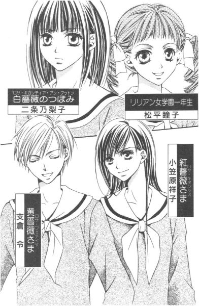

| [今野緒雪] マリア様がみてる11 | |
| 今野緒雪 | |
| (2015) | |
|
マリア様がみてる
パラソルをさして
今野緒雪
|
もくじ
茶色い雨傘の彼女
クラスメイトたち
ミルクティー、ウーロンティー
ウェルカム
白い日傘
訪問者
青空の下で
あとがき


マリア様がみてる パラソルをさして
「ごきげんよう」
「ごきげんよう」
さわやかな朝の挨拶が、澄みきった青空にこだまする。
マリア様のお庭に集う乙女たちが、今日も天使のような無垢な笑顔で、背の高い門をくぐり抜けていく。
汚れを知らない心身を包むのは、深い色の制服。
スカートのプリーツは乱さないように、白いセーラーカラーは翻らせないように、ゆっくりと歩くのがここでのたしなみ。もちろん、遅刻ギリギリで走り去るなどといった、はしたない生徒など存在していようはずもない。
私立リリアン女学園。
明治三十四年創立のこの学園は、もとは華族の令嬢のためにつくられたという、伝統あるカトリック系お嬢さま学校である。
東京都下。武蔵野の面影を未だに残している緑の多いこの地区で、神に見守られ、幼稚舎から大学までの一貫教育が受けられる乙女の園。
時代は移り変わり、元号が明治から三回も改まった平成の今日でさえ、十八年通い続ければ温室育ちの純粋培養お嬢さまが箱入りで出荷される、という仕組みが未だ残っている貴重な学園である。
こんなはずじゃなかった。
ロザリオを受け取ったあの日、あまりに不釣り合いな姉妹だって自分でもわかっていたはけれど。
いつかは飽きられて、呆れられて、妹じゃいられなくなることがあるかもしれない、って考えたこともあったけれど。
でも。
こんな風に、お姉さまが口を閉ざしたまま背を向けて遠くへ行ってしまうなんて。
「お世話おかけします」なんて、自分が簡単に誰かに渡されてしまうとは思ってもみなかった。
もういい、って逃げたのは、きっと。追いかけて欲しかった気持ちの裏返し。
何を置いても、一番大切だって、態度で示してもらいたくてしたのだ。
こんなことになるなら、自分が口に出して言えばよかった。
お姉さまが好きです。ずっとずっと、一緒にいたいんです、と。
でも、もう声は届かない。
濡れた身体で冷えた心を抱きしめて、捨てられた子猫のように雨の中で泣くしかなかった。
茶色い雨傘の彼女
１
雨に煙った車道を、ライトをきらめかせて車がすべらかに走り抜けていく。
まだ四時前だというのに、辺りは暗くて、水の膜を張ったアスファルトに、外灯や信号や車のライトが映って、まるで都会の夜景のようだ。
それだけでも、十分美しいのに。
瞳からあふれ出す涙がキラキラと光って、よりいっそう幻想的な光景に仕上げてしまう。──なんという皮肉。
このまま、ずっと雨に打たれていたら、消えてしまえるだろうか。
絶望的な思いも一緒に、消してしまえるだろうか。
ここ半年、祐巳はお姉さまばかり見ていた。瞳はお姉さまを追いかけ、耳はお姉さまの声を探し、唇はお姉さまに捧げる言葉を発する喜びに震えた。直されるセーラーのタイさえもが、お姉さまの指先を心待ちにしていたのだ。
小笠原祥子さまは、祐巳の生活を彩った。花も宝石も手編みのレースも香水も、色あせるほどきらめく宝物。こんなときめきを与えてくれる人はいない。きっと二度と現れない。
だからそんな素敵なお姉さまに捨てられた自分には、もう何の価値もなくなってしまったのかもしれない。
死ぬとか、生きるとか、そういう現実的なイメージではなくて、祐巳はただ消えてしまいたいと思った。
祥子さまがもういらなくなってしまったのならば、この身を祥子さまの前からなくしてしまいたい。捨てられてもなお祥子さまを慕うこの気持ちが残るのなら、心も連れてこの世界からなくなりたい。
雨が、身体を冷やしていく。祐巳は両肩を抱きしめてうずくまった。
キラキラと輝く車道は、星くずの瞬きに似ていた。本物の空は厚い雲で被われて、今は何も見えないというのに。
「祐巳ちゃん」
背後から、傘が差し掛けられた。祐巳を現実に引き戻してしまうのは、聖さまのやさしい声だった。
今更傘なんか差しても無意味なくらい濡れていたけれど、男物の大きな傘の中に入れてもらって聖さまの顔を見上げたら、少しだけ投げやりな気持ちが引いていった。
自分のことを気遣ってくれる人が、ここに一人いるんだ、って。自分がこの世から消えてしまったら、この人のやさしさも存在しなかったことになってしまうんだ、って。
「私の友達がね、この近くに下宿しているから。ちょっと寄っていらっしゃい、って言っているんだ」
聖さまが首を門の方へ向ける。するとそこには、大きな茶色い傘があって、それを差している私服の女性がお辞儀のつもりか、小さく傘を上下に降った。
「でも」
「このままじゃ、祐巳ちゃん風邪ひいちゃうよ。それに、その姿でバス二本乗り継いで帰るの、きつくない？」
言われて祐巳は自分を改めて眺めてみた。まるでバケツで水を被ったみたいな姿だ。
二つに縛った髪の毛の先からは、締まりの悪い蛇口みたいにポタッポタッと水が垂れているし、三つ折りソックスは、泥はねでダルメシアンの模様みたいになっている。
頭の天辺から足の先まで。確かに、人目を引く姿であることは間違いなかった。
「......」
「彼女が私にそうしないかって言ったんだから、気にしなくていいよ」
気にしなくていい、と第三者に言われても。そもそも祐巳は、茶色い傘を差している人とは一面識もないんだから。
「お気遣いありがとうございます。でも、私のことは──」
放っておいてください、って言うつもりで背中を向けた。泥がついてジャリジャリとした折り畳み傘の柄を掴んで、思い切り開く。すると聖さまは、冷ややかな視線で祐巳を見ながら言った。
「どうしても嫌なら、私、祐巳ちゃんの家までついていくからね」
「えっ!?」
勢いがつきすぎて関節が逆に折れてしまった傘をあわてて閉じて、祐巳は振り返った。
「当たり前でしょ。ちゃんと帰れるか、心配で仕方ないもの。お家の方にだって、事情を説明しなきゃならないし」
「......」
傘を持っているのに、この姿で帰ったら、お母さんはかなりビックリするだろう。何でもない、って言って許してくれるほど福沢家は放任主義の家庭ではないので、いずれは口を割らされてしまうに決まっている。
そうなるのは困る。祥子さまとのことは、家族には知られたくはない。
祥子さまが悪者にされるのも嫌だし、自分が捨てられたと話すなんて惨めすぎる。
惨めといえば。
何度やってもお猪口になってしまう傘を開こうと悪戦苦闘する姿も、かなり惨めではあった。
「佐藤さん、話ついた？」
茶色の傘が、近づいてきて言った。長いワンレングスの、肩まであるストレートヘア。黒縁眼鏡の下の切れ長の目もとと、薄い唇が印象的だ。
「えっと、祐巳さん......だっけ？ 遠慮しなくていいのよ。一人暮らしで狭い下宿だけど」
「あの──」
よく見てみたけれど、やっぱりその顔に見覚えはなかった。聖さまを「佐藤さん」と呼ぶことからして、他の高校出身者である可能性が大なのだ。
「バス停二つ分くらい歩くの平気よね？」
「は、はい」
「じゃ、行きましょうか」
「えっ!?」
しかし茶色の傘を差した彼女は、さっさと車道の脇の歩道を歩いていってしまった。祐巳は、バス停二つ分くらいは歩ける、という意味で「はい」と返事をしたのだったが、それがお宅にお邪魔することに対する承諾と解釈されてしまったようだ。
「さ、行くよ」
聖さまは、祐巳の傘の柄を取りあげると、惚れ惚れするような仕草で素早く開いて差し出した。
「ほら、後に続く。見せ物になりたいの？」
言われてはたと気がついた。校門やバス停付近にいる生徒たちの中に、こちらを訝しげに見ている人がいる。
確かに、校門から出た車道ギリギリの場所で、傘を差さずにずぶ濡れになった生徒を見て、「何かあったのでは」と思わないほうがおかしい。それが 紅薔薇のつぼみであれば、ますますもって注目されるのは当たり前なのだった。
「ね、祐巳ちゃん」
「......はい」
この状況では、取りあえずこの場を去るのが懸命であろう。祐巳は紅い傘をさし、聖さまの後について歩き出した。
けんか別れしたとはいえ、皆の目にはまだ祐巳は小笠原祥子さまの妹なのだ。最後の最後に、お姉さまの顔に泥を塗るようなことはしたくなかった。悪い思い出は、少ないに越したことはない。
いつもはバスに乗って帰る道を、雨を吸った重い制服と重い足取りでとぼとぼと進む。
傘には相変わらず土というか砂というか、ジャリジャリした泥水はついたままだったけれど、今まさに降っている雨の雨よけにはなったし、差して歩くことによって、少なくとも外側だけは洗い流せそうだった。
車道から一段高くなった細い歩道を、一列になって歩く。
雨は先ほどに比べて弱くはなっていたが、傘を差さずにいられるほどでもなかった。淡々と、長期戦覚悟で降り続いているような天気だ。
目の前には、聖さまの黒い傘がある。そしてその前には、名も知らぬ親切な女子大生の茶色い傘。
聖さまの姿で見え隠れするその傘は、持ち主には申し訳ないけれど、ちょっと椎茸を連想させた。そうやって改めて見ると、聖さまの黒い傘は、形はともかくキクラゲみたいに見えてくる。下ごしらえで、水で戻したキクラゲそっくりだ。
（あれ......？）
思わず苦笑した祐巳は、自分が笑えるくらいの余裕があるのだと知って、ちょっとだけ驚いた。
人間て、自分が感じている何百倍も図太い神経をもっているのかもしれない。本当に追いつめられていたら、きっと他人の傘のことなんて気にしていられないはずだ。
祥子さまとのことで大変な精神状態のはずなのに、祐巳の身体は、ただ足を交互に前に出すだけでは退屈なのだ。そして、命じていないのに、脳は勝手に思考を始める。外界からの刺激を求めて、視覚や聴覚も稼働している。
身体は、健康なんだ。
傷ついたのは心だけで、この肉体に直接のダメージはないんだ。
じゃあ、心って何だろう。
脳に住んでいるものではないのだろうか。
祐巳は、鞄を持っている手を少し持ち上げて、手の甲で胸の辺りに触れた。そこには心臓がある。心を思う時、どうしてか心臓あたりにあるような気がした。
（──ほらね）
結局、こんな風に思考を続けている。やっぱり脳は退屈しているらしい。
（ん）
椎茸の傘を眺めながら、ふと、祐巳は思いついた。
さっき見た時、聖さまのいた集団にこんな色の傘があっただろうか。
ピンクの花柄、紺のチェック、黄色のストライプだったか水玉だったか、そんな傘は覚えているのだが、茶色は記憶に残っていない。そもそも、女物の傘の中に一つだけ男物が混じっていたから、聖さまの傘が目立っていたわけだし。その茶色い傘は、近くで見れば聖さまの傘に引けをとらないほどの大きさの、紳士用雨傘だった。
「聖さま」
祐巳は、キクラゲ傘に向かって呼びかけた。
「んー」
「あの方、......聖さまのお友達は、何ておっしゃるのですか」
「え？」
「ですから、お名前は」
聖さまの前の人には聞こえないように、それでいて聖さまには通るように声を出すのは難しい。しかも、聖さまは祐巳に背中を向けている。構造上、耳は前方からの情報を多くキャッチするようにできている。
結局。
「あ？ 悪い、よく聞こえないから後でね」
という聖さまのシャットアウトで、その親切な女子大生については、何も情報が得られなかった。祐巳は名前も知らないまま、その人の姿にご厄介になるわけである。
バス停二つ分より少し手前で、道を曲がった。車道から住宅地へと入っていき、そこから更にバス停一個分くらい歩いた所に、彼女の下宿はあった。
「さ、どうぞ」
茶色の傘を少しつぼめて、門を入っていく姿を目で追いながら、祐巳は目を瞬かせた。その外観は、どう見ても一戸建てのお宅なのだ。それも、結構立派な感じの。だって、門扉は塀と見紛うほど大きい木戸でできていて、扉の中にある扉を開いて入る作りになっているのだ。
「ふーむ」
聖さまも、少し予想外だったようだ。
見るからに古そうな木戸を見上げて、唸った。
「ここが、......その」
下宿、という言い方から、祐巳は勝手に狭いアパートをイメージしていた。けれど、一軒家の中に間借りしているということも十分考えられる。だとしたら、ずぶ濡れの女子高生を勝手に連れ込んだりして、迷惑じゃないのだろうか。
「聖さま、あの──」
斜め前にある肘に祐巳が思わず手を伸ばしかけると、聖さまは。
「お邪魔しまーす」
茶色い傘に続いて、中に入っていってしまった。
「あーん、待って」
迷っている暇なんかない。祐巳はあわてて追いかけた。
ついて来ちゃったからには、もう引き返すわけにもいかないのだ。リリアン女学園のご近所ではあるけれど、バスを途中下車なんかほとんどしたことのない祐巳にとって、ここはほぼ見知らぬ土地。こんなところに一人ぽつんと取り残されるのは、たとえ天気のいい昼下がりでも心細いものなのだ。
敷地内に一歩入ると、そこには敷石でできた道が続いていた。
「気兼ねしなくて平気よ。私の部屋は離れだから。ほら、あそこ」
茶色の傘の持ち主の指先を目で追えば、道の終着点に本当に小さな建物があった。その横には、古い平屋の母屋がデーンと建っている。
「ちょっと待ってね。一応大家さんに断ってくるから」
彼女は目の前にある母屋の玄関ではなく、敷石を踏みながら庭の方に回って、一枚のガラス窓の木枠を小さく叩いた。すると、中から誰かが窓を開ける。思った以上に庭が広いので、祐巳の位置からはその「大家さん」はよく見えなかったけれど、雰囲気から何となくお年をめした女性かしら、と感じた。
「ＯＫ。どうぞ」
戻ってきて、彼女はそう言った。どうやら、許可が下りたらしい。
「男子禁制なの。女性はいいけれど、大家さんに断ってからって約束」
「厳しいですね」
「そうしないと、学校の近くだから、溜まり場になっちゃうでしょ」
「ああ、なるほど」
敷石の道なりに進む。
庭は、計算なのか自然とそうなってしまったのか、あまり高くない山の裾野辺りにある手つかずの風景みたいだった。石畳の側は辛うじて地面が見えているけれど、一歩踏み込むと芝が伸びたのか雑草なのかよくわからない草が地表を被っているし、高木には蔓植物が、グジャグジャに絡まって伸びているといった具合だ。
母屋の、さっき「大家さん」がいたと思しき窓ガラスの前を横切る時、祐巳は、薄いカーテンを少し開けてこちらの様子を伺う、お祖母ちゃんくらいの女性と目があった。
「お、お邪魔します」
思わず立ち止まって深々と礼をすると、その人はあわてたようにカーテンを閉ざしてしまった。
「何、何？」
数歩前を歩いていた聖さまが、引き返してきて尋ねた。
「いえ......今、人が──」
「人？ 大家さん？」
じゃ挨拶しないと、って聖さま。今更窓の方に視線を向けても遅いって。カーテンは既に閉められてしまったし、そのカーテンも薄手だから、後ろに隠れていないことくらい見ればわかる。
「どうしたの？ 入って」
茶色い傘の彼女が、入り口の鍵を開けて招く。
「はーい」
聖さまと祐巳は返事をして、離れへと続く石畳を歩いていった。
途中でもう一度だけ振り返ってみたけれど、あの窓はカーテンが閉ざされたままだった。
２
身体全体に、温かいシャワーが浸みていく。
思っていた以上に、冷え切っていたのだろう。浴室の乾いたタイルに足を下ろした時も、シャワーの出だしの、まだ水の部分に手を濡らした時も、冷たいというよりむしろ生ぬるいという感想を覚えたくらいだ。
だから、ここの住人であるところの「茶色い傘の彼女」が、有無をいわせず祐巳を浴室に押し込んでくれたのは、たぶん正解だった。
躊躇する祐巳に、聖さまが「グズグズしてるなら無理矢理脱がせるよ」と言ったのも、冗談じゃなくて、冷えた身体を心配してくれたせいだと思う。何にしろ、あのセクハラまがいの一言で、シャワーへの弾みがついたのは間違いない。
「祐巳ちゃん。バスタオルと替えの下着、ここに置いておくから」
茶色い傘の彼女が、脱衣所から声をかけてくれた。いいかげん、名前を聞かなきゃいけないんだけれど、一度聞きそびれるとなかなか絶好のタイミングは巡ってこない。
「......すみません」
お礼を言ってから、複雑な気分に襲われる。
ここは風呂場であるわけだし、全身シャワーを浴びているわけだから、一応祐巳は今何も身につけていない。生まれたままの姿、フルヌード、すっぽんぽん。いろいろな言い方はあるけれど、つまりは全裸なわけである。押し込められた脱衣所で、濡れて重くなった制服は比較的大胆に脱ぐことはできたのだが、下着姿で少し困ったのだった。
替えの下着を持ってきていない。
ブラジャーとスリップは、比較的抵抗感が薄いけれど、もうショーツなんて、一度両足から離れた物は洗濯しないことには二度とは穿きたくないものなのだ。
どうする、祐巳。
こんなことなら、途中のコンビニで下着を買ってから来るのだった、なんていう後悔は、その場になってみないことには思いつかないもの。今、洗うか。しかし、乾かす間、何を穿いていたらいい。スリップの裾のレースも雨で湿っているし。
なんて迷いながらシャワーを浴びていた時だったので、替えの下着という言葉はありがたかった。でも、祥子さまのランジェリー（下着という言葉で一緒にくくるには畏れ多い）のようにすごくゴージャスなものだったらどうしよう。お小遣いで買って返せる範囲の物がいいんだけれど──。
と、脱衣所との境の曇りガラス戸を開けてみると、籠の中に、バスタオルと、着替え一式が入っていた。
お店で畳まれた時のまま皺がついた、綿百パーセントの白いタンクトップとショーツ、そして新品ではないけれど洗濯石鹸の匂いがほのかにするグレーのスウェットの上下。
自分一人の脱衣所で「お借りします」って頭を下げて、それから着替えた。乾いた衣類は、身につけると温かで、人の優しさみたいなものも一緒にまとっているみたいに感じられて、またちょっとだけ祐巳は涙ぐんでしまった。
身体にとって不快な環境は、心をマイナス方向に誘導してしまうものなのかもしれない。いつも身綺麗にしていようと思う。
自暴自棄になった自分は、あまり好ましいとはいえない。祐巳はふと、タイを直してくれるお姉さまの手を思い出した。
「ちゃんと温まれた？ 時間かかっても、やっぱりお風呂沸かした方がよかったかなぁ」
祐巳がお風呂から出ると、祐巳の制服はハンガーに掛けられ窓辺に吊されていた。茶色い傘の彼女は、湿らせたタオルでスカートの襞についた泥はねを丁寧に拭いてくれている。
「あ、いえ。十分温まりました。ありがとうございました」
「そう、よかった。適当にその辺に座ってくつろいで頂戴」
言われるままに、ちゃぶ台の側の座布団に腰を下ろす。テーブルにクッションではない。昔ながらのちゃぶ台に、煎餅布団ならぬ煎餅座布団なのだ。
聖さまは、キッチンに立って何かしている。こちらも、どちらかといえばキッチンではなく台所と呼んだ方がしっくりはまるようだった。
「あの──」
「替えの下着のことなら気にしなくていいわ。進呈するから、そのまま着て帰ってちょうだい。置いていかれても、私も困るし」
「......」
確かに。
「友達が泊まりにくる時のために、百円ショップで何枚か買っておいたのよ。こういう時こそ使うべき物だわ。でしょ？」
「......はい」
トータル二百円、プラス消費税。人の厚意とは、もちろん金額で表せるものではないけれど、自分のために相手がいくら出費したかということは、重大な関心事である。もちろん、今回のような場合は少ないに越したことはない。
お財布の中に、百円玉二枚くらいは入っているけれど。それを出したら目の前の彼女は、きっと気を悪くするだろう。だから今は、ただ素直に感謝すればいいのだ、と祐巳は思った。
茶色い傘の彼女は、制服の表面の汚れを落とすと、今度はドライヤーをあて始めた。
「見ている分には素敵だけれど、ワンピースの制服っていろいろ大変よね」
着脱ぎのこととか、手入れのこととか、ってブツブツつぶやく。
「あ、私がやります。すみません、気がつかなくて」
あわてて駆け寄ると、彼女はドライヤーを高く上げて取られまいとした。
「いいの。やらせて。......むしろやりたい」
ニコリともしないで、そんな見つめられても。そういえば、この人あんまり笑わない。
「そう、やってもらいな。彼女、祐巳ちゃんより器用そうだ」
聖さまがキッチンから戻ってきて、背後からマグカップを差し出した。
「ミルクココア。祐巳ちゃんのには特別にお砂糖入りね」
祐巳はドライヤーを持とうとして伸ばした手で、湯気の出ているカップを受け取って、元いた位置に座り直した。
「......いただきます」
甘くておいしい。聖さまは、祐巳の味の好みを知り尽くしているから。だから、絶対に失敗がない。
こんな甘ったれにこれ以上甘くしちゃだめだよ、って言ってやらなきゃいけないけれど。今は、言わない。
少しの間、この温かくて甘い空間に浸っていたい。許されていたいと思ったから。
「ここ、置くね」
聖さまは、ちゃぶ台の上に茶色い傘の彼女の分のカップを置いて、祐巳の脇に座った。
雨はまだ降っている。けれど雨音は、それが雨音なのか気づかないほど静かだ。もしかしたら、ただ耳が慣れてしまっただけかもしれない。
「ここ、落ち着くなぁ」
カップの中味をチビチビ飲みながら、聖さまが天井を見上げて独り言のようにつぶやいた。
「......ええ」
祐巳もうなずく。何ていうか、確かに「落ち着く」と表現するのが一番適当な感想なのだった。
改めて見回すと、不思議な住まいなのだ。
離れであるが、母屋からは渡り廊下などでつながってはおらず、完全に独立した建物だった。だからといって、子供の勉強部屋用に一時しのぎに造ったプレハブみたいに簡素なものでもなく、屋根に瓦を使っているような、ただ小さいだけで外観は普通の家なのだ。
玄関を入ると、ワンルームマンションを思わせる間取り。キッチンとトイレとお風呂がそれぞれあって、奥に一部屋。それがフローリングの洋室であるならワンルームにありがちなのだが、純和風の六畳間なのである。
だからといって、伝統ある日本家屋をおしゃれに再現したという感じではない。そこにあるのは、昭和三十年代とか四十年代とか、それくらいに普通に作った部屋がそのまま残っているみたいな古さだった。祐巳は、お父さんの本棚でこんな部屋ばかり集めた写真集を見たことがある。
「そうだ、聖さま」
祐巳は、脇にある肘のシャツの袖を摘んで囁いた。
「ん？」
「あの、さっきの──」
「さっきの？ ああ、うん」
言いながら聖さまは、窓の側で制服を乾かしてくれている彼女に顔を向けた。
「あのさ、祐巳ちゃんが名前は何ですか、って聞いてるんだけれど」
「！」
聖さま、何ということを。そういうことは、こそっと教えてくれればいいことじゃないか。本人に尋ねる気があるんだったら、もっとスマートに聞く、っていうのに。
「ああ」
ドライヤーのスイッチをオフにして、彼女は顔を上げた。
「ああ、ごめんなさい。自己紹介がまだだったわね。加東よ。加東景」
「......かとう、けい」
うわっ。誰かさんの名前とそっくり。──と、口に出さずに思った時。
「あっ！」
その、誰かさんが叫んだ。
「そうか、おぬしが加東景だったか......！」
「え」
祐巳はわけも分からず、二人の顔を見比べた。二人っていうのは、もちろん佐藤聖さんと加東景さんだ。
ちょっとした驚きと感慨のこもった表情の聖さまに対し、加東景さんは表情の乏しい顔をわずかに動かして、呆れたような諦めたような顔で笑った。
「佐藤さん。もしかして、私のこと誰かわからないままついて来たの」
「うわっ......！」
祐巳は、思わず声をあげてしまった。
そうでした。
佐藤聖さまという人は、そういう人なのだ。
３
何それ、って思った。
先輩だけど、尊敬しているけれど、大好きだけれど、いつも助けてもらっているけれど。そんなことは取りあえず脇に置いといて、あなたおかしいんじゃないですか、って祐巳は真っ正面から言ってやりたかった。
聖さまの友達だって言っていたから、お言葉に甘えてお邪魔したのだ。名前も覚えていない人の家に、濡れ鼠の後輩連れ込むなんて、いったいどういう神経しているのだ。図々しいにもほどがある。──というより、今ここに存在していること自体、祐巳居たたまれなかった。
「顔は何となく見たことがあったし、私のこと佐藤さんて呼んだし。それに」
聖さまは悪びれた様子もなく、お砂糖もミルクも入っていないココアをグビリと飲んだ。
「祐巳ちゃんをどこかで乾かすのが最優先だったし」
それを言われると、辛い。元凶は自分なのだ。しかし勝手知ったるという感じで、台所に立つ聖さまの様子を見てて、誰が二人の友情を疑えるだろう。
「あの、じゃ加東さんは」
そんなに親しくない聖さまに声をかけ、その後輩を収容する気になったのはなぜなのだろう。聖さまのことをよく知っているから、ひっくるめて面倒見てくれる気になったのかと、祐巳は今まで思っていた。
「別に佐藤さん一人だったら声なんてかけなかったわ。見ず知らずの高等部の生徒にもね」
おっとりとまではいかないが、ゆっくりとした口調で淡々と加東さんは言葉を紡いだ。片手にドライヤー。今はスカートのプリーツ辺りに風を当てている。
「だって、事情も知らないのに手なんて出せやしないもの」
「そりゃ、賢明だ」
お餅つきで餅をひっくり返す人みたいに、「佐藤さん」が絶妙なタイミングで合いの手を入れる。
「雨の中で泣いていた女の子が、頼り切っていたからかしら。佐藤さんの印象が変わったの。ただチャラチャラしているだけの女子大生じゃないんだ、って」
チャラチャラ。
聖さまの表面的な部分を、的確に言い表している言葉ではある。
「言ってくれるわね。けど、あなたはどうなの。私の印象に残っていないほどつき合いの悪い人間が、よくもまあこんな世話をやいてくれるものだわ」
「大学は勉強しにくる場所でしょ。つき合いなんて、必要ないわ」
「あー、だんだん思い出してきた。加東景、あんたは初対面の時、私の顔を睨んでいたっ」
「睨んだんじゃないわよ。呆れて見ていただけ。被害妄想」
「被害妄想だって？」
聞けば、二人にははっきりとした出会いがあるらしい。
大学の同じ教室にいつでも何となくいたような気がするな、なんていう認識の仕方ではなくて、ちゃんと目と目があって相手を確認したはずなのだ。
「入学式が終わって、クラス別に集められた時にね、出席をとったの。ある名前が呼ばれた時、返事をしたのが二人いて」
「佐藤聖さんが間違って、加東景さんの名前の時に『はい』って言ったんでしょう？」
「その通り」
目に見えるようだった。しかし、そんな強烈な出会いがありながら、顔を忘れてしまう聖さまっていったい──。
「とにかく、人は話してみないとわからないものだわ。ね、佐藤さん」
「こんなんで、私のことわかった気になってるの？」
「ほんのちょっとね。少なくとも、思った以上に奥が深い人間だってことくらいはね」
はい、できた。加東景さんは、ドライヤーのスイッチを切って振り返った。
「さ、じゃあ次は祐巳ちゃんの番ね」
自分でできるっていうのに、景さんは祐巳の髪の毛を乾かしてくれた。髪の根もとまで届くように、指を通して髪を立ち上げて。軽くゆするように、温かい風が地肌まで送りこまれてくる。それが何とも気持ちよくて眠くなった。
ちょっとだけウトウトすると、夢に祥子さまが出てきた。
祥子さまは泣いていた。広い部屋の片隅で、肩を丸めて座っている。辺りは薄暗い。涙は見えなかったけれど、確かに泣いていた。
祐巳よりも瞳子ちゃんを選んだのは、祥子さま。なのに、どうして泣かなければならないのだろう。
ああ、そうだ。これは夢だから。
祐巳と別れて寂しい、と祥子さまに泣いて欲しいと思っている。それが祐巳の願望なのかもしれない。
「それ済んだら、お家に電話するからね」
聖さまの声が、祐巳を現に呼び戻す。
「大丈夫。私がうまく説明してあげるよ」
祥子さまの幻を追い払って、そして子守歌みたいに心を揺する。
聖さまも加東さんも、何も訳を聞かなかった。
ただ、心の外側のことを、精一杯ケアしてくれた。冷えた身体を温めて、乾いた衣服をあてがって、すんなりと家族のもとに帰れるように──、と。
でも、それだけで十分だった。
それこそが、今の祐巳に一番必要なものだったのだ。
４
外に出ると、蒸れた空気が全身を包んだ。
雨はいつしか止んでいて、わずかの間に日が射したのか、気温がずいぶん上がっている。
どこに流れていったのだろう、あんなに世界を暗闇にしていた分厚い雲の天幕は、今や薄いレースのカーテンほどにしか空を覆っていなかった。
結局、あれから聖さまはお馴染み優等生モードの声を出して、祐巳の自宅に電話をかけてくれた。
ただ、ひどい雨に降られて服が濡れてしまったから、乾かすために学校の近くの友人の家に寄ったので帰宅が遅れます、って。台詞を書いたメモがあるわけでもないのに、流れるように説明できちゃうのだった。
嘘じゃないけれど、ちょっとした誇張は事実を違った印象に仕上げていく。聖さまの言い方だと、急に横殴りの雨にやられたといった感じで、一緒にいた聖さまも加東さんもずぶ濡れになったようにもとれた。
もちろん、お母さんはその言葉を言葉通り信用して、丁寧にお礼を言い、後から電話に出た祐巳にも「きちんとお礼を言ってから帰りなさい」と指令を出した。ちなみにリリアン出身のお母さんは、元白薔薇さまである聖さまのファンだ。
「時間が逆転したみたいだ」
聖さまが、立てかけておいたキクラゲ、もとい黒い紳士用傘を一振りして、水滴を払った。
正真正銘の黄昏時であるのに、二時間ほど前の方がむしろ暗かった。
不思議な天気。
聖さまじゃないけれど、確かに時間の感覚がおかしくなる。
雨に打たれ、黒い車の走り去った車道をぼんやり見つめていたあの時から、二時間。それはたった二時間しか経っていないとも思えるし、もう二時間も経ってしまったとも感じられた。
あれは本当にあったことなのか。もしや時間が逆回転していて、これから起こることなのではないのだろうか。この家に入る前と後のギャップが大きすぎて、何だか夢をみているみたいだった。
しかし外に出てみて、気がついたことがある。
雨が上がるように、涙もすっかり乾いていた。
祥子さまのことを思うとまだ胸は苦しくなるけれど、消えてしまいたいと願った、あの絶望的な気持ちはなくなっていた。
「いろいろ、ありがとうございました」
「いいえ。可愛いお客さまを招くことができて、嬉しかったわ。私、一人っ子だから、妹の面倒をみているみたいで」
加東さんは、祐巳の紅い折り畳み傘を差し出した。いつの間にか内側についた泥も洗い流して、ドライヤーで乾かしてくれていたものだ。折り目正しい畳み皺は、几帳面な性格を物語っていた。
「よかったら、またいらっしゃい」
「ほーい」
聖さまが先に返事をした。が、加東さんに冷たくあしらわれてしまった。
「佐藤さんは誘っていない。祐巳ちゃんに言ったの」
「はい」
祐巳がうなずくと、乾かして軽くなった二つの毛束がピョンピョンと弾んだ。
バス停まで送っていってくれるという申し出を断って、門の内側で加東さんに別れを告げた。ジャングルのような庭を振り返ると、時間的なものか辺りの明るさのせいか、さっきよりずっと風流に見えた。
そこにいるかどうかわからないけれど、祐巳はあの窓の前に向かって頭を下げた。レースのカーテンが微かに揺れたように見えたのは、気のせいだろうか。
「祐巳ちゃん。ゴロンタの話、覚えている？」
唐突に、聖さまはつぶやいた。民家の建ち並ぶそう広くない道を、大通り目指して二人並んで歩いていた時だ。
「ゴロンタ？ あ、はい」
聖さまたちはゴロンタ、祐巳の学年はランチ、令さまたちの学年はメリーさんという名で呼んでいる、高等部の校舎付近をテリトリーにしている野良猫のことだ。その昔、子猫の頃カラスに襲われていたのを聖さまが助けたという過去がある。黒っぽいトラ猫は無事成長し、中庭や校舎の裏で今でもちょくちょく目撃されている。
「今の祐巳ちゃんは、傷ついた子猫みたいなものだよね」
だから、どうなんだって。そういう結論を続けることなく、聖さまは言葉を結んでしまった。
それでも祐巳は、その先にあるはずの言葉を無理に探さなかった。ただ「はい」と言って、小さくうなずいた。何となくだけれど、聖さまの言わんとしていることは理解できるような気がしてきたのだ。
大通りに出て、そこはちょうどバス停とバス停の間くらいの場所だったから、進行方向に向かって歩いた。
「しかし。人間、話してみないとわからないこともあるよね。確かに」
「え？」
一瞬、祥子さまとのことを言っているのかと思ったが、違った。
「加東景のこと」
「ああ──」
「意外と仲よくできそう」
「そうですね」
言いながら、祐巳はちょっとだけ笑った。本人は気づいていないかもしれないけれど、聖さまは世話焼きのしっかり者が好きなのかもしれない。親友である祥子さまのお姉さま、水野蓉子さまがやはりそんなタイプだ。聖さまは本当のところ後輩の面倒をみるより、誰かに甘える方が向いているのではないだろうか。本人は否定するかもしれないけれど、潜在的に求めている、ようにも見える。
「おっ」
聖さまが後ろを振り向いて叫んだ。背後からＭ駅行きのバスが、迫ってきている。
「祐巳ちゃんダッシュ！」
指示を待たずに、祐巳も駆けだしていた。これを逃してなるものか、って。
電車と違ってバスは、道路の状況なんかに影響されて、一台逃すと次がなかなか来ないことがあるのだ。
辛うじて先に停留場について、二人は荒い息でバスに乗り込んだ。
「元気だね」
お父さんくらいの歳の運転手さんが、ニコニコしながら二人を迎えた。
「そうですか」
定期券を提示して、祐巳はバスの後方に向かって進んだ。
元気。
ああ、本当に。端から見れば、元気な女子高生にしか見えないだろう。
こんなに走れるくらいの力が、まだこの身に残っている。
「元気だって」
聖さまも、祐巳の耳もとで笑った。
バスの中は、座れるほどガラガラではないけれど、さほど混んでもいなかった。部活が終わって下校する生徒であろうか、高等部の制服姿が十数人、学園の二つ先のバス停から乗り込む祐巳を不思議そうに眺めて、目が合うと会釈した。祐巳も、微笑して頭を下げた。
約二時間前に何かあったなんて、たぶんここにいる高等部の生徒たちは知らないし、今の祐巳から想像もつかないことだろう。
いくつかの停留場を通過し、バスが交差点を曲がる。吊革につかまった手の肘を祐巳の肘に軽くぶつからせながら、聖さまが言う。
「送らないね」
「はい」
平気、って言えるほど復活していないけれど、バスに乗り遅れないように走ることくらいはできる。見ず知らずの生徒に、ほほえみながら挨拶を交わすくらいの余裕はある。
だから、大丈夫。一人でちゃんと帰れる。
いつものように、駅でバスを乗り換えて、停留場からはいつもの道のりをただ家を目指して歩けばいいだけのこと。
右左、右左。
そうして歩いていけば、すぐに家につく。
右左、右左。
そんな風にきっと、明日という日もやって来るに違いない。
５
家に帰ったらもう七時前で、お夕飯の準備がすでにできていた。
「着替えして、あとうがいと手洗い。五分で済まして食卓に集合」
聖さまの電話が効いたのか、お母さんは何も詮索しなかった。お世話になった加東さんのお宅のことを、二、三質問しただけだ。まあ、福沢家は子供のことを全面的に信頼しきっているから、疑うということをされたことがない。
夜、明日の教科書を用意しようとして鞄を開けてギョッとした。今日使った教科書が、とんでもないことになっていた。
「わっ、わっ、わっ」
一瞬、中で何が起こったのか理解できなかった。教科書の、天、つまり上の切り口部分が水を吸ってブアブアに波打っていたのだ。
すっかり忘れていたけれど、この鞄、聖さまに抱きついた時に、傘と一緒に地面に落下していた。たぶんその時、鞄の蓋の隙間から水たまりの水が侵入してしまったのだろう。
「......ああ」
数学と現国と英語のグラマーの教科書を立てて上から見ると、ページの間に空気の層を作ってミルフィーユそっくりさんになってしまっている。
濡れているうちに手当てすればどうにかなったかもしれないが、一度乾いてしまったものは、アイロンをかけたところで元に戻ることはない。もう一度濡らしてみたらどうだろうか、という考えも浮かんだが、更にひどい状況になりそうなので断念した。
この教科書は、二年生の間中使用する。このシミを見るたびに、きっと今日の日のことを思い出して切なくなるだろう、と祐巳は思った。だが、それも仕方ない。
シミの付いた教科書は、元には戻らないのだ。
祐巳は机の上の本立てに教科書を戻し、明日の教科の準備をした。ちょっとだけ、理由のはっきりしない涙がこぼれたけれど、我慢しないで流れるだけ流した。
今は、頑張らない。
無理して元気な振りはしない。今は傷ついた子猫だから。傷を舐めて、丸くなって、疲れた心と身体をいたわってやっていいんだ。
きっと、いつか本当に力がわいてくる日のために、今はゆっくり休もう。
明日のことは、また明日考えればいいのだから。
電気を茶色くし、布団にもぐって、祐巳はいろいろあった今日の日に別れを告げた。
クラスメイトたち
１
翌朝、目覚めた祐巳の肺は重かった。ちょうど、プールをした後みたいな感じ。
瞼も、多少だけど腫れている気がする。
こめかみの辺りにわずかな鈍痛。昨日の涙の後遺症。
もっともっと小さかった頃、全身を使って泣いた翌日は、必ずこんな感じで朝を迎えた。そんなに泣き虫な方ではなかったけれど、一度泣けば激しかった。うまく言葉で伝えられなかったから、泣いて訴えるしかなかったのだ、あの頃は。
今もあまり変わっていないかもしれない、と祐巳は思った。熱を出さなかった分だけ、ましになったくらいか。
「しゃっきりしろ、祐巳」
両頬を軽く叩いて、自分に喝を入れた。無理に元気を出そうとしているのではない。ただ、腑抜けた顔をしたまま学校には行きたくなかった。
クローゼットから、カバーの掛かった制服を取りだして着た。昨日来ていた制服は、加東さんに乾かしてもらっていつもと変わらないくらいにまで復活したけれど、後からシミになったりすると大変なので、昨日のうちにクリーニング屋さんに出したのだ。
タイをきちんと結んで、ついでに鏡に向かってほほえんでみる。ちょっとぎこちないけれど、大丈夫。言われなければ、瞼の腫れだってわからない。
紅い折り畳み傘を手にして、家を出る。
今日の天気予報では、雨は二十パーセントだった。
「祐巳さん、今朝はやけにパリッとしているじゃない」
「......」
どこにでも目ざとい人はいるなぁ、と祐巳は顔を上げた。新聞部の真美さんだ。
しかし、登校してまずクラスメイトの服装チェックとは。朝目があったなら、まず「ごきげんよう」だろうに。
「うん。ちょっと。昨日雨に降られちゃって──」
当たり障りのない答えをつぶやいていた祐巳だったが、真美さんの肩越しに、長い三つ編み姿の少女を見つけて、あわてて椅子から立ち上がった。
「ちょっと、ごめん」
真美さんをその場に残して、祐巳はいろんな椅子にぶつかりながら由乃さんの前に飛び出した。
「──由乃さん」
「......」
教室に入ってきたばかりの由乃さんは、不審な顔をして見つめ返した。
「昨日は、ごめんね。心配してくれたのに、何か、突っぱねちゃったみたいで」
昨日の放課後のことだ。祥子さまと話し合うように、って由乃さんに薔薇の館に引っ張っていかれそうになったのを拒んだのだった。祐巳は。
「ふーん」
由乃さんはため息をつくみたいにそう言って、自分の鞄を机の上に置くと、顎を廊下側に動かして祐巳に外へ出るよう促した。
確かに、教室内は二人で静かに話す環境にはない。祐巳は、謝ってしまったことで一応スッキリはしたのだけれど、由乃さんはそうはいかないらしい。恨み言の一つや二つ受け止める覚悟で、祐巳は先に歩き出した由乃さんの後を追いかけた。
廊下を歩き階段を下りながら祐巳は、由乃さんの背中で揺れる三つ編みだけを見つめていた。時折弾むそれは、こちらの心の動き次第で、怒っているようにも楽しく踊っているようにも見える。
由乃さんは、薔薇の館がある方とは別の中庭までやってくると、背の高い木の陰までやってきた。そこに人気のないのを確認して、立ち止まり、祐巳を振り返る。
二人はちょうど向かい合う形になって、祐巳は一瞬身構えた。由乃さんは無言で、にらみつけるみたいにこちらを見つめているのだ。
何をされるんだろう。急にドキドキしてきた。叩かれるほど悪いことをしたつもりはないのだが──。
すると。
「祐巳......！」
由乃さんは、緊張が切れたみたいに祐巳の首に両手を回して抱きついたのだった。
「ど、どうしたの」
「よかった。私、もうだめかと思った。私たち、もうだめになっちゃうのかと思った」
「え？」
私たち、と由乃さんは言った。だめになってしまいそうなのは、祥子さまと祐巳だけではなかったのだろうか。
「でも、大丈夫なのよね？ 祐巳さんが私に『ごめんね』って言いにきてくれたってことは、私とまだ友人関係を続けたいって意味なのよね？」
「そう......いうつもりだけど？」
「ならいい。祥子さまとどうなろうと、祐巳さんが私の友達をやめないならそれでいい。もう、薔薇の館に無理には誘わないから、山百合会と一緒に私を捨てたりしないで」
「由乃さん──」
祐巳が昨日大変なことになっている間、由乃さんの中でもいろいろな葛藤があったらしい。
しかし、この状況をどうしたらいいのだろう。身長差がほとんどないから、聖さまにムギュって抱きしめられるのとは全然違って、新鮮っていうか何ていうか、妙にドキドキしたりして。
「つぼみじゃなくても、私は祐巳さんのこと大好きだからね」
由乃さんは身体を離して、祐巳の手を取った。
「......」
いつだったか、「ずっと仲よしでいようね」って握手した。あの時は、いずれ薔薇さまと呼ばれる日が来るという前提があって、二人ともあの頃の薔薇さまたちのようにいい関係を作りたいと願っていたのだった。
だけど、今は少し違う。
祐巳も、たとえ山百合会の仲間でなくなっても、由乃さんと今まで通り友達でいたいと思い始めていた。
「うん、由乃さん私も好きだよ」
二人の関係が、変化している。進化しているようにも思える。
ずっと仲よしでいようね、そんな約束をしていた自分たちが懐かしい。人間同士の絆は、口で確認し合えば成立するというものではないのに。自分がどれだけその人を必要としているか、どれだけ必要とされているかを思い知ればいいだけのことなのに。
「ごめん」
目の前には、まだたくさんの絆があったのに。そのどれもが、かけがえのない人につながっているものなに。
「ごめんね、由乃さん」
祥子さまのことで頭が一杯で気づかなかったけれど、きっと由乃さんは心を痛めていたのだろう。祐巳が由乃さんとの関係まで断ち切るつもりではないのか、と。
「心配はした。でも、いい。私が勝手に心配してるだけだし」
由乃さんは少しだけ小道を歩いて振り返った。
「それに、昨日は薔薇の館に行かなくて正解だったよ。祥子さま、早々と帰ったらしいから」
「うん」
祐巳は、エニシダの枝を人差し指で揺らした。
「うん、って。どうして知ってるの？ 会った？」
「うん」
「それで......うまくいったの？」
遠慮がちに、由乃さんが尋ねる。祥子さまと祐巳がどうなってもいい、そう口では言いながら、やはり気になって仕方ないのだろう。
「だめ」
祐巳は笑った。
「私が逃げちゃったからね」
昨日の今日で、あんなに辛かったことなのに、どういうわけかサラリと言えた。まるで昨日のドラマのあらすじを語っているみたいだ。
「どうして逃げるのよ」
由乃さんは眉をひそめて質問する。
「瞳子ちゃんが一緒だったから」
祐巳の答えを聞いて、由乃さんは両手をグーにしてブルブル震えた。
「瞳子ー!? あ......の──、どうしてくれよう」
「どうもしなくていいよ。瞳子ちゃんが悪いわけじゃない。彼女はきっかけだっただけだもの」
「でもさ」
由乃さんは不満そうだ。だから、少し言葉を補った。
「瞳子ちゃんが一緒でも、私が祥子さまを信じられたなら平気だったはずなの」
「なるほど。祥子さまと祐巳さんの問題なわけね。何となくわかるような気がする」
由乃さんは胸の前で腕を組んで、「うーん」と唸った。何となくと言いながら、かなり深い部分まで理解してくれているようだった。
人間関係は一対一が基本だから、祥子さまが祐巳を切り捨てて瞳子ちゃんを引き寄せたとしても、それは祥子さまの決めたことで、瞳子ちゃんには関係ない。
人の気持ちは変わるものだ。ましてや祥子さまは祐巳の所有物でもなんでもなくて、人格をもった一人の人間。
だから瞳子ちゃんに仲を引き裂かれたなんて、ゆめゆめ思わないことだ。
「で、どうする気よ。祐巳さんは」
「どうしようかな」
薔薇の館に行って、祥子さまと会って、はっきり決着をつけるべきだとは頭ではわかっているけれど、昨日あんな醜態をさらした手前祥子さまに会いにいきづらい。
「薔薇の館での、祐巳さんがいないランチタイムは寂しいよ。昼休み、ここのところどうしてるの？」
「教室でお弁当食べている」
しかし、それもなかなか難しいものなのだった。
多忙なはずのつぼみが、こう連日教室でお昼を食べているということは何かおかしい、とそろそろ気づきだしている人もいるのだ。気のせいでもなんでもなくて、山口真美さんや武嶋蔦子さんあたりと、妙に目が合うのだ。近頃。
「いっそ、以前志摩子さんがやってたみたいに、外の人気のない場所でお弁当食べようかな」
「梅雨時に？」
手の平を上に向けて、由乃さんが雨の滴を受けるポーズをした。今日はまだ降っていないけれど、いつ降ってもおかしくないのがこの時期の雨だ。
「降ったら傘をさして」
「祐巳さん、今日パン？」
「ううん」
「片手で傘を持ってお箸使うの、相当技術がいるわよ」
「そっか」
頭の中でシミュレーションしてみたけれど、やはりかなり難しそうである。
「どっちにしろ、あんまり悩んでいる人には見えないけど」
どんな様子だったら納得したのだろう。由乃さんは、ガッカリしたみたいにつぶやいたのだった。
２
お昼休みはすぐにやってきた。
「祐巳さん。薔薇の館には──」
四時間目の授業が終わると、お弁当が入った手提げ袋を持った由乃さんが、祐巳にそっと近づいて言った。
「行かないよね、やっぱり」
祐巳の表情を見て、先に答えを導き出す。
「ごめん」
「ううん、確認しただけ。でも」
由乃さんは、すぐには引き下がらずにボソリと告げた。
「今日は欠席だから、祥子さまは薔薇の館に来ない......けど」
「お休み......、なの？」
そのことは、祐巳は知らなかった。
広い校内で、クラスが違う誰かと偶然会える確率なんて、そう大して高くはないのだ。ましてや学年が違う者同士ならば、ますます確率は低くなる。
「令ちゃんが言ってた。休み時間に、用事があって祥子さまの教室行ったんだって。そうしたら」
祥子さまの欠席を知らされたのだ。
「どうしたんだろう」
「そこまではわからない、って」
このところ祥子さまは、お休みしたり早く帰ったりすることがよくあった。どこか身体の調子でも悪いのだろうか。いや、しかし昨日会った時は、ものすごく元気とまでは断言できないものの、具合が悪いようには見えなかった。
「どうする？」
由乃さんは、もう一度尋ねた。薔薇の館に行くか、行かないか、と。
「行かないことにする」
「そっか」
無理に誘わないという約束を、由乃さんは守ってうなずいた。
祥子さまが来ないから薔薇の館に行くなんて、そんなことできなかった。喩えが適当じゃないかもしれないけれど、それじゃまるで、旦那さんの留守中に自宅に上がり込んでいる「奥さんの愛人」みたいだ。そんなこそこそするのは情けない。
薔薇の館に行くのだったら、祥子さまが居る時、の方がいい。
堂々と、胸を張って入れないようなら、行かなくていいのだ。
由乃さんが教室から出ていくと、クラスメイトの三人が入れ替わるように祐巳を囲んだ。
「祐巳さん、よろしければミルクホールにご一緒しません？」
「はい？」
突然の申し出に、ちょっと緊張が走る。
「薔薇の館に行かれないのでしたら、是非」
「私たち、もう少し祐巳さんとお近づきになりたいと思ってましたの」
彼女たちの共通点をあげるならば、皆、高校二年生で祐巳と初めて同じクラスになったということであろうか。二ヶ月とちょっと一緒の教室で学んでいるのだが、確かにあまり話をしたことがないかもしれない。
「ね？ 行きましょう。美佐さんが、先に行って席を五つ確保してくれていますから」
美佐さんっていうのも、やはり祐巳とはあまり接点のないクラスメイトの名前だった。
「それじゃ、せっかくですから」
取っておいてくれた席が無駄になっても悪いので、祐巳は誘われるままに彼女たちと教室を出た。ミルクホールはパンや飲み物を売っている売店兼食堂で、お弁当を持ってきて利用することもできた。
廊下を歩きながら彼女たちは、四時間目の授業の感想と、雑誌に載っていたティーンズ向けのナチュラル化粧法の情報と、アイドルグループの誰それが格好いいといった話をした。
山百合会の話は一切出なかった。訳ありなのを察しているのか、祐巳に対して「なぜ薔薇の館に行かないのか」というような質問もしてこなかった。
「新しい日焼け止めのコマーシャル見た？ あの水着モデル、私たちと同じ歳なんですって」
話題はすぐに変わる。雑誌のページをめくっていくみたいに、めまぐるしい。
もし、祥子さまの妹でなければ、自分の日常はこんな風だったかもしれない。祐巳は話を聞きながら、ぼんやりとそう思った。そう仮定して自分をこの空気の中に漂わせてみるのは、どこか心地よかった。
山百合会のしがらみを脱ぎ捨てれば、こんなに軽くなるのかと思わせてくれるのだ。
「そうしたらね、ミータンが拗ねちゃって大変」
「あ、ミータンっていうのは里枝さんの飼っている猫のことなの」
「ペルシャと日本猫のミックスで、写真見せてもらったことあるんだけど、すごく可愛いの」
仲間内では説明のいらない、いつもの話題が始まったのだろう。やさしいクラスメイトたちは、それに気づくとちゃんと祐巳のためにフォローしてくれる。その気遣いは、うれしい。でも反面、申し訳ないような気持ちにもなる。
自分が、話の流れを一時ストップさせてしまっている。
いっそ、置いてきぼりにして話を進めてくれた方が、お客さまにとって気楽なこともあるのだ。でも、そんなことを言えるわけもない。言ったところで、正確に理解してもらえるかも疑問だ。
だから素直に話に加わった。
「私にも今度、ミーちゃんの写真を見せてくださらない？」
「祐巳さん。ミーちゃんじゃなくてミータンよ」
「あら、嫌だ。失礼しました」
廊下を歩きながら、祐巳は笑っていた。自分でも信じられなかったけれど、確かに笑っていた。
何でおかしいのかわからない。
けれど、たわいのないおしゃべりが、祐巳に笑顔を作らせる。心の中では笑っていないのに、顔の表面だけで笑っている。
その方が楽だから。
つられて、心まで楽しくなるかもしれないから。
校舎を出てミルクホールが見えてきた時、通路を逆に歩いてくる見覚えのある顔に気づいた。
彼女もまた、クラスメイトらしき数人としゃべりながらこちらに向かって歩いてくる。左右二つの縦ロールがトレードマーク。ミルクホールで買い物した帰りなのだろう。手にはいちご牛乳の紙パック。
至近距離まで来た時、少し心の中に嵐が巻きおこったけれど、祐巳は「平気」って顔を作ってクラスメイトの話に笑いながら相づちを打った。
私は気にしていない、って。だから瞳子ちゃんの顔を見たって、平静でいられるでしょう、って。
それは、最後の見栄なのだった。
瞳子ちゃんは関係ない、これは私と祥子さまのことだから。そう気持ちの上で納得していても、それはそれで。やはりきっかけを作った人を目の前にして、憎らしく思わないわけはないのだから。
「最低」
すれ違いざま、瞳子ちゃんがこちらに聞こえるようにそう言った。
無視すればいいことなのに、つい祐巳は振り返ってしまった。だって、なんで「最低」って言われなきゃいけないの、って。お姉さまを取ったのは、そっちでしょう、って反論したかったから。
振り返ると、そこには瞳子ちゃんの真っ直ぐな瞳が待っていた。
「見損ないました、祐巳さま」
瞳子ちゃんが何でそんなに堂々としていられるのか、祐巳にはわからなかった。その視線の強さに、一瞬目をそらしそうになったが、寸前で堪えた。目をそらしたら負けだ。何の勝負か自分でもわからないが、少なくとも今浴びせられた「最低」と「見損なった」という言葉を認めてしまったことになる。
「あなたにそんなこと言われる筋合いはないわ」
口げんかには慣れていない。だから、たったこれだけの言葉を絞り出すのも、祐巳にはやっとのことだった。
「筋合いなんてあってもなくても、私は言いたいことは言うんです」
瞳子ちゃんの連れが、「ちょっと」と言って瞳子ちゃんの腕を掴んで引っ張った。一年生が上級生相手にけんかを売っているのだから、それを止めるのは、友人として正しい行動ではある。
「祐巳さん、行こう」
瞳子ちゃんが友人に引きずられるみたいな形で二人の距離が少し開いたので、祐巳のクラスメイトたちも祐巳をミルクホールへ連れていこうとした。まるでそれは、威嚇しあう犬二匹を引き離す飼い主たちみたいだった。
「反論があるなら、おっしゃればいいんです。言いたいことがあるなら、はっきり言ったらどうなんです」
瞳子ちゃんはまだ吠えていた。
「大事なことから目をそらして、どうしてヘラヘラ笑っていられるんですか」
「へ......ヘラヘラ？」
思いがけない言葉に、思わず脱力した。挑発するにしても、「へらへら」はちょっとひどすぎる。
「やっぱり、祐巳さまは祥子さまに相応しくありませんっ」
最後はクラスメイトたちに口を押さえられて、瞳子ちゃんは高等部校舎に向かって連行されていってしまった。
「すごい子ね」
祐巳のクラスメイトたちも、瞳子ちゃんの毒気にあてられたみたいだった。
「祐巳さん、大丈夫？」
「うん。......平気」
とはいえ、本当のところ平気ではなかった。
ヘラヘラはともかく、瞳子ちゃんの言葉はグサッグサッと祐巳の心に突き刺さって、お弁当を食べ終わってもまだ抜けないでいた。
３
「紅薔薇革命は起こるのか、否か」
「何、それ」
放課後、山口真美さんが、下校しようっていう祐巳をつかまえて「五分ちょうだい」と教室に引き戻した。まだクラスメイトたちはたくさん残っていたが、教室の端っこまで連れていって、窓際の一番後ろの席に無理矢理座らせられた。
「今日の昼休み、松平瞳子嬢とあわや殴り合いのけんかになるところだった、って？」
「オーバーな」
祐巳は笑った。そんな噂を信じて取材を試みたのだろうか。真美さんは新聞部部長の妹で、現在高等部の学校新聞『リリアンかわら版』の中心的編集者であった。
シャーペンをクルリと指の上で回して、真美さんは笑った。
「うん。うちのクラスの数人に裏取ってみたから、本当は口げんかくらいのことだったって私も知ってるんだ。けど──」
「けど？」
「噂が伝わるスピードは早いからね。私のところに情報が回ってくるまで、約二時間かかっているんだけれど、その間に話に尾ひれが付いて、 紅薔薇のつぼみが下級生に平手打ちされたことになっているんだよね」
「......」
二時間ということは、真美さんはついさっきその噂をキャッチしたということになる。だからあの場にいたクラスメイトたちが、直接新聞部に情報を提供したわけではないのだ。
ミルクホールの前の通路は、昼休みということで、ピークこそ過ぎていたが、行き来する生徒の姿はそれなりにあったかもしれない。
遠巻きに様子を見ていた人たちが、口から口に伝えていって、その度にちょっとずつ聞き手の憶測が付加されていって、二時間後には本人たちすら知らない『事実』が出来上がってしまったらしい。
「授業中の回し文では同じ内容が伝わるわけだから、尾ひれはつきにくいよね」
「そうか」
ということは実際に噂が広まったスピードを計れば、休み時間という本当に短時間のことだったのだろう。それだけ、興味を惹く情報というわけか。
それにしても、平手打ちとは。噂ってすごい。
「別のルートから流れてきた情報では、松平瞳子が祐巳さんのロザリオを奪い取ったとか」
「へえ......」
何だか噂の方がリアルだなぁ、と祐巳は思った。昨年度の『リリアンかわら版』の、女性週刊誌ばりの記事なんかで少しは免疫ができてはいたけれど。みんなは、噂をどの辺りまで信じてしまうものなのだろうか。
「それから、......そうそう。祥子さまが二股かけた、とかって話も聞こえてきたけど？」
「えっ」
二股、という言葉に、祐巳は一瞬硬直してしまった。危ない危ない、これは単なる喩え話。相手は勘の鋭い真美さんである。新聞部の敏腕記者である。雑談のような口調に騙されて、つい口を滑らせないようにしないと。
祐巳の動揺を知ってか知らずか、真美さんは下から覗き込むように祐巳の顔を見た。
「気をつけた方がいいよ。一般大衆は怖いから」
「こ......怖い？」
その言い方がより怖くさせるんじゃない、って祐巳は思った。何て喩えていいかわからないけれど、真美さんはたぶん怪談を上手に話せるタイプなのだ。
「手を貸してあげようか」
ここからが本題、とでもいうように、真美さんの瞳がキラリと光った。
「手？」
「リリアンかわら版紙上で、福沢祐巳独占インタビュー」
「そういうことですか」
「そういうことです」
本人の口から真相が語られれば、無駄についた尾ひれはきれいさっぱり消えるだろう。噂話というのは、本当のところを知りたいという人間の欲求から広まるもので、事実を白日の下にさらせば欲求が満たされ、引き潮のように世の中から忘れさられてしまうものなのだ。
「ありがとう、でも遠慮しておくわ」
祐巳は「手を貸してくれる」という申し出を、きっぱりと断った。すると真美さんは、軽く眉を上げて聞き返す。
「私の書く記事が、信じられない？」
「そうじゃないけど。今回は自分でどうにかしたい」
「どうにかできるんだ」
「できなくても、いいんだ。そのうちみんな噂に飽きてくるよ。ほら『人の噂も七十五日』、ってね」
「そのうち夏休みになっちゃう、ってわけね」
シャーペンをクルクル回しながら、真美さんは苦笑した。
「本当だ」
祐巳も笑った。どうにかできるかどうかなんてわからないけれど、どうにかなってしまうこともあるのだと思った。
残っていたクラスメイトたちが、「ごきげんよう」の言葉を残して一人二人と教室を出ていく。
由乃さんは、ずいぶん前に部活へ行った。
ふと、薔薇の館のことを考える。今頃二階の広いテーブルには、志摩子さんと乃梨子ちゃんが二人きりで座って、無言でデスクワークをしているはずだった。
一瞬あたまを過った「手伝いにいきたい」という考えを、首を激しく振ってふるい落とした。行かない、って決めたんだから。未練なんて、もっちゃだめだ。
「ほんのちょっとの情報しか与えられていないとね、見えない部分を勝手に創作しちゃうものよね」
真美さんは椅子に座ったまま、両手を上にあげて伸びをした。五分はもう経ってしまったけれど、急いで帰る用などないので、祐巳は雑談につき合った。
「例えば、私の視線から祐巳さんを見るとする」
視線を戻すと、真美さんはレポート用紙に何やら走り書きをしていた。
「松平瞳子との口げんか。なぜか最近、薔薇の館を避けている。そして昨日は校門の前でずぶ濡れになっていた」
「──」
昨日の出来事を、もう掴んでいるところがさすがである。これだけはっきり断言するのだから、単なる噂としてではなく、真実である裏付けもすでにもっているのだろう。
「材料は三つだけ。でも逆に、これだけで十分刺激的ね。想像力をかき立てさせるわ」
『口げんか』『薔薇の館』『ずぶ濡れ』。バラバラに書かれた言葉を、線で結んで歪な三角形が出来上がる。
「要は三題噺と同じよ。この線の部分を自由に想像してしまうわけ。本当は波線で結ばれているかもしれないし、点線かもしれない。あるいはこの三つは、本当はつながっていないかもしれない」
「つながっていない？」
「つながりがなくて、たまたま同時期にちょっと気になることが起きてしまった。まあ、それを普通は『偶然』って呼ぶわね」
「そんなこと」
祐巳は鼻で笑った。
瞳子ちゃんとの口げんかも、薔薇の館に行かない事情も、傘があるのに校門の前でずぶ濡れになってしまったことも、すべては偶然だなんて。真美さんは、本気で思っているのだろうか。
「でも、私は本当のところは知らないわけよ。事実は祐巳さんにしか見えていないことでしょ」
ああ、そうか。真実は一つかもしれないけれど、本人以外には正しく把握できないということだ。そのわからない部分を、人は想像力で補ってしまうのだろう。
「その上、紅薔薇さまの欠席が加わるとね」
なるほど。それこそ祐巳とはまるで関係ないことだろうに、学校を休んだという事実によってドラマのワンシーンがまた追加されてしまうのだ。
「何で休んでいるの」
真美さんが尋ねる。
「知らない」
祐巳は、目をそらさずに答えた。
「妹でしょ？」
「妹だって知らないことはあるわ。真美さんだってさっき言ったじゃない。お姉さまの欠席理由は、私にとっての『見えない部分』なのよ」
「ふん、一本取られたわね。じゃあ、個人的に質問。祐巳さんロザリオはどうしたの？」
「ロザリオ？」
「着替えの時。首に掛かっていなかった」
目ざとい。更衣室でも気を抜けないということか。
「ノーコメント」
祐巳は席を立ち上がって、その質問から逃げた。真美さんは、座ったまま祐巳を見上げて笑う。
「賢いわね。下手に口を開くより、黙った方が効果的だわ」
「記事にする気？」
「まだできない。するときには、印刷する前にちゃんと原稿を見せるから」
「うん」
真美さんはそういう人だ。だから、こんな風に話ができる。雑談がそのまま『リリアンかわら版』に載ってしまうという事故は決して起きない。ただし、説得されてしまうことはあるから、不用意なことは口走らない方がいいのだけれど。
自分の机に帰って、机に投げ出していた鞄を持つと、背後から真美さんが独り言のようにつぶやいた。
「ただ私は知りたいだけなのよね。祐巳さんに今何が起こっているのか」
「何か起こっているように見えるのね？」
祐巳は振り返って尋ねた。
「見える。でも、わからない」
真美さんはレポート用紙の文字と図形を、シャーペンでグジャグジャと書き潰した。わからないという部分だけとっていえば祐巳自身もあまり変わらなかった。
でも。
何となく真美さんの話の中に、ヒントのようなものが見え隠れした瞬間が、確かにあったような気がした。
ミルクティー、ウーロンティー
１
「いらっしゃい」
白髪の、上品な老婦人が、木戸を開けて祐巳を招いた。
「お昼寝をしていたら、急にお客さまがみえる予感がしたのよ。だからお茶の準備をして待っていたの。ふふふ、大当たりね。嬉しいわ」
「はぁ？」
戸惑う祐巳の手を引いて、「入って入って」と庭に誘う。
もちろん、この木戸の前に立った時から、この敷地内に入ることは決まっていたことなのだけれど。取っ手に手を掛けた瞬間、向こう側から扉を思いきり開かれて、こちらが訪問の理由を述べる間もなく中に引きずり込まれてしまうと、軽いパニックに陥ってしまうものなのだった。
まるでおとぎ話の、「魔法使いのお婆さん」に捕まってしまったみたいな気分である。
「あ、あの──」
確か、「お客さま」って言っていた。人違いじゃないかな、と祐巳が不安になっていると、老婦人は、
「わかっていますよ。景さんのお友達のお友達でしょ」
人差し指を一本立て、鼻にしわを寄せた。
「景さんのお友達のお友達......」
ならば間違いではない。祐巳は、あの雨の日にお世話になった加東さんを訪ねて、ここにきたのだった。
今日は土曜日で、久しぶりに雲の間から日が射している。
リリアン女子大に通っている加東景さんを、なぜわざわざお宅まで訪ねなければならなかったかというと、大学構内で学生を探すのは困難だということを、祐巳は経験上理解していたからである。
うっかり電話番号を聞きそびれるといった基本的な失敗をしてしまったために、どこそこで待ち合わせという連絡もとれないのだ。
「景さんは留守よ。だから、母屋で私の話し相手をしてちょうだい」
老婦人は、庭に面した掃き出し窓を開けて手招いた。どうしたらいいのか祐巳が迷っていると、「大変、お湯かけっぱなしだった」なんて言いながら老婦人があわてて中に入ってしまったので、弾みで後を追いかけた。窓から家の中に入るなんて、子供の頃に戻ったみたいでなつかしい。
「......お邪魔します」
その部屋は、畳ばりのリビングだった。
漆喰の壁に黒い柱。渋い日本間に、洋風のテーブルセットが置かれ、木枠の窓にはレースのカーテンが掛けられている。窓辺には古そうなロッキングチェアが置かれていて、花柄のクッションが揺れていた。
「ケトルのお湯が吹きこぼれて、あやうくガス漏れ事故になるところだったわ」
笑い事じゃないんだけれど、楽しそうに笑顔を振りまいてリビングに入ってくる老婦人。結った白髪に黄色い小花柄のエプロンドレスがとても似合って、ずいぶんと年上の人に失礼かもしれないけれどとても可愛かった。
「好きな椅子に座ってね」
「はい」
で、一番近くの椅子に祐巳は着席した。厳密にいうと上座とか下座とかあるんだろうけれど、部屋が和洋折衷だから、どっちがどっちなのか判断できなかった。
「ミルクティーでいいかしら」
「あの、お構いなく」
この人が大家さんなんだろうな、とは思うんだけど、最初にここを訪れたあの時感じた印象とはどこか違っている。
「先日は失礼したわね。雨で気分がすぐれなかったの」
「え、はい。あ、いえ」
またもや他人に思っていることを読まれてしまった。祐巳があわてていると、老婦人はほほえんでティーカップを目の前に置いてくれた。
「いただきます」
とは言ったものの、祐巳はハッと思い出して、カップに伸ばし掛けた手を引っ込めて手提げの中に直行させた。肝心なことを忘れていた。
「先日は、突然お邪魔してしまいまして──」
神妙な顔を作って、お裁縫箱サイズの、綺麗な紙で包装された箱を出して差し出した。
「あらまあ」
「母からもよろしく、と」
「ご丁寧に。でも、私は何もしていないわ。お礼なら、景さんのところに持っておいきなさいな」
「いえ。加東さんの分もありますから」
お納めください、って押し出すと、老婦人は「それじゃあ」と素直に受け取って、その場で包みを開けた。
「嬉しいわ。メイプルパーラーの厚焼きクッキー。これ、ミルクティーに合うのよね。お持たせだけれど、一緒に食べましょう」
一つ一つビニール包装されたクッキーが二包み、祐巳のソーサーに置かれた。チョコとプレーン。どっちも大好物だ。
「お名前聞いてもいいかしら？」
「あ、祐巳です。福沢祐巳といいます」
「まあ、何て素敵な偶然」
老婦人は目を輝かせて手を叩いた。
「私もユミというのよ。子、がつくのだけれど」
大家さんは池上弓子という名前だそうで、リリアンの出身だとか。それで一気に親近感が湧いてきて、互いに「祐巳さん」「弓子さん」と呼び合うことになった。伝統に則って「弓子さま」と呼ぼうとしたら、本人が「弓子さん」がいいと言ったのだ。
「祐巳さんは、いいところのお嬢さんのようだわね」
クッキーの小袋を剥きながら、弓子さんがつぶやく。
「え、とんでもない。家は代々の庶民ですよ」
祐巳はあわてて首を振った。別に謙遜とかじゃなくて、福沢家は本当にごくごく普通の家庭である。
「お金持ちとか、家柄とか、そういうことを言っているのではないのよ。良識のあるご両親に育てられた、しつけの行き届いた娘さんという意味」
「そう、......でしょうか」
そんな風に誉められたことがあまりないので、リアクションの取り方がわからない。ある意味リリアン女学園は、礼儀正しい真性お嬢さまの集合体だから、祐巳クラスの生徒はゴロゴロいて、この程度では特に評価されることはないのだった。両親だって、良識がないわけじゃないけれど、厳格という言葉にはほど遠い、普通の親だし。
「人は、自分のもっているものの価値に気づかないものなのかしらね」
「はあ......」
自分のもっているものの価値って何？ そんな疑問を抱く以前に、自分の母国語の理解力に疑問を感じる祐巳である。「目の前にいる老婦人の言っている言葉の真意を、百字以内で説明せよ」という問題が出されても、正解を導き出せそうもなかった。
そんなことを考えていると、弓子さんはホッホッホと笑った。
「私が感じたままの祐巳さんを言いましょうか」
「え？」
「すごく真面目な子。たぶん、その生徒手帳には、担任の先生の立ち寄り許可をもらってきている」
「──」
大当たり。しかしそれは、真面目というより小心者なだけである。
先日ここに寄った時は、予定外だったし、雨に濡れたという止むにやまれぬ事情があったので許可なしだったけれど、最初からそのつもりならば許可をもらわないとどうにも落ち着かない。咎められたらどうしようと、ビクビクしてしまうのだ。
駅ビルの本屋に寄るのとは訳が違うのだから。菓子折りを持って、人のお宅にお邪魔するわけだから。
「上級生から人気があるでしょう」
「どうでしょう」
「じゃ、下級生に？」
「いえ、そっちの方はあまり」
下級生と聞いて、瞳子ちゃんの顔を思い出してしまった。
「そう？」
弓子さんは、紅茶をすすりながら目を細めた。
「お姉さまはいらっしゃらないの？」
「お姉さま......」
「あら、聞いちゃいけないことだったかしら」
口ごもる祐巳を見て、弓子さんは失敗した子供のような表情で尋ねた。
「そんなことはないんですけれど。けんかっていうか、今、ちょっと行き違いがあって──」
崩壊寸前だということは、伏せた。他人に言っても仕方ないことだし、口に出してしまうと涙までおまけで出てきてしまいそうだから。
一人で抱え込んでいる悩みは、誰かに聞いてもらってスッキリすることもあるだろうけれど、口に出せばますます辛くなりそうなこともある。
祥子さまの妹でなくなるかもしれない、って言葉にしてしまうと、その日がより早く来てしまいそうな気がした。
「お姉さまのこと、好き？」
弓子さんは、突然聞いてきた。
「はい」
あまりに唐突だったので、考える間もなく祐巳はうなずいた。祥子さまがどう思っているか、とか、瞳子ちゃんのこととか、そういう余計なことを取り去れば、ただ純粋に祥子さまのことが好きだった。
「じゃ、大丈夫よ」
「はい？」
「祐巳さんがそのお姉さまのことを好きなら、二人の仲は元に戻るわ。だってその人は、祐巳さんが選んだほどの人なんでしょう？」
「私が、選んだ？」
選ばれたではなく、選んだ？
「そうよ。祐巳さんが選んだ人だもの。祐巳さんを手放すような馬鹿はしないわ」
「ずいぶん、買いかぶられちゃった」
祐巳は肩をすくめて笑った。しかし予言者みたいな弓子さんは、真顔で言った。
「もっと自信をもちなさい。祐巳さんを嫌いになれる人なんて、なかなかいないわよ」
「そんなことないですよ」
瞳子ちゃんは「最低」って、「見損なった」って言ったのだ。演技でも何でもない。あれは本気の顔だった。
「好かれているとは思っていなくても、きついことを言われると、やはりちょっとショックです」
祐巳がつい愚痴をこぼすと、弓子さんは言った。
「その子は、うらやましいのかもしれない」
「うらやましい？」
すごい、ポジティブシンキング。瞳子ちゃんのキャラクターを知らない人だからこそ、いえる言葉だ。
「人間関係は合う合わないがあるけれど、反りが合わない人とは互いに離れていくものよ。自然と」
「そうですか」
「気になる存在だから、強いことを言ってしまうことがあるのよ。そうよ、その見極めが難しいんだわ──」
つぶやいて弓子さんは、遠くを見つめた。ビデオの一時停止ボタンを押したみたいに、カップの縁を指で軽く触れた姿勢のまま微動だにしない。
「ゆ、弓子さん？」
不安になって声をかけると、彼女は催眠術がとけた人みたいに動き出した。
「ああ、ごめんなさい。私、今、すごく昔の気持ちが甦ってきた」
「びっくりした」
祐巳は胸を押さえた。半分くらい、心筋梗塞とか脳溢血とかを疑ってしまった。なにせ、弓子さんは高齢だから。
「祐巳さんと同じ制服を着ていた頃の気持ちよ。本当に、私たちは遠いところまで来てしまったわ」
私たち。
弓子さんは、自分と誰のことを言っているのだろう。
「......会いたいわ」
窓の外を眺めながら、微睡むようにつぶやいた。
２
「珍しい。弓子さんが他人をリビングに上げて、居眠りしてる」
帰宅した加東さんが、窓から顔を出して呆然とつぶやいた。
珍しいのは弓子さんがお客さまを招いたことか、それとも人前で居眠りしてしまったことなのか。祐巳にはちょっと判断つきかねたんだけれど、取り立てて追及する必要もないので、ただ「ごきげんよう」と挨拶をした。弓子さんが目を覚まさない程度の小声で。
「よほど祐巳さんを気に入ったみたいね。ちょっと妬けるなぁ。人間嫌いみたいなところがあるのに」
「人間嫌い？ 弓子さんが？」
加東さんの言葉に、祐巳は思わず笑ってしまった。そりゃ、最初の日は窓にカーテンをひいて出てこなかったけれど、それは雨で気分がすぐれなかっただけの話で──。しかし、加東さんは真顔だった。
「気むずかしいのよ、本当は」
「加東さんにも？」
「私は別。弓子さんに気に入られたから、格安でこの家を借りることができたわけだし」
ロッキングチェアで寝息をたてている弓子さんに、加東さんはどこからか膝掛けを持ってきて掛けた。弓子さんは「うーん」と言って少し身体を動かしたけれど、すぐまた夢の世界へと旅立ってしまった。
場所を変えましょう、って加東さんが言うので、離れについていった。
「ここ借りるにあたっては、厳しい面接があるのよ」
部屋に入ると加東さんは、冷蔵庫からウーロン茶の缶を出して祐巳に差し出した。
「弓子さんの？」
「──と、親戚」
「親戚？」
弓子さんの所でミルクティーをご馳走になっていたけれど、「いただきます」って缶のプルトップを上げた。ムシムシするこの時期、無性にのどが渇いて、ウーロン茶がおいしい。
「お子さんはいらっしゃらないのよ。で、遠い所に住んでいる親戚が、老人の一人暮らしを心配して下宿人を置くことにしたわけ。だから、家賃収入のために部屋を貸しているんじゃないの。店子というより、話し相手兼、お世話係り兼、連絡係りだわね」
それが加東さんらしい。
「だから、都内で１Ｋ、バストイレ付きというのに破格のお値段なの」
本当に格安だから、人気があるのだが、面接とかなり厳しい条件をクリアしないことには店子になれない。
「祐巳ちゃん、リリアン女子大に来るなら、私の次、推薦してあげようか」
「えっ」
「冗談よ。祐巳ちゃん、家族と仲よさそうだから、家を出ないだろうし」
加東さんは笑った。冗談も言うんだ、って、当たり前のことに感心した。
「で、どうしたの今日は？」
「あ」
祐巳は、そこでやっと思い出して、弓子さんにあげたのと同じクッキーの箱を差し出した。
「いやね、お礼もらうつもりで家に呼んだんじゃないのに」
「でも、すごく助かったから」
制服を乾かしてもらったという物質的な面でももちろんだけれど、冷え切った心が余裕を取り戻す「時間」を与えてくれたことに感謝している。
「それと、これ」
お菓子と一緒にお母さんに買ってきてもらった、ビニールに入った商品を差し出す。百円ショップのタンクトップとショーツだ。まるっきり同じ物はなかったけれど、百円というところが重要なのだった。
「次にここでお世話になるお友達の分です」
「律儀ね......」
苦笑しながら加東さんは、「じゃ遠慮なく」とうなずいて受け取り、下着は和ダンスの引き出しに入れ、お菓子は窓辺に寄せてある和机の上に置いた。
そこには小さな写真立てがあった。
先日ここに来た時には気がつかなかった。飾ってあるスナップ写真は、日に焼けているせいかずいぶん古いもののように見える。若夫婦と四歳くらいの子供であろうか。バックに遊園地の風景が写っている、幸せそうな写真だ。
祐巳の視線に気づいて、加東さんは言った。
「仏壇の代わり」
「仏壇......」
「両親と私よ。三人のうち二人はまだ生きているんだけれどね、一緒の写真の方が寂しくないでしょ。だから家族写真を飾っているの。母も、私や父と写っている方が嬉しいと思うし」
「お母さまが──」
わ、どうしよう。祐巳はとっさに、パニックを起こしてしまった。自分とさほど歳が違わないのに、お母さんを亡くしている人がいるなんて、今まであまり考えたことがなかった。そういう人に何て言葉をかけたらいいのかもわからなかったし、もし自分のお母さんが明日いなくなってしまったら、なんて考えただけで、暗闇に突き落とされるような、絶望的な気持ちになる。
いや、自分の感情はさておき。さっきから「お母さんに買ってきてもらった」だの「母もよろしくとのことです」だの、無邪気にポンポンお母さん関係の言葉を口走っていたような気がするのだが、聞いていた加東さんはどんな気持ちになっただろう。
「やだ、ごめんなさい。しんみりさせちゃった？」
しんみりとは正反対に、加東さんはカラリと言った。
「十五年も前の話だから気を遣わなくていいのよ」
「十五年......」
ということは、この写真をとって間もなく、加東さんは片親を亡くしたということなのだろう。
「じゃあ、加東さんが下宿してしまって、お父さまは寂しがっておいでじゃないですか」
何気ない一言だったのだが、その一言が余計だった。
「それがね。新しい母が来てくれたの、最近」
「え？」
ということは、加東さんのお父さんが再婚したということであろう。
どうしよう。知り合って間もない人のお宅の事情が、その気はないのにドンドンと飛び込んでくる。
「あの......」
おめでとうございます、って言うべきなのだろうか。でも、何かちょっと変な気がする。娘さんの立場からすると、必ずしもめでたいかどうかなんてわからないことだし。──なんて悩んでいた祐巳に、
「私ね、一年ダブっているのよ」
「えっ？」
身構えていた方角とはちょっと違うところから、パンチがとんできた。
「ダブる......」
ということは、現役で大学に入った聖さまとは、同じ一年生でも歳が違うという意味だ。
「浪人じゃなくてね、去年リリアンに入学して、一年生二回目なの。去年の夏に父が倒れてね、意識不明の重体で。ほら、うちは父ひとり子ひとりじゃない？とても勉強なんかしてられなかったから休学することにして。峠を越してからも、父が歩けるようになるまでずいぶん時間がかかったし。少し麻痺が残って、今もまだリハビリを続けているんだけど」
「......」
もう、適当な相づちも探せやしない。
だんだんだんだん深みに引きずり込まれていくような、この話はいったいどこにつながっていくのだろう。
「でも悪いことばかりじゃないわ。倒れたのをきっかけに、父に十年来の恋人がいたことが判明して、退院と同時に籍をいれたの。そりゃ、最初はその存在を全然知らなかったからビックリはしたけど、とてもいい人だったの。父にはもったいないくらいね。義母が父を看てくれているので、私は復学することができた。......不思議なめぐり合わせよ。一年遅れたから、ちょうどここが空き部屋になっていて、入り込むことができたんだから」
漢文で習った『塞翁が馬』が、教科書を飛び出して頭の中をグルグル駆け回った。
人生、悪いことばかりでないから悲観することはない。いいことだって、ずっと続くはずはないから、浮かれてばかりはいられない。
加東さんは、どうしてそんな話をしてくれたんだろう。祐巳を励ましてくれているのだろうか。
「聞いて欲しかったのよ、きっと」
ただ、誰かに自分のことを聞いて欲しかった。そう、加東さんは言った。お父さんの病気のこととか、新しいお母さんのこととか。しばらくはなぜか口に出して語れなかった、って。
渦中にいると、思いばかりが先だって、状況を冷静に言葉に置き換えることができなくなる。考えることが多すぎて、何も言いたくないし何も聞きたくはなくなるのだ。でも、ある日突然フッと力が抜けて、人に自分のことを伝えたくなる。加東さんの場合、たまたま相手は祐巳だったというだけの話。
「雨に濡れた祐巳ちゃんには悪いけれど、私にとってはあの日雨が降ってくれてよかった」
「聖さまとも親しくなれましたしね？」
「聖さま......？ ああ、佐藤さんのことか」
加東さんは、笑いながら髪をかき上げた。
「面白いわよね。リリアンの伝統。たまにね、彼女のことをロサ・ギ......何とかって呼ぶ人もいるわよ」
「ロサ・ギガンティア」
「そう。ロサ・ギガンティア！ 何あれ、一生そう呼ばれるの？」
「今は、代替わりして、私の友達が白薔薇さまです」
「祐巳ちゃんは？」
「 紅薔薇のつぼみ......一応」
「一応ね」
加東さんも、祥子さまと瞳子ちゃんが黒塗りの車に乗り込むシーンを目撃していたはずだ。祐巳が「お姉さま」と叫んでいたのも聞こえていたかもしれない。だから何となく、どういう経緯で濡れ鼠一匹出来上がったのか、察しているのではないか。
でも、何も言わなかった。自分が打ち明け話をしたからといって、相手に強要することもない。
その、何も言わない関係が心地よくて、祐巳も黙った。黙って、二人でウーロン茶を飲んだ。
そんな時。
「妖しい雰囲気じゃない、お二人さん」
静寂の中に土足で踏み込むように現れた、乱入者一人。
「あ、妖しい？」
加東さんと祐巳は顔を見合わせた。
「妖しい妖しい。カトーさん、私のぬいぐるみ取らないでね」
土足で、というのは喩えであって、聖さまはちゃんとサンダルを脱いで入室してきた。
「祐巳ちゃんは、佐藤さんのぬいぐるみなの？」
「そ。こうして抱きしめると、ぷっくりふわふわ。おまけに温かいでしょ。気持ちよくて、つい眠くなっちゃうんだね」
聖さまは祐巳の斜め後ろに座って、頭から食べるみたいに抱きしめた。
「うん。久しぶり。祐巳ちゃん、いっそ、私のペットになる？」
ぷにゅぷにゅ。二の腕辺りを突っつきながら、寝ぼけたことを言う。
「なりませんよ」
聖さまに守られたら、きっと居心地よくてそれこそ眠ってしまってもいいくらい安心できるんだろうけれど、でも、違うんだ。たまに甘えさせてもらっておいて虫がいいかもしれないけれど、それじゃ自分で考えたり悩んだり選んだりできなくなる気がする。
だから、辛くて、自分ではもうどうしようもなくなった時に必要となるのが聖さまなのだ。
喩えるならば、トランプゲームの切札。地球を守る正義の味方。
「それ聞いて、安心した」
聖さまは祐巳を解放し、そして笑いながら言った。
「祐巳ちゃんとつき合っていくのは、かなりエネルギーが必要そうだからね」
正義の味方も、体力勝負らしい。
ウェルカム
１
青い傘が帰ってきた。
返ってきたではなく、帰ってきた。まるで、迷い犬が帰巣本能で戻ってくるみたいに、祐巳の手もとに帰ってきたのだ。
それは、月曜日の放課後のことだった。
帰りのホームルームが終わり、教室を出ようとした担任が、思い出したように祐巳に告げた。
「あ、福沢さん。中等部の青田先生が用事があるっておっしゃってたから、掃除が終わったら職員室に伺いなさい」
「青田先生？」
中等部一年生の時に担任だった先生だ。高等部になってからは、校舎が別だし授業もないし、あまり接点がない。もちろん、廊下や校庭で会えば挨拶くらいはするけれど。
「何のご用なのでしょう」
「聞いてないわ。でも、別に悪い話ではないと思うけれど」
「は？」
「青田先生、笑顔でいらっしゃったから」
「はあ、笑顔......」
いい話悪い話。どちらにしても、祐巳には見当がつかなかった。これが中等部三年生の担任ならば、まだいくらか想像力を膨らますことはできるのだが。
例えば。
クラス会の幹事を頼みたい、とか。
中等部の卒業式の日に撮った写真のネガが出てきたから、今更だけど焼き増しをみんなに配って欲しい、とか。
しかし、だとしても、よりによって祐巳に頼むというのは、ちょっと解せなかった。別にクラス委員をやっていたわけではなかったし、良い悪いの別なく、中等部時代は目立った生徒ではなかった。
何だろう、と考えながら掃除を終え、中等部の職員室に向かった。
「失礼します」
一年と少し前までは、時たま来ていた職員室なのに、久しぶりだと、入るのに躊躇するくらい違和感があった。入り口で、青田先生の席を確認して歩み寄ると、図書館の本を読みふけっているロマンスグレーの紳士が目に入る。
「変わりないか」
青田先生は開いていたページに手近な付箋を張り付けて、本を閉じた。難しい学術書かと思ったら、軽いタッチで書かれた推理小説だ。先生は椅子をずらして机の下に頭を突っ込むと、足もとに置いてあった紙の手提げ袋に本をしまった。
この先生、日本人なのに絵本作家のブルーナそっくりの顔をしていて、陰で「ミッフィーちゃん」と呼ばれている。青田三津夫という名前も、先生にとっては不幸な偶然であろう。ま、ミッフィーちゃんは可愛いから、嫌じゃないかもしれないけれど。
「福沢君は今年度、 紅薔薇のつぼみだって？頑張っているようだね」
「いえ......」
中等部の先生に 紅薔薇のつぼみと言われると、何だか複雑。その上、近頃はあまりそっちの活動を「頑張って」はいない。
そんなことたぶん知らないであろう青田先生は、機嫌よく笑い、それからおもむろに言った。
「『リリアンじょがくえん ふくざわゆみ』」
「は？」
「持ち物に名前は書いておくものだね」
「えっ？」
何を言っているのだろう。意味がわからず、祐巳は目を白黒させた。けれど、先生はすぐに答えを出してくれない。そういえば授業もそうだった。一度別のところに着地して、外堀を埋めていくようにじわじわと確信に迫っていくのだ。
「いつだったか、君の傘に入れてもらったことがあったのを覚えているかな」
「......いいえ？」
「朝、マリア像の前で、濡れながら走っていた私に君が声を掛けて、傘に入れてくれたんだよ。私は車通勤で、傘を忘れたのに気づかずに学校まで来てしまったのだった」
「はあ」
言われてみれば、そんなことがあったかもしれない。だがそんな気がしなくもない、という程度のことである。たぶん、三年くらい前のことだ。
「そうか、覚えていないか。君の中では、特別なことをしたという意識はなかったのだろうなぁ」
「あの？」
「青い傘だった。お祖父さんから買ってもらったと言っていた。すごく好きな傘だ、ってね」
「はい」
しかしその傘も、もうないのだ。コンビニの傘立てから消えて、十日経つ。
戻ってこないでしょう、という店員の言葉通り、見つかったという連絡はまだない。軽い気持ちで傘を盗っていくような人間が、わざわざ返しに来るわけはないのだ。
「私は、傘に入れてもらったからというわけではないが、君の傘を誉めた。本当は君の行為を誉めたかったんだが、傘を誉めた方が喜ぶと思ったからだ。私の方が背が高かったから、私が傘を持つことにした。私は傘の柄に気づく。そこには名前が書いてあった。『リリアンじょがくえんふくざわゆみ』」
「はい」
「私は疑問に思って尋ねた。どうして住所じゃなくて学校の名を書いたのだ、と」
「ああ──」
祐巳は大きくうなずいた。思い出した。そんな会話を、青田先生と確かにした。
「祖父が書いたんです」
針で傷を付けて、白いクレヨンを塗った。表面を布でこすり取ると、青いプラスティック製の柄に、白い文字が魔法のように浮かび上がったのだ。
「そう。お祖父さんだ。傘をくれたお祖父さんだね」
「ええ。女の子の持ち物だから、不用意に住所を記しておくものではない、と」
名前を書くのは、同じ物を持っている人が間違えないようにするため。もし無くすようなことがあったとしたら、それはその物との縁がなかったということなだけだ。──そう、お祖父ちゃんは言っていた。それなのに、どうして「リリアンじょがくえん」と名前の横に書いたのかは、よくわからない。
「私はね、福沢君。最近、運命みたいなものを信じたくなる出来事があったんだよ」
「運命、ですか」
また、脱線した。さっき、かなりいいところまで話が進んだようだったのに。
「マリア様のお導き、と言い換えてもいいがね」
青田先生は、髪の毛より少しだけ白髪の多い髭を、人差し指でゆっくり撫でた。
「私はたまにね、あの時の、君と話しながら歩いた校舎までの数分の時間を、ふと思い出して、なぜだろうと考えることがあったよ」
それに引き替え当方はまったく忘れてしまっていて、申し訳ない。──と、祐巳は思った。
「そこには、多数の生徒がいた。君に限らず、我が校の生徒ならば、濡れながら走っている教師に対して、きっと快く傘を差し掛けるに違いない。傘に入れてくれるというありがたい申し出があったなら、私も素直に受けたはずだ。相手が誰であるかに関わらずね」
だが、と青田先生は言った。
「なぜ、君だったのだろう。クラスでも君はあまり目立たない存在で、かといっておとなし過ぎることもない、いわゆる普通の生徒だった。授業中に手は上げないが、指されればちゃんと答える。宿題も忘れない。だが優等生でもない。ケアレスミスが多くて、テストではいつも平均点ギリギリだ」
「あの......」
青田先生は中等部時代の思い出話をしたくて、わざわざ祐巳を呼び出したのではあるまい。百歩譲ってそうだったとしても、輝かしい過去ならともかく、目立たないだのケアレスミスが多いだのという、どちらかといえばわざわざ記憶して置かなくてもいい方のデータを再生する意図がわからない。
「君は、近くにいる時は感じないが、離れて時間が経つと、じわじわ良さがわかる人間だ」
「はあ......」
「ハハハ、君を混乱させたみたいだね。......では、運命の話に戻ろう。私が考えたのは、こうだ。君の傘に入れてもらったのは、もちろん一番最初に君が声を掛けてくれたからだ。けれど、君に一番始めに声を掛けさせたのは運命のなせる業だろう」
「そうですか」
と相づちを打ったものの、祐巳は先生の言っていることの半分も理解できてなかった。正直いって、そういう取り留めのない話は苦手なのだった。
「そうだよ」
青田先生は手を机の下に差し入れて、紙の手提げ袋から素早く何かを取りだした。
「君の傘が、君のところに帰るためになくてはならなかった出来事だったんだ」
「あっ!?」
目に飛び込んできたそれを見て、祐巳は叫んだ。それ以上、声が出せなかった。
見覚えのあるブルー。
お祖父ちゃんの傘。
青田先生は、傘を開いて祐巳に差し掛けた。紫陽花の花の下だ。
雨も降っていないのに、職員室に傘の花が咲く。
雨が降る代わりに、祐巳の瞳から大粒の涙が落ちた。
どうして、って言葉が浮かぶよりもまず、また会えた、って。もう二度と会えないと思っていた傘が、今自分の頭上にある。
「受け取りたまえ、君の傘だろう？」
青田先生は、「ほら」って祐巳に傘の柄を持たせた。「リリアンじょがくえんふくざわゆみ」。間違いなく、それは祐巳の傘だった。
「先生は、どうしてこの傘を......？」
青田先生がコンビニの店頭から傘を持っていった犯人とは、とうてい思えなかった。
「その前に。君はどこで無くしたのかな。私はまずそのことが知りたい」
答えを焦らすかのように、先生は尋ねた。祐巳が掻い摘んで事情を説明すると、なるほどと大きくうなずいた。
「それで納得したよ。ずいぶん大切にしていた傘だ。君がうっかりどこかに置き忘れていくとも思えなくてね。そうか、店先で持って行かれたのか。それは災難だったね」
青田先生は傘に話しかけるみたいに、布地の部分を指で軽く弾いた。災難にあったのは傘を持っていかれた祐巳なのだけれど、見知らぬ人に連れ去られた傘もまた被害者であったのだとでも言うように。
「では今度は私の番だ。実は昨日の晩、私の娘が、駅で拾って持ち帰ってきたんだよ」
この傘をね、と先生は目で合図した。
「駅？」
「どこの駅だと思う？ 驚くなかれ。福島駅なんだ」
「ふ、福島!?」
驚くなかれと忠告されていたにもかかわらず、祐巳は思わず大声で復唱してしまった。福島っていうと、あの、東北地方の福島県にある福島駅であろうか。
「昨日、娘は友人の結婚式があって福島に行ったんだよ。その時、なぜだか駅のゴミ箱の脇に立てかけてあった傘に目が留まった。側には人はいなかったし、見ようによっては捨てられたようにも見えたそうだ。何か感じるものがあったんだろうな、娘はついそれを手にとってしまったそうだ。そうしたら、傘の柄には『リリアンじょがくえん』という文字が刻まれていたではないか。それは、彼女にとってとても身近な言葉だった。父親の勤務先の名前だからね」
「はい」
「普通だったら駅員に届けただろうが、彼女は躊躇した。この『リリアンじょがくえん』が、仮に東京にある私立リリアン女学園のことだと仮定する。落とし主が在校生だったとしたら、駅に置いておくよりも自分が東京に持って返った方がより落とし主のもとに戻る確率が高いのではないか、ってね。東京では『リリアン女学園』という名前はある程度知られているが、地方ではピンとこないかもしれない。場所が駅だけに、持ち主はすでにどこかに移動している可能性は大だ。福島駅で落としたかどうかも、落とし主は覚えていないかもしれないしね。で、ルール違反かもしれないが、彼女は我が家までこれを持ってきたというわけだ。どうだい、運命を感じないか？」
「感じます」
青田先生の娘さんが福島に行かなければ、たぶん祐巳のもとまで戻ってこなかった。たとえ福島駅を利用しても、青い傘に気づいてくれなければそれっきりだったし、手にとってもらえても「リリアンじょがくえん」の文字が消えてしまっていてはだめだった。
そして、この傘のことを覚えていた青田先生の手に渡ったからこそ、今、祐巳のもとに帰ってきたのだ。
リリアン女学園は幼稚舎から大学まであって、生徒の数は膨大だ。ましてや「ふくざわゆみ」なんて平凡な名前、同姓同名だって少なくないだろう。学校の事務所に届けられても、高等部二年松組の福沢祐巳までたどり着けたかどうかは疑問だ。
「しかし、無くなったのが十日も前とは。それまで、この傘はどんな旅をしていたんだろうな」
「本当に......」
祐巳は傘を閉じて抱きしめた。また会えたね、って。よく帰ってきたね、って。青田先生は、満足そうに髭をしごいてそれを見ていた。
傘を畳みながら、祐巳は「あれ」と思った。
「この繕いは、先生の娘さんが......？」
「いや？」
「でも、私が繕ったのとは別の縫い目があります」
以前、傘の端がほつれた時祐巳が修繕したのとは違う糸で、骨と布地の接合部分が補強されている。誰がやったか知らないが、丁寧な仕事だ。青ではなく、ピンク色の糸が使われていた。
「ほほう。これはますますミステリーだ」
先生も覗き込んで笑った。
この傘には、祐巳の知らない十日間がある。尋ねたくても、傘は口が利けないから、教えてもらうことはできない。
「この傘も、君の十日間を知りたいと思っているかもしれないね」
青田先生のつぶやきに、祐巳は目を伏せて、傘の柄をそっと撫でた。
「私、すごく辛かった。この傘が無くなって、絶望しました」
傘と祥子さまと重なった。傘が突然消えてしまったように、祥子さまが目の前からいなくなってしまうかもしれない、って脅えていた。
でも、祥子さまと会わずにいる間に、いろいろな人と触れあって。世界は祥子さまと自分だけで構成されているわけではなくて、同時進行でたくさんの人が生きているのだと気づいた。
見えない部分で、それぞれの人生が動いている。見えないけれど、確かにそこにあるはずなのだ。
「でも、もう立ち直ったようだ」
「ええ」
傘が戻ったからじゃない。この傘が帰ってきたからって、祥子さまの心が戻ってくるなんて虫のいいこと思っていない。
もっと視野を広げなきゃ、ってわかったのだ。
祥子さまの方ばかり向いていたから、失敗したのだ。
あまりにも好きで、だから誰にも取られたくなくて、大切なオモチャを抱え込むように身体を丸めていた。祥子さまが手からすり抜けていきそうで、無闇に泣きわめいていた。
祥子さまは、まだ何も言っていなかったのに。祐巳をいらないと、言ったわけではなかったのに。
何か、行く手に光がさしてきたような気がした。祐巳はその場で、青田先生に向かって深々と頭を下げた。
「先生、ありがとうございました」
「がんばりなさい。 紅薔薇のつぼみ」
先生は腕組みをしてほほえんだ。
「はいっ」
元気よく返事をして、回れ右。走り出したくなるような気分だったが、職員室なので我慢した。
何だろう、この気持ち。
吹っ切れる、っていうのとまた違うけれど。
職員室の扉を開くと、気持ちいい風が祐巳の額を撫でた。
ああ、そう。
こんな感じに似ている。
祥子さまは今、どうしているだろうか。
２
「──それで、手伝いにきたというわけなの？」
志摩子さんは、目を瞬かせて尋ねた。
「そうよ。何かすることない？」
中等部の職員室を出た後、教室に帰ったものの、興奮が収まらなくて。無性に何かしたくて、それから誰かにこのことを伝えたくて、祐巳は薔薇の館に直行したのだ。
由乃さんと令さまは部活に出ていて留守だが、真面目な白薔薇姉妹は今日も地道にお仕事をしていた。
「何にしても、祐巳さんが元気になったことは喜ばしいことだけれど。すること、って言われても......ね」
肩をすくめて、志摩子さんは整理していた書類をクリップで留めた。しなくてはならないことはたくさんあるのだが、たくさんありすぎて何から手を着けたらいいのか正直わからない状態なのだそうだ。
「祥子さまはお休みだし、令さまは朝と昼はここに来て指示していってくださるけれど。やはりそれでも無理はあるわね」
「そっか。そうだよね」
去年の今頃、薔薇さまは全員三年生で、三人揃っていた。志摩子さんは今年度の白薔薇さまではあるけれど、一年前はまだ 白薔薇のつぼみにすらなっていなかったから、直接学園祭の準備にはタッチしていなかったのだ。
「薔薇の館に出入りはしていたけれど、立場上遠慮していたから。こんなことになるなら、もっと積極的に会議とか参加しておくのだったわ」
志摩子さんは苦笑した。けれど、それは今だからそんな風に振り返れるのであって、その頃は志摩子さんもそれが精一杯だったに違いない。
「祐巳さま、どうぞ」
乃梨子ちゃんが、そっとお茶を出してくれる。息せき切って走ってきたから、喉が渇いていたのでありがたい。
「ありがとう」
とてもおいしかった。流しに立ったり、棚からカップを出したりする乃梨子ちゃんの姿は、もう立派な薔薇の館の住人だった。以前の、「お手伝い」さんではない。制服の下にかかっているロザリオが、乃梨子ちゃんに自信を与えているように祐巳には思えた。
志摩子さんと乃梨子ちゃんも、手を休めてお茶をすすった。きっかけがないと、休みをとるのも忘れてしまうそうだ。能率のことを考えれば、休憩を挟んだ方がいいのだけれど、二人とも根をつめる方だから、って志摩子さんは苦笑した。
釣り合いがとれていて美しくはあるが、似た者姉妹も苦労がないわけではない。
「話は戻るけれど」
一息ついたので、祐巳は尋ねた。
「今は人手が足りないということよね」
「ええ、まあ」
志摩子さんは、うなずいた。
「十分とは言えないわね。山百合会の幹部メンバーの数は、決して例年に比べて少なくはないけれど」
去年は薔薇さま三人に、つぼみが二人、そしてつぼみの妹（由乃さん）が一人で、合計六人。志摩子さんは、まだ聖さまの正式な妹になっていなかった。
今年は、薔薇さま三人につぼみが三人。去年と同じ六人だが、集まりが悪い。
令さまが部活で忙しいのは去年と変わらないが、今年は由乃さんまで加わった。祥子さまはよく休む。祐巳は......、今後はちゃんとお手伝いしようと思っているので、まあ横に置いておくとして。
「誰か、手伝いを頼んだらどうかな？」
とにかく当座の人手不足を解消すべく、祐巳は提案した。祐巳一人が復帰しても、情けないが祥子さまの分までは完全に穴埋めできるはずもない。
「手伝いって、誰を？」
志摩子さんは、祐巳の質問に質問で答えた。口調からして、このアイディアにあまり乗り気ではないようだ。
「それはまだ考えていないけど」
祐巳は首をすくめて、「取りあえず言ってみただけ」というアピールをした。
でも、山百合会の仕事を手伝いたいという生徒はたくさんいるはずだ。各クラスに二人いる学園祭実行委員の中から選抜してもいいし、何なら新聞部に頼んで『リリアンかわら版』で募集をかけたっていい。
すると志摩子さんは、ため息を吐くようにつぶやいた。
「だったら祐巳さんか由乃さんが、妹を作ってくれた方がいいわ」
「まあ。志摩子さんたら、ずいぶんと薔薇さまらしくなっていらしたこと！」
祐巳は冗談めかして笑った。
妹を作れ、っていうのは、代々薔薇さまたちがつぼみたちに言ってきた決まり文句みたいなものである。つい最近まで、志摩子さんだって祥子さまや令さまに攻められていたというのに。
「妹ができたから。祐巳さんたちより余裕があるのよ」
「なるほどね」
志摩子さんの「妹」を横目で見れば、納得できることだ。乃梨子ちゃんは、志摩子さんの言葉を受けてほほえんだ。
たぶん、志摩子さんはステップアップしたんだ。今まで志摩子さんがいた位置に乃梨子ちゃんが入ってきたから、上に押し出される形になったのだろう。
「令さまの部活動が一段落して、あと祥子さまが学校に出ていらっしゃればどうにかなるとは思うの。それにしても、祥子さまはいったいどうなさったのかしら」
「......うん」
志摩子さんの疑問に、祐巳は答えを出すことができなかった。
「あ、別に祐巳さんに聞いているわけじゃないのよ。素朴な疑問」
あわてて手を振る志摩子さんの陰で、乃梨子ちゃんがボソリと言った。
「紅薔薇さま、何かあったみたいですよ」
「何か、って何？」
二人が同時に聞き返す。
「さあ......。聞いてはみたんですけれど、瞳子は口を割らないから」
「──瞳子ちゃん、か」
祐巳は、複雑な気持ちでその名をつぶやいた。
「何か知っていそうなんです。何も言わないけれど、何となく感じるんです。失礼ですが、祐巳さまと紅薔薇さまがすれ違ってしまったのも、そこら辺に原因があるように感じるんですが......」
確かに、って思い当たることはある。最初に不審に思ったのは、瞳子ちゃんと祥子さまの内緒話だった。瞳子ちゃんが知っているのに、妹である祐巳が知らないことがあるのだ。だから不安になったのだし、のけ者にされた気になってしまったのだった。
瞳子ちゃんしか知らない秘密。少し、切なくなった。
でも。
今、冷静になって考えてみると、祥子さまは、瞳子ちゃんを選んで打ち明けたのではないのかもしれないと、思えるのだ。遠くても親戚である瞳子ちゃんには、別のルートで知ることができたのかもしれない。
「お役に立たなくて、ごめんなさい」
まるで自分が悪いことをしたみたいに、乃梨子ちゃんは頭を下げた。
「ううん。いいの、ありがとう」
と、祐巳が答えることで、この話は終わるものと思いきや。
「あ、それから」
「え？」
乃梨子ちゃんは上げた頭で、話を続けた。
「祐巳さま。先日は瞳子が不快にさせてしまったようで......、それも併せてすみません」
「......」
それは乃梨子ちゃんとは無関係の話だろうに、と祐巳は思った。でも、それが友達というものかもしれない。
祐巳だって、もし由乃さんが誰かを不当に罵倒したと聞いたら、その人につい謝ってしまいそうだ。志摩子さんの場合は、絶対そんなことをしそうにないから、まずその噂からして信じないけれど。
「あんな調子ですけれど、根っこの部分はそんなに悪い子じゃないんです」
乃梨子ちゃんも、苦労性だ。
「......かもしれないね」
祐巳もそんなことはわかっていた。
ただ、無性に憎たらしく感じる時があるだけ。
でも、それは人間関係にかなり支障をきたすことではないのだろうか。
３
午前中はだらだらと雨が降り続いた火曜日。
昼休みになると、晴れ間こそ覗けなかったが、雨は一時的にピタリと止んだ。
今朝テレビニュースの天気予報で言っていた、「雨ときどき曇り」の「ときどき」とはまさに今、この瞬間を指していたであろう。
「で？」
雨に洗われた石畳の上に立って、縦ロールの少女が睨むようにこちらを見た。低木の葉っぱには、雨の滴が残っている。
「私に何のご用なのでしょう」
機嫌が悪いのは、上級生に呼び出しをうけたことが気にくわないのか。それとも、祐巳の顔を見たくなかったからなのか。
いや、どちらもそうなのだろう。
正直者の瞳子ちゃんは、教室を出てからずっと、不機嫌な表情を隠そうともしない。
「この間の続きでもなさるおつもりですか？」
大きな丸い瞳で、真っ直ぐの視線を送ってくる。
「続き？」
すぐには思い当たらなくて、祐巳は聞き返した。すると、しらばっくれているとでも思ったのか、瞳子ちゃんは鼻で笑った。
「巷では、ずいぶんな噂がたっていますけれど、噂を現実にするおつもりなのかしら」
瞳子ちゃんが祐巳に平手打ちしたとか、ロザリオの取り合いをしたのだとか。いやいや、つかみ合いのけんかをシスターに止められたそうだ、なんて。まあ、ちょっと前まではかなり賑やかだった。
しかし、噂が流れているといっても高等部の中だけだ。それを巷って。瞳子ちゃんは、少し大げさなのだ。
「丁度いいわ。ギャラリーもたくさんいますし、証人には事欠きませんもの。受けてたちますわ」
「証人......」
祐巳はそれとなく視線を流した。中庭にはほとんど人影はないが、校舎から中庭へ下りる出入り口や廊下側の窓には、どこから聞きつけたのか生徒たちがパラパラと集まって、明らかにこちらを覗いている。
「祐巳さまがほんのちょっとでも私に何かしようものなら、私、泣きますからね。別に痛くなくても、涙流せますから」
「......女優だもんね」
肝に銘じておこう、と祐巳は思った。誤解されるような素振りは、決してするまい。せっかく瞳子ちゃんとの噂が下火になってきたというのに、ここで下級生を呼び出して泣かせたというレッテルを貼られては何にもならない。
気分を変えようと、祐巳は咳払いをしてから言った。
「まず、とにかくその戦闘態勢をゆるめてもらえないかしら」
「はい？」
怪訝な顔をして、瞳子ちゃんは聞き返す。祐巳の言葉の裏に、何かあるとでも思っているのだろうか。
「ほら。あの、瞳子ちゃんが言うように、ここは見物人がたくさんいるし」
一階だけでなく、二階や三階の窓にも身を乗り出して中庭を見下ろしている生徒がいた。
「じゃ、何でこの場所を選んだんですか」
「アピールのため」
「はあっ？」
祐巳の回答に、瞳子ちゃんは変な声をあげて聞き返した。
「瞳子ちゃんと私は、別に仲が悪くはないんだぞ、って。ね？」
祐巳は校舎の窓に向き直ると、笑顔でギャラリーたちに手を振った。
「ちょ、ちょっと、何しているんですか、祐巳さまっ!?」
瞳子ちゃんがあわてて、祐巳の手を掴んで下ろす。
覗いていた人たちといえば、気まずそうに目をそらす人あり、喜んで手を振り返す人あり、とさまざまな反応。
「もう、恥ずかしいからやめてください」
「遠巻きだから声までは届かないって。にこやかにしていれば、親しく話しているように見えるわよ」
「......やりすぎです、って」
瞳子ちゃんは、呆れたようにため息をついた。彼女の戦闘態勢は、そんなこんなで完全に解除されていた。
正直なところ、中庭を選んだのは、単に雨が止んで気持ちよさそうだったからなのだが、思いがけない副作用があったわけだ。
「でも、あの、『仲が悪くはない』は違うんじゃないでしょうか」
瞳子ちゃんは、眉間に皺をよせてつぶやいた。
「じゃ、思い切って『仲がいい』にする？ でもさ、いきなりじゃちょっと無理ない？」
「違ーう！」
両手でグーを作って、思いっきり上から下に振り下ろす瞳子ちゃん。そんな激しいアクションをギャラリーの皆さんに披露しては、いざ泣く演技をする時にマイナスなんじゃないだろうか。
「あ」
それに気づいたのか、単にその身振りが「はしたない」と反省したのか、瞳子ちゃんは我に返ったように姿勢を正し、口もとをハンカチで押さえた。そして。
「私たちは、仲はよくないんです。それでいいんです」
祐巳に顔を近づけて、内緒話のように囁く。だが祐巳は、その意見に賛同するわけにはいかなかった。
「だめなんだって、それじゃ」
そう、そこはきっぱりと。譲れない、って態度をとらないと。
「どうしてですか」
「それは、えっと......。あれ、どうしてだったかな？」
たくさんしゃべり過ぎたせいか、突然考えがスコーンと抜けてしまった。
「あの......、祐巳さま？」
突然頭痛に見舞われた人みたいに、瞳子ちゃんはこめかみを押さえて顔をしかめた。
「ちゃんと考えてからしゃべってください」
別に行き当たりバッタリじゃないのだ。昨日の晩、祐巳は普段使わないような脳を使って考えて、やっと「これだ」って解決策を見つけたのだった。でも、肝心なところでど忘れしてしまうようではまだまだだ。かといってメモ見ながら話す図、っていうのももかなりマヌケだし......。
「ああ、そうだ。思い出した。瞳子ちゃんに山百合会の手伝いを頼みたいのよ。だから、仲が悪いんじゃ困るでしょ。そう言いたかったんだった」
「は、はいっ？」
瞳子ちゃんたら、今度は補聴器をつけ忘れたお祖母ちゃんみたいに、耳に手を当てて聞き返す。髪の毛に手がぶつかって、縦ロールがバネみたいに揺れた。
「期間限定、一学期いっぱい。無報酬、お茶飲み放題。どう？」
「......それ、呼び込みのつもりですか」
もちろん、と祐巳は思い切りうなずいた。呼び込み以外、何に見えるというのだ。
「令さまが今学期いっぱい、ちょっと部活で忙しいんだわ。それで、今だけでも人手が欲しいの」
剣道部は今年度新入部員が意外と入ってきて、それも大部分が初心者。それに対して指導する側の数が追いつかなくて、大変らしい。三年生の多くが受験準備で引退してしまい、有段者は今や部長と令さまと二年生二人を残すのみとなってしまった。
でも令さまとしては、せっかく入部してくれたのだから、基本を身につける最初のうちだけでも新入部員の稽古を見てあげたいという希望があって、できる限り部活に顔を出している。剣道の楽しさを伝えたい、って思っているのだ。
夏休み以降は、学園祭に向けてしばらくは山百合会の活動に絞り、学園祭以降は秋の剣道大会に出て引退、とまあそんなスケジュールを組んでいた。
「ずいぶん身勝手な話ですね」
話を聞いていた瞳子ちゃんが、冷ややかに言った。
「どうして？」
祐巳は、できるだけ穏やかに話を進めるべく、努力して笑顔を作った。カッとなっては、瞳子ちゃんの思うつぼだ。
「黄薔薇さまや由乃さまが部活で出られない代わりに、外から手伝いを補充する。それはおかしいんじゃないですか？薔薇さまというのは、仮にも選挙で選ばれた生徒の代表。山百合会の仕事に支障があるようなら、部活動をやめればいいじゃありませんか。剣道をやりたいなら、生徒会活動なんかしなければいいんだし」
「代表という立場とはいえ、一生徒なんだから。薔薇さまたちにだって、部活動をやる権利はあるでしょ。......えっと、それに何だ、そもそも高等部の生徒一人一人が、山百合会の会員なのであって。薔薇さまたちだけが支えないといけない会ではないのであって──」
段々尻つぼみになってしまったが、一応反論できたと思う。自信のある強い口調でしゃべれたなら、もっと様になっていただろうが。......正直な話、弁論は大の苦手なのだ。
「話はわかりました。でも祐巳さま？ 黄薔薇さまや由乃さまが部活動で忙しいのと同様、私にだって演劇部の活動があることをお忘れじゃないですか？」
「だから、部活がない日だけでいいの」
「学園祭に向けて、連日とーっても忙しいんですもの」
瞳子ちゃんは、プイッと横を向いた。
「演劇部から活動スケジュール出てたけど？ まだ、台本ができていないから、そう毎日は稽古していないんじゃないの？」
「......」
祐巳だって、一応 紅薔薇のつぼみ。各部から上がってきた、報告書だの予定表だのという書類に目を通してはいる。勧誘する以上、彼女周辺のことを多少なりとも把握しておくのは当然のことだった。
「演劇部の部長は、夏頃からが勝負だって言ってたなぁ」
瞳子ちゃんは、それですべてを察したようだった。口にこそ出さないが、「まいったな」といった感じでため息をついた。
「他の皆さんは承知しているんでしょうね」
「へ？」
「私が手伝いにいくという話です」
「え、じゃあ──」
素直に喜びを顔に表す祐巳に、瞳子ちゃんは釘を刺すのを忘れなかった。
「ただし、紅薔薇さまがお休みの間だけです。黄薔薇さまや由乃さまの分まで、お手伝いをするつもりはありません」
「よし、その条件のんだ」
望むところだ。実は令さまや志摩子さんは、あまり乗り気ではなかったのだが、祐巳が期間限定で手伝いにきてもらえる人をスカウトしてくるから、って押し切ったのだ。
「でも、何で祐巳さまが来たんですか」
「何か言った？」
「いえ、いいんです。......って、何してるんですかっ!?」
瞳子ちゃんは、思いきり身体を仰け反らせた。
「え？ ああ、腕くらい組んだ方がいいかなって」
軽い気持ちで腕をとったんだけど、お気に召さないらしい。
「だから、わざと仲よくみせる必要はないんです、ってば」
言いながら、瞳子ちゃんは自分の肘に巻きついた祐巳の手を振りほどいた。
「お話が済んだのでしたら、これで」
怒ったように先を歩いていく瞳子ちゃんは。
耳が少しだけ赤くなっていた。
白い日傘
１
六月の二十日を過ぎても、祥子さまは学校に出てこなかった。
かれこれ一週間。祐巳が妹になってから、祥子さまがそんなに長く休んだことなど一度もなかった。
三年松組の担任の先生のもとに欠席の理由を尋ねにいってみたが、なぜだか教えてもらえなかった。ただ、病欠ではないということなので、そこのところだけは安心した。
最後に祐巳が拒絶する形で別れたあの日、大雨に祟られて風邪をひいたとか、言うことをきかない妹のことが頭に来て、熱を出してしまったとか。少なくとも、そんなことではないらしい。
でも、病欠でないとしたら、いったいどうしてこんなに休んでいるのだろう。
学校に来ないといってすぐに思いつく言葉は、登校拒否。
いや、祥子さまはそんな人ではない。逃げるのは嫌い。もし目の前に障害があったら、戦って先に進むような人だった。
「いったい、何でだろうなー」
祐巳はテーブルにほっぺたをベターっとつけて、つぶやいた。
薔薇の館の放課後。
さっき一階の部屋から、去年の学園祭の資料が入った段ボール箱を持って二往復したから、身体中軽い疲労感が残っているのだ。そういう時って頭までボーっとして、考えていることをそのまま口に出しちゃったりする。
「ねえ、瞳子ちゃん」
祐巳は、目の前にあった袖を摘んで小さく揺すった。
「......」
しかしその袖の下から出ている二の腕の持ち主は、無視を決め込んでいる。漫画であれば、「忍」の一字が彼女の背景にドーンと大きく描かれている感じ。
「ふーん」
そうなるともっとしつこくしてしまいたくなるのが、人間の性。今までやられるだけの立場だったが、やる側の心理がここにきてやっとわかりかけた祐巳である。下級生には、つい上級生にちょっかいを出させてしまう何かがあるのだ。
「ねえねえ」
「あー、鬱陶しい。もう、離れてもらえませんかっ」
とうとう我慢の限界に達したらしく、瞳子ちゃんは彼女の半袖にまとわりついた祐巳の指を振り払った。
「意を決してお宅に電話もしてみたんだけどさ、祥子さまいないんだよねー。瞳子ちゃん、何か知っているんでしょ？教えてくれないかなぁ」
「さあ？」
知ってても教えません、てな顔をして、わざとらしく書類の耳を揃える縦ロール。
何だかんだ言いながら瞳子ちゃんは、昼休みと部活がない日の放課後、薔薇の館にやってきて、仕事を手伝っていくようになった。気分屋でむらがあるけれど、概ね言われた仕事はこなすからアシスタントとしては合格点。これで発せられる文句が少なければ申し分ないのだが、期間限定無報酬お茶のみ放題で来てくれているいわばボランティアさんなのだから、ありがたいと思わなくては罰が当たる。
同じ部屋の同じテーブルで仕事をしている志摩子さんと乃梨子ちゃんは、会話には入ってこない。祐巳と瞳子ちゃんのやり取りを横目で見ながら、「祐巳さん、今日は酔っぱらいみたいに絡んでいるわね」なんて小声で囁き合っている。......本人にまる聞こえ、なんだけど。
ガタン。
お、瞳子ちゃん。突然立ち上がったかと思うと、たった今、遅れて入室してきた令さま目指して駆け寄った。
「黄薔薇さまぁ」
志摩子さんたちでは頼りにならないと思って、作戦変更にでたらしい。
「おお、どうしたどうした」
「聞いてください」
お目々うるうるで、しなだれかかる。由乃さんがこの場にいなかったのは、何よりの幸い。もちろん、令さまにとっての、だけど。
「黄薔薇さま、由乃さまはまだ武道館に？」
乃梨子ちゃんが椅子から立ち上がって、令さまに尋ねた。カップとお茶っ葉の、準備の都合上の質問であろう。
「うん、まだしばらく来ないと思うよ。今日は顧問も部長もいるから、私は先に上がらせてもらった。あれ、紅茶？どうしようかな、久しぶりにコーヒーが飲みたい気分。あ、自分でやるからいいよ、乃梨子ちゃん」
「いえ、入れさせてください」
令さまと乃梨子ちゃんは、それからどちらがコーヒーを入れるかの話し合いを始め、瞳子ちゃんが「瞳子の話も聞いてください」と間に割って入るまで、「私が」「いえ私が」なんてやっていた。
「失礼。何だっけ、瞳子ちゃん？」
「......席替えしてください」
待たされたために、すっかりテンションが下がってしまった瞳子ちゃんであったが、気を取り直して瞳に力を込めて訴えた。
「席替え？」
「瞳子の精神衛生上、祐巳さまの隣はよくありません」
ふんふん、と親身になって聞いていたように見えた令さまだが、意外にあっさり瞳子ちゃんの訴えを却下した。
「だめ」
「なぜですっ」
キッと睨む瞳子ちゃん。あんなに可愛らしく頼んだのに聞き入れられないなんてどういうこと、ってそんな感じ。
でも由乃さんで慣れている令さまは、ちょっとやそっとの勝ち気ではびくともしないのだった。
「答えは、瞳子ちゃんは、祐巳ちゃんが連れてきた助っ人だからです。悪いけど、私たちは一切関与してないのよね」
令さまが同意を求めると、書き物をしていた志摩子さんが顔を上げてうなずいた。令さまのコーヒーを入れていた乃梨子ちゃんは、首を横に振って、知らなかったことを瞳子ちゃんにアピールした。
「もちろん手伝いにきてもらって感謝しているわよ。でも、何ていうのかな......、祥子が留守の間にあまり物事を動かしたくないのよね。だけど今回は祐巳ちゃんのたっての希望だったし、確かに人手は足りないし、祐巳ちゃん専属みたいな形で来てもらおう、とまあそういうわけなの。悪いけど」
そう、悪いけどそういうことなのだ。
だから、瞳子ちゃんは祐巳がスカウトした助っ人なのだ。アシスタントを頼むのにメンバー全員の合意はいらない。志摩子さんが最初にここに来た時だって、当時白薔薇さまだった聖さまは何も聞かされていなかったという話だ。
もちろん、「どうしても嫌」という意見が出るようならば、話し合いもするだろうが。今回は、長くても一ヶ月の期間限定だし、欠席している祥子さまを除く二人の薔薇さまからは反対意見は出ていない。
「そんなこと......聞いてません」
瞳子ちゃんは茹でたタコみたいに真っ赤な顔をして、その場でジリジリと後ずさりをした。
「細かいことはどうでもいいじゃない」
祐巳は椅子を引いて招いたが、瞳子ちゃんのジリジリは止まらない。
ジリジリ、ジリジリ。
「よくないですっ。私にとっては」
ジリジリ......ドン。
とうとう瞳子ちゃんの背中は、ビスケット扉にぶつかってしまった。
それがきっかけで、何かがぷつんと切れたみたいに、瞳子ちゃんは回れ右をすると扉を開けて駆けだした。
「瞳子ちゃん！」
何がそんなに気に障ったのかわからないけれど、たぶん瞳子ちゃんの中では我慢できないことがあったのだろう。
しかし足音をたてずに階段の上り下りができるという得意技をもつ瞳子ちゃんも、興奮している場合はダイナミックな音をたてるということが今回判明した。
さて、この場をどうしたものか。
「祐巳ちゃん」
令さまが静かに言った。
「ついでにクラブハウスに寄って、漫画研究部から活動スケジュールもらってきてね」
「了解」
元気に返事をして、祐巳は部屋を出た。
追いかける役が必要だとしたら、たぶん自分なんだろうなと思っていたところだったから。
２
階段を下りて薔薇の館の扉を開けると、校舎の裏に向かって走る瞳子ちゃんの後ろ姿が見えた。
その後を一生懸命追いかけた祐巳だが、水分を吸った落ち葉や雑草に足を取られて、思うように走れない。
連日雨が降ったり止んだりの梅雨時、今日は降っていないとはいえ、日陰になっているこの辺りの地面は湿って走りにくい。先を行く瞳子ちゃんにしても、同じだろう。思った通り、駆け足から早歩きになり、そしてやがてただの歩きになった。
「ついてこないでください」
いつから気づいていたのか、瞳子ちゃんは背後にいる祐巳に言った。
しかし、ついてこないでと言われて、はいそうですかと引き下がれるくらいなら、最初から追いかけたりはしない。祐巳は距離を五メートルくらいとって、瞳子ちゃんの後に続いた。
「一人で頭冷やしたいんです。もう、祐巳さまと一緒にいると、調子狂って仕方ない」
瞳子ちゃんは、時折うるさそうに振り返っては独り言のような文句を言ったが、積極的に追い払うことまではしてこなかった。
校舎沿いに歩き続けて、やがて桜の木が立ち並ぶ辺りに出た。
「あのさ、余計なお世話かもしれないけれど」
そこで祐巳は、瞳子ちゃんの背中に向かって声を掛けた。
「季節柄そろそろ危ないと思うんだよね、あの──」
毛虫、と言い終わらないうちに、瞳子ちゃんは「ひーっ」と小さな悲鳴をあげて駆けだしていた。桜の葉っぱが青々と繁る季節は、毛虫たちが頭上で蠢きはじめる時期でもあった。
「口に出したからって、すぐに落下してくるわけじゃないと思うんだけど......」
しかし、すでに瞳子ちゃんのスピードは超特急で、もはや姿は講堂の前まで来ている。祐巳も小走りで桜の木々の下を通過した。
待っていてくれたのだろうか、瞳子ちゃんは祐巳が追いつくとまたすぐに歩き出した。目の前には、銀杏の並木道が開けている。
「全然わからない。一週間くらい前までは、見ていてイライラするくらいいじいじしていたくせして、急に元気になっちゃって。祥子お姉さまがいないのに、元気になっちゃって」
元気になっちゃって、って瞳子ちゃんは二回言った。
「私が元気なの、嫌なの？」
「どうでもいいです。別に、興味ありませんから」
いじいじしているのを見ていて、イライラ。かといって、元気になったのも面白くない。極めつけは、興味がないときた。他人の気持ちを理解するのって難しい。
「なぜ私だったんですか」
何となく並ぶような形で歩きながら、瞳子ちゃんが言った。
「なぜ、祐巳さまは私をアシスタントにしたんですか。何を企んでいるんですか」
「企んでいる？」
真っ直ぐ進めば校門に続く道をゆっくりと歩く。図書館の脇を通過した。次の分かれ道を右に曲がらないと、どんどん高等部の校舎が遠くなってしまう。
「だって、そうでしょう？ さっきの話では、祐巳さまの独断で手伝いを決めたってことでしょう？だったら、もっと使いやすい人を選べばいいのに。わざわざ、目障りな私を側に置く理由がわからないわ」
目障り。瞳子ちゃんは、ずいぶんと冷静に自分の立場を分析できる子だ。
「一応、先着順......かな」
祐巳は答えた。
「せ、先着順!?」
瞳子ちゃんは立ち止まって、大声で聞き返した。その声に驚いて、前を歩いていた下校途中の生徒たちが振り返った。
「まずい」
とっさに二人は、校門に向かって左、つまり大学校舎側の植え込みの陰に隠れた。瞳子ちゃんが薔薇の館に出入りしていることで徐々に不仲説が消えかかっているという今、口論ともとれる会話を皆さんにわざわざご披露することもないだろう。
「だって瞳子ちゃん、以前に山百合会の手伝いしたいって言っていたじゃない」
低木の陰に身を潜ませながら、祐巳は小声で言った。
「言いましたけど、それは祥子お姉さまのお手伝いであって──」
「祥子さまのお手伝いよ。祥子さまがお休みしている分、カバーすることになるんだから。それで、瞳子ちゃんが適任だと思った」
本当は、理由はそれだけではないけれど、瞳子ちゃんにわざわざ告げることではないので祐巳は言わなかった。
「先着順は単なるこじつけですか」
高等部の制服の集団が途切れたので、祐巳は「まあね」と答えながら立ち上がり、スカートの裾についた土埃を手で払った。
「祥子さまを好きな人が、祥子さまがいない分がんばるべきじゃない？だから私も、薔薇の館に帰ってきたの」
今度は祐巳が先に歩き出した。
「好きな者同士？ 帰ってきた？ 今更、何を言ってるんですか。祥子お姉さまの話を聞かずに逃げた人が」
瞳子ちゃんは眉毛をつり上げながら、追いかけてくる。
「そうね。でも、言う分には自由じゃない？」
祐巳は空を仰いだ。
「だって、お姉さまに何が起こっているのか、私は本当に知らないんだもの」
３
リリアン女子大学の敷地内は、西洋の庭園のように整備されている。
正面にあたる開けた庭の中心には噴水があって、そこから上がる小さな飛沫がキラキラ光って、周辺の花壇や芝を鮮やかに映していた。
「きれい」
祐巳は思わず駆け寄った。時間的な問題だろうか、いつもは大学生たちで賑やかな噴水の周りが、今はぽつりぽつりと人影があるだけでとても静かだった。
「ちょっと、祐巳さまっ」
やんちゃな子供を追いかけるお母さんみたいに、瞳子ちゃんが呆れ顔でついてくる。いつの間にか、立場が逆転している。追いかける方と追いかけられる方。
「あ」
小さくつぶやいて、祐巳は急に立ち止まった。すると、すぐ後ろを歩いていた瞳子ちゃんのブレーキが間に合わずに、祐巳の背中に思い切り追突する。
「......痛。何なんですかっ、一体!?」
「ごっめーん」
祐巳は、校門の方からこちらに向かって歩いてくる人影に気を取られていたのだった。
その人は、祐巳の知っている人だった。
白い日傘をさしたその姿が、ゆっくりゆっくりと大きくなる。ゆるやかに結い上げた白髪、上品な空色の着物。
「弓子さん？」
白い日傘の角度を変えて上げた顔は、間違いなく、加東景さんの大家さんである池上弓子さんだった。
「まあ、祐巳さんなの。奇遇ねぇ、ごきげんよう」
「ごきげんよう、どうなさったんです？」
座ってもらおうと、祐巳は噴水の側のベンチに弓子さんを連れてきた。弓子さんはバックから白いハンカチを出してベンチの上に広げると、そこにちょこんと収まってほほえんだ。薄化粧がとても映えて、会ったのは今日で三回目なんだけど、今までで一番きれいだった。
「景さんに会いに来たのだけれど、いるかしらね」
「えっと、それは私にもちょっと──」
「ああ、祐巳さんは高等部だったものね。じゃ、しばらくここで待ってみようかしら」
同じ敷地に住んでいるのだから、家で待っていれば夜には会えるだろうに。弓子さんには、何か急な用件でもあったのだろうか。
「何十年ぶりかで来たけれど、銀杏並木は全然変わらないわ」
今歩いてきた道を、懐かしそうに振り返る弓子さん。祐巳も同じように首を回すと、そこにはスポットライトから外れた自称女優が一人。息をひそめて出番を待っていた。
「祐巳さんのお友達かしら？」
「いえ、一学年後輩です。祐巳さまには、いつも親切にご指導いただいております」
すっかり忘れ去られていたことに対してふくれていると思いきや、瞳子ちゃんはにこやかにほほえんで、弓子さんに「ごきげんよう」と挨拶した。
「祐巳さんたら、下級生からは人気がないみたいなことを言っていたのに」
「まあ、信じられない。祐巳さまは、一年生の間では憧れのお姉さまなんですよ」
「......瞳子ちゃん」
誰が「憧れのお姉さま」だ、誰が。下級生には人気がないって言わせたその元凶が、そんな歯の浮くような台詞を言ってはいけない。
しかし見方を変えると、瞳子ちゃんは場の空気を読んで、「素直な後輩」役を演じてくれているわけだ。ならばここは祐巳も、言いたいことはぐっと堪えて「いい先輩」役を引き受けるべきではないか。久しぶりに母校を訪れた弓子さんに、わざわざ反りが合わない部分を強調して見せることもあるまい。
「どちらかにおでかけの帰りですか？」
瞳子ちゃんは、とても初対面とは信じられない気さくさで、弓子さんに話しかけた。
「いいえ、逆。古い友人の居所がわかったので、これから会いに行ってこようかと思って。思い立ったが吉日、っていうでしょう？」
「お友達の？」
「昔、些細なことでけんかをしたの。仲直りしにいくのよ」
そういえば弓子さん、先日「誰かに会いたくなった」みたいなことを言っていたような気がする。それは今日訪ねようとしている、お友達のことだったのだろうか。
弓子さんは、微睡むように目を細めた。レトロな日傘は、レースの隙間から西の日差しが漏れて、白い額や少し紅潮した頬に、水玉のような模様を落とすのだった。
「古い傘でしょ？」
祐巳の視線に気づいて、弓子さんが笑った。ああ、そんなつもりで見ていたのではないのに、って思ったけれど、弓子さんだって古いことを気にして言ったわけではないとわかったので、強く否定はしなかった。
確かに、それは古い傘なのだ。でも、古いことがマイナスイメージにはなっていない。近頃は古いデザインのものを復刻するのが流行っているけれど、そういった物には出せない、独特の味がにじみ出ている。
それで、美しいな、と眺めていたのだ。また、弓子さんが差しているから、尚更素敵なのだった。
「最後にあの人に会った時、差していた傘よ。ずっと捨てられなかったの」
弓子さんはメリーゴーランドのように、日傘をクルクル回した。
「あの日に言えなかった『ごめんなさい』を、これから言いにいこうと思って。あの人は、何て言うかしら？」
「許してくれますよ」
その時、そんな声とともに、背後から缶ジュースが差し出された。
「聖さま！」
「教室の窓から外見てたら、何かいい雰囲気だったから仲間に入れてもらおうと、退屈な授業抜けて出てきた。はい、どーぞ」
ウーロン茶とミルクティーとリンゴジュースとブラックコーヒー。聖さまはまず弓子さんに選ばせて、次は瞳子ちゃん、残った二本から自分はコーヒーを取って、リンゴジュースを祐巳に渡した。
「ごちそうさま」
弓子さんは「のどが渇いていたのよ」と言いながら、ミルクティーをおいしそうに飲んだ。
「いただきます」
瞳子ちゃんは、三秒くらい聖さまの顔を無表情で見つめてから、お礼を言ってウーロン茶を開けた。
「景さん呼んできましょうか？ 一緒の授業でしたから」
聖さまは、他より少し缶の高さが低いコーヒーを一気に飲み干すと、弓子さんに言った。
「いいの。あなたが、言っておいてちょうだい。二日ほど留守にするけど心配しないで、って。母屋に用事があったら、遠慮なく合い鍵で入ってちょうだい、って」
「......あの、行き先は遠いんですか」
二日って聞いて、聖さまは尋ねた。祐巳も、少し気になった。でも確かに弓子さんの鞄は、大ぶりのハンドバッグというよりも、むしろ小振りの旅行鞄といった風貌だった。
「ちょっとね」
「私、お供いたしましょうか？」
聖さまが重ねて尋ねた。
「ありがとう。でも、大丈夫よ。行き先は病院なの。たとえ途中で何かあったとしても、そこで診てもらえるから」
弓子さんは冗談ぽく笑い飛ばしたけれど、祐巳は笑えなかった。
弓子さんのお友達は病院に入院しているんだ、ってわかってしまったから。そして、たぶんそのことを知ったから、弓子さんは急いで会いに行くことにしたのだろう、って。
まだ十代の三人は、黙り込んでしまった。
弓子さんが昔というからには、それこそ何十年も前のことかもしれない。その頃に何があったのか、どうしてずっと会わずにいたのか、なぜ今になって会いにいこうという気になったのか。
それは、弓子さんだけの想い。だから、聞かない。オルゴールの中の、隠れた蓋を外したその中にでも、大切にしまっていて欲しかった。
「そろそろ行くわ。今からバスに乗れば、予定より一本早い汽車に乗れそうよ」
汽車、っていう言い方も、年代を感じさせる表現だ。
「じゃ、駅まで。Ｍ駅でいいですか？」
聖さまが、弓子さんの鞄をヒョイと持ち上げた。このまま送っていく気らしい。
「授業はいいんですか」
あわてて、祐巳は尋ねた。
「言ったでしょ？ つまらない授業だ、って。それより弓子さんと一緒の方がいい」
「不良ね」
弓子さんが笑う。
「正直者なだけですよ」
聖さまはしらっと答える。
「それじゃお願いしようかしら」
弓子さんは聖さまが出した腕をとって、少女のようにほほえんだ。
それにしても、聖さまのエスコートっぷりといったら、宝塚のトップスター顔負けじゃないか。
高校生からお年寄りまで。女性にやさしい佐藤聖。──思わずキャッチフレーズ作っちゃうほどの格好よさ。
「お気をつけて」
弓子さんと聖さまの後ろ姿を見送りながら、祐巳は思った。
『人間嫌いで人見知り』──。加東さんの言っていた弓子さん像って、嘘だったんじゃないか。初対面の時、窓にカーテン引いて籠もったのは、単に雨が憂鬱だっただけの話で。本当は気さくで可愛いお婆ちゃん。そんな風にしか見えなかった。
しかし瞳子ちゃんは、思いがけない言葉をつぶやいた。
「今日は、ご機嫌がよろしかったようですわね」
「弓子さんと知り合いだったの？」
祐巳はビックリして振り返った。
「いいえ、初対面です。でも、祐巳さまが『弓子さん』のことだと限定したからには、何か思い当たることがおありなのですね」
「......人間嫌いという噂が」
「あ、それ本当かもしれませんよ。気むずかしそうな方ですもの」
空き缶を片づけながら、瞳子ちゃんが言った。
「どーしてわかるの!?」
「あの方、ここに深い皺がありました」
ここ、と言って指したのは、眉と眉の間。
「逆に、目尻や口の周りには皺がない」
「そういえば、そうね」
言われてみれば、ってやつ。
「長年笑わなかったという証です。眉をひそめてばかりいたんでしょう」
演劇部というのは、舞台メイクをする上での皺の描き方なども研究するものらしい。
「人生は顔に出るんです」
「でも、私が知っているのは、あんな弓子さんばかりよ」
あんな、って。銀杏並木に向かって、指をさす。しかし、二人の姿はもうそこにはなかった。
「じゃあ、近頃性格を変えるような何かがあったのかもしれませんね。意外と、祐巳さまのせいじゃないんですか」
「私？」
「能天気に触発されて」
「うー、言ってくれるじゃない」
悔しいけれど、反論できない。少しは言い負かしてやりたいと考えるのだが、瞳子ちゃんに弁で勝つのはなかなか難しそうだ。──なんて祐巳がキリキリしていた時、瞳子ちゃんはまったく別のことを考えていたらしい。
「病院か......」
「え？」
「病院といえば、私の祖父が、東京近県の山の麓で小さな病院をやっているんです」
弓子さんが病院に行くというところからつながっているのだろうけれど、瞳子ちゃんの話の切り替えは、結構唐突だった。
「駅から離れていて、車じゃないとなかなかたどり着けない田舎で。ただ、自然が多くて、静かで空気もいいので、長期入院の患者さんには評判がいいんですけれど。昔の療養所みたいな雰囲気が残っていて......」
聞きながら祐巳は、何で今瞳子ちゃんはそんな話をするのだろう、って考えた。これから弓子さんが行く予定の病院が、瞳子ちゃんのお祖父さんの病院だってことでもないだろうに。
もしかして、って心のどこかで思う。
もしかして。
「そこに、祥子さまが入院しているの？」
恐る恐る祐巳が尋ねると、瞳子ちゃんは声をあげて笑った。手の甲を口の側にもっていって、「ホーッホッホッホ」ってやつ。
「相変わらず単純ですね。祥子お姉さまが病欠じゃないって、ご存じないんですか？」
「じゃ、この話は単なる雑談だったわけ？」
ムッとして尋ねたが、瞳子ちゃんはその質問に対しては何も答えなかった。
「だって、いろいろ考えるのよ。瞳子ちゃんが祥子さまのことを教えてくれないのは、きっと口止めされているからだろうな、とか」
「口止めされているのに、なぜ私がしゃべると？」
「親切で、ヒントをくれたのかと」
「......おめでたい」
「由乃さんからも、よく言われる」
でしょうね、って瞳子ちゃんは鼻で笑った。本当に失礼な後輩だ。
「さっきのは枕です」
「ピロウ？」
「話の枕という意味ですよ、もうっ」
ネタ振りみたいなものだろうか。落語家が落語の最初の部分でする話も、枕っていうし。
しかし、昔の療養所みたいだという病院の話は、いったいどこへつながっているというのだろう。やっぱり、さっぱりわからない祐巳である。
すると、その様子を見ていた瞳子ちゃんが。
「やめやめ」
突然喚いた。
「私が何かしてもしなくても、そろそろ誰かが動くだろうし」
「え？ え？」
「もういいや。こんな人に抗議しても、私が疲れるだけだわ」
瞳子ちゃんは肩を落として、つぶやいた。そして独り言が終わると、祐巳に向き合って言った。
「薔薇の館に帰りましょう。そうだ、ついでにクラブハウスに寄って未提出の書類を回収していったらいいんだわ。活動スケジュールが出ていなかったのは、どのクラブでしたっけ」
「......漫究」
「わかりました。じゃ、行きましょう」
何なの、この切り替えの速さは。
祐巳が目を白黒させているうちに、瞳子ちゃんは進路を高等部校舎にとってすでに歩きはじめていた。もちろん、さっきとは違うルートで。その辺、彼女はぬかりない。
桜の木の下でもなく、湿った土の上でもなく、通い慣れた通学路を二人は並んで歩いた。
「結構いいところまでいったんですけどね」
瞳子ちゃんは、またもや意味不明の言葉を発した。
「ご褒美として、祐巳さまに一つアドバイスして差しあげます。優お兄さまが運転する車には、できるだけ乗らない方がいいですよ」
「何、それ」
そんなアドバイスをもらっても、祐巳には何かの役に立つとは思えなかった。心配してもらわなくても、柏木さんの車に乗る機会なんて、一生ないだろう。だいたい、何が「ご褒美」なのかもよくわからない。
「慣れないと酔うんですよね。舗装されていない道なんか、特に」
だから何気なくつぶやいた瞳子ちゃんの言葉の中に、ヒントが含まれていたなんて、祐巳はその時、まったく気づくことができなかった。
訪問者
１
「そろそろ」は意外に早く、思いがけない人を連れてやって来た。
土曜日。
教室の掃除が一段落し、祐巳がゴミ捨てのためちょっと校舎から離れていた時である。曇り空に校内放送が響き渡った。
『高等部二年松組 フクザワユミさん。至急職員室まで来てください』
何だか、似たような名前の人が呼び出されているなぁ、なんてゴミ置場で伸びをしながら気がついた。
「ん？」
『繰り返します──』
放送は、もう一度フクザワユミという名を呼んだ。
「えっ、えっ、えっ」
二年松組の福沢祐巳。それは自分のことに外ならないではないか。
なにぶん校内放送で名前を連呼されるのは初体験なもので、軽いパニック状態。一度捨てたゴミ袋をもう一度手にとって回れ右して、三歩あるいて気がついて、またゴミ置場に戻す、なんていう無意味な行動をとってしまった。一人でゴミ捨てに来ていたから、誰にも目撃されずに済んだけれど。
「私、何かしたっけ」
その場で立ち止まって、祐巳はしばし考えた。
いや、別に何か不始末をおかした生徒だけが、呼び出しをくらうわけではない。でも、今まで身近な人が呼び出された事例を思い起こすと、『いばらの森』騒動の時の佐藤聖さま、『イエローローズ』疑惑の時の鳥居江利子さま、というわけで、どちらもなぜかスキャンダルの匂いがプンプン漂っていたのだった。
「もしや、瞳子ちゃんがらみ......？」
しかし、瞳子ちゃんが薔薇の館に来るようになってからこっち、悪い噂はピタッと止まっている。今更、先生に話を聞かれることではないだろう。
それに、呼び出された場所は職員室だ。生活指導室でも学園長室でもないところが、小者っぽい祐巳らしい。
「至急ってことだから、行くしかないか」
考えても仕方ない。また、しらばっくれて帰ってしまえるほどの度胸もない。校舎に向かって歩き出すと、ちょうど脇道から、志摩子さんと同じクラスの、桂さんが鞄を振り回しながら走ってくるのと遭遇した。
「わ、祐巳さんだっ！」
どういうわけか知らないが、桂さんたら祐巳の顔を見て、お化けにでも会ったみたいに大げさに驚いてくれた。
「いったい、どうしたの」
「よくわかんないで走ってきたけど、今ここで会って、一番このことを伝えたいのは祐巳さんだって、気づいたわ。私はっ」
桂さんは、祐巳の手を取ってギュッと握った。
「何を伝えるって？ 呼び出しのこと？」
「呼び出しって何？」
「校内放送。......じゃないの？」
何か、二人の会話はかみ合わない。
「だって、私はたった今校門から走って戻ったところよ。放送が聞こえるわけないじゃない」
桂さんは、無意味に胸を張って言った。
「校門？」
祐巳は聞き返した。桂さんは、どういった理由で校門から走ってこなければならなかったのだろう。
「そうそう。校門よ校門。私ったらビックリしちゃって、つい引き返しちゃったのよね。何か、憧れちゃうなぁ」
「だから、何が」
「王子さまよ。聞いてなかったの？」
聞いてなかったの、って。桂さんは、まだ一言も「王子さま」とは言ってなかった。
「王子さまが、真っ赤なカボチャのスポーツカーで校門の前まで来ているのよ。誰のお迎えかしら。スーツなんて着こなしちゃって。前よりずっと凛々しくなられて」
真っ赤なカボチャのスポーツカー、って。もう支離滅裂だ。だが。
「王子......」
真っ赤なスポーツカーを乗りこなす王子さまには、祐巳にも一人心当たりがあった。
ギンナン国の王子、柏木優。祥子さまの従兄で、一応婚約者ということになっている。瞳子ちゃんが現れる前までは、祐巳の一番のライバルだった人。
去年は隣の高校のよしみで、リリアン女学園高等部の学園祭に駆り出され、山百合会幹部による舞台劇『シンデレラ』の王子を演じた。
「一年生は『誰、あの方』だし、二、三年生は『王子さまだ、王子さまだ』って、もうアイドルのグラビア撮影を見物するみたいに大騒ぎなのよぉ」
で、桂さんも興奮して、そのことを誰かに話したくて、話したくて、気がついたらここまで走ってきてしまったというわけだ。柏木さんは一見好青年で、非常に女子高生うけするタイプなのだった。
「柏木さん、一人？」
「私が見た時は、お一人で車にもたれていたわよ。こんな感じで」
桂さんは校舎の外壁に寄りかかって足を交差させた。ついでに前髪をかき上げる仕草。
「うわっ......」
すーっごく想像がつく。人待ちならば車内で待っていればいいのに、わざわざ車から降りて人目を惹くようなことをするような人だ、あの人は。自分がどれくらい格好いいか知っているナルシストだからこそ、キザなポーズも恥ずかしげもなくやってしまえる。つまりは王子さま気質なのだろう。物語中の王子さまは、決して照れたりしないから。
「ね、ね、祐巳さんはどう思う？」
「どう、って。シンデレラは、欠席よ」
柏木さんが王子なら、シンデレラは祥子さまだった。劇の配役だから、そこのところは動かすことができない。ちなみに祐巳は、その時シンデレラをいじめる姉Ｂを演じた。
「意外に祐巳さんなんじゃないの？ だって、去年のミス・シンデレラじゃない」
「......そんな賞もあったね」
ミス・シンデレラは過去の栄光である。でも、それは、ヒロインとして認められたから授与されたのではなくて、ノーマークだった一生徒が祥子さまの妹になれたという幸運に対して贈られた賞なのだった。
「王子さまは大方、瞳子ちゃんでも迎えにきたんでしょ」
どっちも祥子さまの親戚だ。「優お兄さま」「瞳子」と呼び合う仲なのだから、迎えにきたっておかしくない。
「そうかなぁ。それじゃ、あまり面白くないけどなぁ」
ブツブツ言いながら桂さんは、それでも自分が言いたいことをしゃべってスッキリしたらしい。走ってきた時とはうって変わって、「それではごきげんよう」とお上品に挨拶をした。
「あ」
再び校門に向けて歩き出した桂さんだったが、突然振り返って祐巳に言った。
「で、祐巳さんの言っていた『呼び出し』って何のことだったの？」
「あーっ！」
祐巳は叫んだ。
「ごめん、桂さん。急いでいるので、今度ゆっくり話しするねっ」
足拭きマットで上履きの裏をゴシゴシしごいて、校舎に飛び込む。柏木さんのお陰で、すっかり忘れていた。
ああ、それにしても。
「至急」って、いったいどれくらいの遅刻まで許されるのだろう。
２
職員室の前には、十人ほどの人だかりができていた。
「あ」
手前にいた由乃さんが、祐巳を見つけて手を上げた。
毎度のことながら、こういう場合呼び出された人以外の生徒が、当然のように現場に集合しているわけである。
手前にいる人をざっと見渡せば、令さま、志摩子さん、そして乃梨子ちゃんの姿が。たぶん「フクザワユミ」という名を聞いて、急きょ駆けつけたのだろう。みんな取るものも取りあえず来ました、といった雰囲気なのである。
一人一人の顔を確認しているうちに、祐巳は「仲間っていいなぁ」なんてじーんとしてしまった。
瞳子ちゃんの姿は見えなかった。別に、心配してくれているという期待はなかったけど。いなければいないで、ほんの少しガッカリするのだ。まあ、でも土曜の放課後だから、瞳子ちゃんはすでに帰ってしまったのかもしれないし。また、居残っていたとしても、放送が聞こえない場所にいた可能性だってあるし──。
それはともかく。
どうして呼び出されたか見当がつかない祐巳は、どんな表情をしていいかわからないまま、職員室の扉に陣取っている集団に近づいていった。「ごきげんよう」と挨拶する雰囲気ではなかったので、目があった人にだけ会釈した。
（......ご苦労さまです）
新聞部の真美さんや写真部の蔦子さんといった、「何かありそう」に鼻を利かせる連中は、さすがにちゃんと揃っている。
残りは単なる野次馬だろうか。祐巳が来たことも気づかず、こちらに背中を向ける形で円陣を組むように固まって、団子になっている集団があった。
「祐巳さんよ」
一人が気づいてコソコソと囁くと、団子はみるみるほどけていった。固いつぼみが花びらを開くようにして中から一人の女性が現れた。その人というのが──。
「紅薔薇さま!?」
「ごきげんよう、祐巳ちゃん。久しぶりね」
黒っぽいスーツを着ていたから、リリアンの制服に溶け込んで、一見私服の人が混ざっているとは気づかなかった。だが、確かにそれは紅薔薇さまだった。いや、正確には前紅薔薇さまである水野蓉子さまが、まるで『ビーナスの誕生』のように堂々と中央に立ち位置を定めて、祐巳に向かってほほえんでいる。
「い、いったい、どうなさったんですかっ!?」
祐巳はあわてて駆け寄った。蓉子さまもゆっくり前に進み出て、祐巳を迎えた。うっすらとお化粧をしているせいか、すでに大人の女性という感じである。三ヶ月前まで、同じ制服を着ていた人だとはとても信じられない。
ピンクベージュのマットな口紅に彩られた唇が、祐巳に告げた。
「迎えにきたの。一緒に来てちょうだい」
「え？ でも、私は職員室に──」
真横にある高等部の職員室の扉を指さすと、蓉子さまは苦笑した。
「勘が鈍いわね。あれは、私が先生に頼んだの。祐巳ちゃんを手っ取り早くつかまえるため」
「ど、ど」
「どうしてか？ 答えは、一刻を争う時だから」
蓉子さまは、早口でまくし立てた。
「ねえ祐巳ちゃん、祥子を助けてくれる気、ある？」
「ありますっ」
何が何だかわからないけれど、祥子さまを助ける気があるかと問われれば、無条件で「ある」と言うに決まっている。
「じゃ、来て」
蓉子さまは祐巳の手を取ると、職員室の扉を開けて告げた。
「先生ー、福沢さん来ました。どうもお世話おかけしました」
「おう」
中から、先生の声が返ってくる。どうやら教え子プラス元紅薔薇さまのコネをフル活用して、教師と放送部に話をつけ、祐巳の呼び出しに成功したらしい。さすがはやり手の蓉子さま。
「祐巳さん、これ」
廊下を歩きだしたところで、由乃さんが前に進み出て、鞄を差し出した。
「蓉子さまが祐巳さん連れていくって言っていたから、急いで教室に戻って取ってきた」
確かに、その鞄は祐巳のものだった。
「あ、ありがとう」
鞄を手渡す時、由乃さんは祐巳の手をギュッと握った。
「がんばれ。後で話聞くからね」
「うん」
由乃さんのパワーが、祐巳に流れて来た気がする。
蓉子さまがどこに祐巳を連れていくにしても、それが祥子さまのためになるのなら、喜んで行く。がんばれば祥子さまが助かるというのなら、いくらでもがんばる。
「蓉子さま、また遊びに来てくださいね」
「今度は、ゆっくり」
さっきまで蓉子さまを取り囲んでいた生徒たちは、名残惜しそうに別れの言葉を発しながら手を振った。どこかで見たことがある集団だと思ったら、前紅薔薇さまファンクラブともいえる、熱狂的に水野蓉子さまを慕っていた生徒たちだった。
蓉子さまも振り返り、応えるように軽く手を振った。でも、それだけだ。余韻にひたることもなく、すぐに祐巳の手を取ると急ぎ職員室前の廊下を後にする。
階段を下りる間も、一階の廊下を歩いている時も、蓉子さまは無言だった。どこに行くのか、どうして祥子さまに助けが必要なのか、一切語らず黙々と歩き続けた。
下足室と来客用玄関とに別れる時も、「じゃ、外で待っているから」と言ったきりすぐに背を向けた。怒っているようには見えないけれど、少なくとも祐巳の知っている、いつもの自信満々で余裕たっぷりの蓉子さまではなかった。
靴を履き替え来客用玄関の前で合流すると、蓉子さまは何も言わずにまた早足に歩きはじめた。
祐巳はさっきから、蓉子さまの斜め後ろの顔ばかり見ている気がする。角度のせいだろうか、表情が厳しいようにも感じられた。
「あのっ」
長い沈黙に耐えられなくなって、祐巳はついに話しかけた。
「何？」
足を止めず顔だけ動かして聞き返す蓉子さまと、久しぶりに目があった祐巳は、思うよりも先に頭を下げていた。
「ごめんなさいっ」
「いったい何のこと？」
さすがの蓉子さまも、一旦足を止めて聞き返した。
「祥子さまのこと頼むって言われてたのに、私......」
「ああ」
蓉子さまがそういう受け答えをするということは、現在祐巳と祥子さまとがどういう状態にあるのか、ある程度察しはついているのだろう。すべてを把握してはいないかもしれないけれど。
「きっと祥子が悪いんでしょ」
再び歩き出しながら、そっけなく蓉子さまは言った。
「でも」
祐巳は追いかけた。
「気にしないで。そんな大層な『遺言』じゃなかったのよ、あれは。人と人のつながりなんて、他人に言われたからってどうなるものでもないし。壊れる時は壊れるの。それも承知の上で、言ったことだわ」
壊れる時は壊れる、って。その言葉は、祐巳の心にズシンと響いた。
「だから、あなたが祥子に愛想を尽かしたとしても、仕方ないことだと思ってる。ただ、今は一緒に来て欲しいの。そして祥子を助けて欲しい」
蓉子さまはサラサラのボブをかき上げて、苦笑した。
「卒業しても、たぶん私は一生あの子の姉なのね。だから、私は祥子のためにこうしてばかになれるんだわ。母校に乗り込んで、校内放送を私用で使って、後輩を強引に連れていくことだってしてしまうのよ」
「あっ」
そこでやっと祐巳は思い当たった。
「もしかして、柏木さんも......！」
返事を聞くまでもなかった。蓉子さまは、柏木さんを巻き込んで来たのだ。柏木さんも、恋愛対象ではないにしろ祥子さまのことを大切に思っているはずだから、祥子さまのためならば喜んで手を貸すはずだ。
「何があったんですか」
蓉子さまや柏木さんが動かなくてはいけないほど、祥子さまは今深刻な状況にあるのだろうか。しかし、蓉子さまは教えてくれなかった。ただ、こう言っただけだ。
「私の口から言えることは、祥子が今あなたを一番必要としているということだけよ」
マリア像の前まで来ると、蓉子さまは祐巳に「手を合わせていらっしゃい」と行って軽く前に押し出した。
「蓉子さまは」
「今日はやめておく。さっき別のところで手を合わせてきたから。気にしないで、気分的な問題なのよ」
「......？」
よくわからないけれど、急いでいるのを知っていたから、祐巳はマリア様の前で素早く手を合わせた。
祥子さまを救えますように。
どうしたら救えるのかわからないまま、お願いした。
マリア様はいつでも、何も言わずほほえんでいる。
でもいいんだ。ただそうやって見守ってくれているだけで、祐巳は安心できるのだった。
「私、不機嫌に見えるでしょう？」
駆け足で戻った祐巳に、蓉子さまは尋ねた。
「......少し」
正直に答えてしまった後に、「しまった」と思ったが、言ってしまったことは取り消せない。でも、蓉子さまは笑っていた。
「いいの。不機嫌なの。祥子のことを大切に思っているのに、何もしてやれないもどかしさに嫌気がさしているから。焦っているっていうのもあるし。祐巳ちゃんのことは大好きだけど、軽い嫉妬も感じているしね。......複雑だわ」
「嫉妬ですか」
「そうよ。あなた大物よ。この私にやきもちやかせるんだから」
蓉子さまは言葉とは裏腹に、祐巳の肩をやさしく抱いて一緒に歩き出した。
「祐巳ちゃん、祥子のこと好き？」
「はい」
「そう。よかったわ」
何だか、最近誰かと同じような会話をしたような気がした。
３
「お待ちしていました、シンデレラ」
柏木さんは、桂さんが言っていたのとまったく同じポーズで、赤い車にもたれて待っていた。
車道から少しそれているとはいえ、校門の真ん前。下校時間ともろぶつかっているため、彼と彼の愛車の存在は目立っていけない。
「ふざけないでください」
うやうやしく後部座席のドアを開ける柏木さんに、祐巳は何だかカチンときた。蓉子さまの口振りでは祥子さまは今深刻な状況にあるようなのに、よくもまあ、ふざけるような真似をできたものだ。おまけに、祐巳はシンデレラなんかじゃない。シンデレラをいじめる、姉Ｂ役なのだった。
「おっと。そんな怖い顔をしないでくれよ。今日の僕は、かわいそうなネズミの御者なんだから」
「立場をよくわかっているじゃない」
蓉子さまが斜に構えて片眉を上げた。すると柏木さんは、両手を肩あたりまで上げて、「お手上げ」のポーズをする。
「今日の君の役どころは、お妃さまでなくて魔女のようだからね。逆らえないよ」
「それはどうも。乗りましょ、祐巳ちゃん」
蓉子さまはサラリと受け流して、後部座席に収まった。扉を押さえているネズミの御者は、かわいそうに労いの言葉一つかけてもらえない。
「あの。もしかして、山道とか行きます？」
乗り込む前に、祐巳は一応柏木さんに確認をとった。
「いや。都内だから。でも、どうして？」
「柏木さんの運転は酔いやすい、って」
瞳子ちゃんの忠告だ。一生必要ない情報だと思っていたのに、意外に早く使う機会がきてしまった。
「ああ。さっちゃんを乗せた時のことか。そういえばあの日、祐巳ちゃんが電話をかけてきたんだっけ」
柏木さんは、祥子さまのことを「さっちゃん」と呼ぶ。祐巳はその呼び方、正直いってあまり好きではなかった。
「ねえ、何の話？ 移動しながらだってできるでしょ」
蓉子さまに急かされて、祐巳は車にあわてて乗った。見物人の中から、ちょっとした歓声がわく。
柏木さんも急いで運転席について、言い訳するように蓉子さまに告げた。
「一度、さっちゃんを車で例の病院まで送り迎えした時があったんだ。祐巳ちゃんはその時の話をしているんだろう？」
キーを回してエンジンをかける。
「車酔いがひどくて、二度と乗らないってさっちゃんには言われたけどね」
別に「祐巳ちゃんはその時の話をしている」わけではなかったのだが、瞳子ちゃんのことをわざわざ話題にすることもないので黙っていた。そんなことより、気になる単語を耳にしてしまったから。
「例の病院、って？」
車が、滑らかに走り出した。ウィンカーを右に出して、車道へと入る。
「ああ、お祖母さまの入院していた病院のことだよ」
ギアを切り替えながら、柏木さんが答えた。あ、この車オートマじゃないんだ。
「あの日、小笠原家の車が使えなくて、僕の車を出すことになったんだけど、瞳子がどうしてもついていきたいってきかなくて」
「......そうだったんですか」
あの日、祥子さまはお見舞いに行っていたんだ。柏木さんが「ドライブ」なんて口にしていたから、てっきり瞳子ちゃんと三人で遊びに出ていたのかと思っていた。
だったら、最初からそう言ってくれればよかったのに。お祖母さまが病気だから、遊園地には行けない、って。だったら、すんなり聞き分けられた。瞳子ちゃんに嫉妬なんて、そんなばかなことをせずにいられた。
「瞳子の祖父さんが病院やっててね」
「ああ──」
山の麓の、空気のいい、昔の療養所みたいな病院、ってやつだ。
「あ、祐巳ちゃん知ってた？ その病院に、お祖母さまは一年くらい入院していたんだよ。さっちゃんも月に一回は見舞いに行っていたな。ここ一ヶ月は、かなり頻繁に通っていたみたいだけどね。ちょっと危ない状態が続いていたから。......おっと」
言いながら、柏木さんは急ブレーキを踏んだ。前の車が赤信号で停まったのに、ずいぶん気づくのが遅れてしまったのだ。
「ちょっと運転手さん、前見て運転に専念してよ」
蓉子さまが、身を乗り出して注意する。
「だいだいあなた、おしゃべりし過ぎなのよ」
「え？」
柏木さんは後ろを振り返ったが、蓉子さまの「よそ見しないで」という剣幕に押されてしぶしぶ前を見た。信号が青になって、車が再び流れていく。蓉子さまは、祐巳の隣でため息をついた。
「祥子に口止めされていたのよ、お祖母さまのことは」
「本当？ でも、僕は口止めされてないから、別に言ってもいいんじゃない？」
「能天気ね。あなたが祐巳ちゃんに接触するなんて考えられなかったから、祥子も言い忘れただけでしょ」
交差点を曲がる。いつしか祐巳の知らない道路に出ていた。
「でも、お祖母さまがいらしたなんて──」
祐巳はつぶやいた。
「ああ、小笠原のお祖母さまは、ずいぶん前に亡くなっているんだ。だから、清子小母さまのお母さまなんだよ。一緒に暮らしていたわけじゃないから、祐巳ちゃんが知らなくても不思議はない」
柏木さんはハンドルをさばきながらも、会話に参加してくる。都内の道路だから、突然スピードを出したり無茶な追い越しをしたりはしなかった。一応、安全運転を心がけているようだ。それでも、時折ヒヤリとさせられた。
「それで、お祖母さまは今......？」
尋ねると、蓉子さまは一瞬黙り込んだ。それまで饒舌だった柏木さんも、言葉を探すような表情でハンドルを握り続けた。
それで、何となく祐巳は察してしまった。
なかなか口を開かない二人は、まるでお揃いのように黒っぽい上下を着ていた。生地をよく見れば、喪服独特の風合いはないけれど、二人が一緒にいるとパッと見はお葬式の帰りの若夫婦みたいなのだった。柏木さん一人だけだと、間違いなく夜のお仕事をしている人に見えるのだが。
「今日、密葬だったの。身内だけで送って欲しいっていう遺言でね。だから、私も柏木さんも葬儀には出ていないのよ。今朝、祥子とご両親に会ってお悔やみを言ってきただけで」
柏木さんは祥子さまのお父さんのお姉さんの息子だから、祥子さまの従兄ではあるが清子小母さまの親族ではない。
「身内以外をシャットアウトしておかないと、小笠原グループの関係で、葬儀が大げさになるのは目に見えている」
「まあ、そうでしょうね」
珍しく、蓉子さまは柏木さんの意見に賛同した。しかし柏木さんが気をよくしてほほえみかけようものなら、また蓉子さまの喝が入る。
「だから、よそ見しないでって言ってるでしょ！」
三月まで花寺学院高校の生徒会をバリバリ率いていた彼も、蓉子さまにかかっては形なしだ。柏木さんは、密かなため息をついた。
「山百合会の幹部メンバーっていうのはさ、何ていうか強い女が多いよね。厳しいっていうのかな......、全然男にやさしくないし」
「それは相手があなただからよ」
「──って蓉子さんは言っているけれど、それはいったいどういう意味だと思う？祐巳ちゃん」
「柏木さんに嫌われても、痛くもかゆくもないからだと思います」
ご指名を受けたので、祐巳は思ったままを口にしてみた。しかし柏木さんは庇ってもらえることを期待していたらしく、決してポーズではなく、真面目にガックリと肩を落とした。
「それは、男として見られてないってこと？」
「はい」
「はっきり言うなぁ」
いいますとも、と祐巳は思った。だって、本当に、嫌われたって痛くもかゆくもないんだから。
「柏木さんだって、別に女の子にもてたいとは思わないんでしょ？」
柏木さんは祥子さまの婚約者であるくせに、恋愛対象を同性に求める勝手な人だ。
「いや、女の子は好きだよ」
ルームミラーごしに、柏木さんがさわやかなスマイルを送ってきた。送ったって無駄な相手なんだって、わからないのかな。
「でも男の子の方がより好き、でしょ？」
「はっはっはっ。敵わないな、祐巳ちゃんには」
蓉子さまは、腕組み足組みで二人の会話を聞いていた。すごく興味があるわけでもないけれど、不快になるほどの話でもない。暇つぶしに流しておく、カーラジオのようなものなのだろう。
祐巳も、本当のところはどうでもよかった。柏木さん自身には、まったく興味がない。祥子さまとの婚約を解消してくれるとでもいうのならば、真剣に話も聞くだろうけれど。祥子さまがらみでなければ、彼が男の人と仲よくしようが女の人と仲よくしようが、勝手にしてって感じだ。
（あっ）
いや、一つだけ気になることがあったので、一応釘を刺しておくことにした。
「うちの弟には手を出さないでくださいね」
「......」
何だ、その沈黙は。
「もしかして、もう何かしちゃったんですかっ!?」
祐巳は後部座席から運転席に乗り出して、柏木さんの肩を揺すった。肩が揺れればハンドルをもつ手も揺れる。ということで、柏木さんの運転はガタガタに崩れた。
「してない、してない。まだ軽いスキンシップ程度のことしか」
「軽いスキンシップぅ......？」
さて、困った。どの程度が軽いのか、柏木さんの基準がわからない。でも、それ以上突っ込んで尋ねる気持ちは起きなかった。姉弟とはいえ、プライバシーという垣根を越えられないというか。いや、むしろ想像したくないのだ。柏木さんと祐麒のラブシーンなんて。
「心配しなくても大丈夫だよ。あいつはノーマルだから」
祐巳が肩を離したので、柏木さんは安堵のため息をついた。そこに、それまで黙っていた蓉子さまのちゃちゃが入る。
「ノーマルをアブノーマルの世界に引きずり込もうとしてるんじゃないの？」
「その辺が微妙なんだな。嫌がる祐麒を見てるのは好きなんだけど」
柏木さんは、立派に変態さんだ。
「いったい、祐麒のどこがいいんですか」
祐巳が尋ねると、柏木さんは右にウインカーを出しながら「さあね」と言った。それから、独り言みたいにつぶやいた。
「小笠原の家系は、たぶん潜在的に福沢姉弟みたいなタイプに弱いんだ」
４
そこは、はじめて来たのに、なぜか懐かしさが感じられる場所だった。
「ここは？」
「お祖母さまのお宅よ。祥子はここにいるの」
大通りから一本中に入った閑静な住宅地。道幅の広くない道路を真っ直ぐ進むと、突き当たりに塀かと思われるほど古めかしい木戸があって、それを入ると手つかずの自然を思わせる庭が広がっている。
小笠原邸に比べればこぢんまりしていたものの、都内にあってはやはり豪邸と呼べるほどの広い敷地内にその洋館は建っていた。
祥子さまのお宅とは方角が違うし、密葬も済んだと言っていたから葬儀場でもないだろう。──そんなことを考えながら祐巳は車に乗ってきたが、まさかお祖母さまのお宅に連れていかれるとは考えていなかった。
「昔は別荘やら何やら、いくつもの屋敷をもっていたらしいけれど、跡継ぎもいないから次々処分して、この家が最後に残ったんだ。お祖母さまが一番気に入っていたそうだよ」
木戸を入ってすぐの場所に、柏木さんは赤い車を停めた。その脇には見覚えのある黒塗りの車が停めてあって、やはり見覚えのある運転手さんが、車をピカピカに磨いていた。車は小笠原家のものだった。
「奥さま、奥さま」
三人が車から降りると、運転手さんは先に洋館の中に入っていって、来客の訪問を告げた。すると。
「ご苦労さま」
中から、黒い着物を着た清子小母さまが顔を出した。清子小母さまは、祥子さまのお母さまだ。
「ああ、祐巳ちゃん。ごめんなさいね。ありがとう」
小母さまは祐巳の姿を見つけると、草履ではなく、手近なミュールを履いてパタパタと外へと飛び出してきた。
「小母さま。この度は──」
祐巳は、祥子さまのことで頭が一杯で、お悔やみの言葉なんて準備していなかった。だが、考えてみれば、清子小母さまはお母さまを亡くされたお気の毒な人なのだった。
「いいの、いいの。挨拶なんか」
清子小母さまが意外にカラリとしているので、少し気抜けしてしまった。しかし遺族が笑っているからといって、つられて笑うのも気が引ける。
「とにかく入って」
小母さまが手招いた。
「さ。蓉子さん、優さんも」
しかし、蓉子さまはその場に留まったまま言った。
「小母さま、私ここでお庭を見ていてもいいかしら」
いつから人の手が入っていないかわからないが、枝は伸び放題、雑草生え放題のその庭は、わびさびを通り越してむしろ面白い趣。弓子さんの住んでいる池上邸にも引けを取らない、ジャングルぶりなのだ。
「いいけれど。虫が出るかもしれないわよ」
清子小母さまは忠告したが、蓉子さまは「平気です」と笑った。
冗談ではなくて、本当に虫がたくさんいそうな庭だった。羽のあるのやら、足のないのやら、足のたくさんあるのやら、昆虫採集ができるくらいもう盛りだくさん。
だって、いつか山の遠足で見たアケビやカラス瓜の蔓が、当たり前のように高木を這って葉を茂らせていたりしているのだ。ここまでくるとちょっとしたハイキングコース。実りの秋には、思いがけない木の実が収穫できるに違いない。
「僕もつき合おうかな」
柏木さんが、蓉子さまの隣に並んでニッコリ笑った。
「何で、あなたが」
蓉子さまが軽くにらみつける。
「いいじゃないか。君だって、どうせ僕を男として意識してないんだろ？だったら気にするなよ。それとも、どうしても一人にならなくちゃいけない事情でもあるわけ？だったら遠慮するけど」
「......ほんと、一々気に障る男ね」
今回は柏木さんの勝ち。蓉子さまは追い払いきれずに、背を向けて歩き出した。追いかけながら、柏木さんが清子小母さまに向かって手を振った。
「少ししたら、お茶をいただきに中に入るよ」
「ほほ......。若いっていいわね」
小母さまは目を細めてほほえむと、祐巳の肩を抱いて玄関へと誘った。
「お邪魔いたします」
家の中に一歩入ると、ふんわりと花の匂いが祐巳を包んだ。それなのに、お線香の匂いは一切しなかった。
お葬式といえばすぐに仏式を思い浮かべてしまいがちだけれど、ここの家は違うのかもしれない。もっとも、祐巳は神式やキリスト教式のお葬式に参列したことがなかったから、どう違うのかはわからないけれど。
「お祖母さまに......」
お参りした方がいいと思ったけれど、清子小母さまは「あとでね」と言って廊下を進む。リビングらしき部屋の前を通った時、扉が開いていて、真っ白な花が部屋からあふれるように飾られていた。
「死んだ人間より、生きている人間の方を優先しないと」
清子小母さまは祥子さまのことを言っているんだ、ってわかった。
それにしても、清子小母さまが思いの外元気なことが救いだ。性格的に頼りないから、どっぷり涙に浸かっていてもよさそうなのに、まるで喪服のあちこちに乾燥剤を忍ばせているみたいにカラッとしている。
「私が元気だとおかしい？」
清子小母さまは、祐巳の心を読んで言った。
「えっ、いえ......っ」
「実はね、母が亡くなるまで私ずっとめそめそしていたのよ。もう、涙流すのに疲れちゃったみたい。お葬式で泣く分の涙まで、使い果たすくらい泣いちゃったってことよ」
「はあ──」
清子小母さまの「めそめそ」は、すごくよく想像がついた。
「でも、祥子は泣かなかったわね。私が頼りないから、その分しっかりしようとしていたみたい。けれど、本当はかなり無理をしていたのよ」
「無理......？」
「泣きたいのに泣けない。気丈でいないといけない、って。気を張っていたんでしょう。一度力を抜くと、簡単に元の位置には戻れないほど気落ちしそうだものね。あの子の場合」
さすがはお母さま。清子小母さまは、祥子さまの性質をよくわかっている。
「食欲もなくて、あまり食べていなかったみたい。バタバタしていたから、そのことに誰も気がつけなくて」
もともと偏食だから、食事を残しても目立たなかったのだろう。それでも、いつもならばお手伝いの人や清子小母さまが気にするだろうが、お祖母さまが危篤であったために、誰も祥子さまの健康状態まで気が回らなかったらしい。
「母が亡くなって、私は吹っ切れたけれど、あの子は張りつめていた糸が切れたように塞いでしまった。それで、困って、蓉子さんに来てもらったけれど、彼女もどうにもできないって言うのよ」
小母さまは廊下で立ち止まって、祐巳の顔を見た。
「祐巳ちゃんじゃないと、だめだって」
「私......？」
人差し指を鼻にもっていって、祐巳は尋ねた。私？本当に、私のこと？──って。すごく、間が抜けた顔で。
「私には言わないけれど、祥子は蓉子さんには泣き言をもらしたらしいの。祐巳ちゃんに嫌われた、ってね」
「嫌ってなんかっ！」
「そう。......そうよね」
清子小母さまは、喪服とは対照的にパッと花が開いたような笑顔を見せた。本当に、可憐な花のような人だ。
「祐巳ちゃんはやさしい子だもの。我がままな祥子の妹になってくれたんだもの。......よかった」
「ただ、すれ違っただけだと思うんです。だって、私も祥子さまに嫌われたと思っていたんですから」
「まあ」
祐巳の言葉に、小母さまは目を丸くして驚いた。
「祥子が、祐巳ちゃんを嫌いになるなんてことあるものですか」
清子小母さまは、祐巳の襟をそっと直した。
「あの子は、祐巳ちゃんのことを話す時、とてもやさしい顔になるの。あんな顔を見たら、祥子が祐巳ちゃんのことを大好きなんだって、誰にだってわかってしまうわ。病床の私の母にも、時々祐巳ちゃんの話を聞かせていたのよ。かわいいんだ、って言っていたわ。本当よ」
聞きながら、涙があふれてきた。
清子小母さまが、多少大げさに言ってくれたにしても、祥子さまが自分のことを好きだって、かわいいって思ってくれているのだとしたら「もう、いいや」って。
何もかも、もういいや。
この一ヶ月いろいろあったけれど。つらくて悲しくて、どうしようもない気持ちになったけれど。
お姉さまにぶつけたい恨み言の一つや二つ、いや、三つや四つは軽くあって、逆に言わなければよかったって後悔した言葉もたくさんあるけれど。
もう、いいや。
全部忘れて、今はただお姉さまに会いたい。
会いたい気持ちが先立って、祐巳の心の中には他に何もない。
「その扉よ」
清子小母さまが、奥の扉を指さした。
「行ってやって」
「はいっ」
返事よりも早く、祐巳は駆けだしていた。
お姉さま。
祐巳は、静かに扉を開けた。
５
「お姉さま......」
その部屋は薄暗かった。
曇りという天気だから、仕方ないのかもしれない。だが、ぼんやりとした光ではあるが白熱灯がつけられていた廊下から、明かりのない部屋に一歩でも踏み込めば、やはり暗いという印象はどうしても拭えない。
扉の対面には大きな窓が開いていて、レースのカーテンが静かに揺らめいている。
誰かの寝室であろうか、天蓋のついたベッドが一つと、古い木製の大きなキャビネットが目を惹く。
祥子さまはどこにいるのだろう。祐巳は、目を凝らして探した。
「お姉さま」
閉めた扉を背にして、祐巳は呼びかけた。
すると、何かがベッドの足もとで微かに動いた。
最初は、犬かと思った。その前は、ベッドカバーがずり落ちてそこに固まっているのだと信じていた。
だけど。
「──」
それが、何と祥子さまだったのだ。床に座り込み、ベッドにもたれたまま、少しだけ頭を上げた。
「祐巳......？」
風でカーテンが翻り、外の日差しが少しだけ部屋に入り込む。
祐巳は目を見張った。祥子さまはずいぶんと痩せ、そしてやつれていたのだ。いつも見慣れたリリアンの制服を身につけているというのに、いつものオーラがどこにも見あたらない。この人が、本当にあの小笠原祥子さまなのだろうか。
「夢をみているのかしら」
祥子さまが、震えるように両手を伸ばす。
「お姉さまっ」
祐巳は駆け寄って、その腕の中に飛び込んだ。でも祥子さまの身体は以前に比べてずっと痩せていて、頼りなくて、まるで折れてしまいそうだった。だから祐巳は、お姉さまの身体を引き寄せるようにして抱きしめ直した。
「これは夢なの」
もう一度、祥子さまは言った。
「いいえ、お姉さま。私はここにいます」
祐巳は顔がよく見えるように、胸を離した。
「でも、夢の中で、お姉さまが祐巳を連れてきてくれるって」
蓉子さまが訪ねてきたことも、祥子さまは夢の中のことだと思っているらしい。
「そう。でも、私はここにいます」
「祐巳なのね？」
祥子さまの指が、そっと祐巳の頬を撫でた。本当にそこに存在しているのか、確かめるように。
やさしく、やさしく。大切なガラス細工に、触れているかのように。
「ごめんなさい、お姉さま」
祐巳は思わず、祥子さまの手を取って握った。指の先までも、痩せたように感じられて、悲しかった。
「私、お姉さまの大変な時に、我がままばっかり言って。困らせて」
「祐巳は悪くないわ。悪いのは私。私がしっかりしないから──」
「いいえ」
何があっても祐巳さえ信じていれば、こんなことにはならなかったのだ。
自分もどん底を味わったけれど、すぐにはい上がることができた。だけれどこの人は──、と祐巳は細い身体を支えながら思った。
こんなに痩せて、やつれて、打ちひしがれて。放っておけば食べることさえ忘れて、夢の中と現実との境目もおぼつかなくなるほど自分の世界に引きこもってしまって。
祥子さまという人は、そこまで自分を追いつめてしまう厳しい人なのだ。そして自力で浮上する術をもたない、弱い人でもあった。
「お姉さま」
「まだ、そう呼んでくれるの？」
「もちろんです」
祐巳にとって「お姉さま」と呼べるのは、生涯でただ一人、小笠原祥子さまだけだった。
「私を許してくれる？」
祥子さまは弱々しくほほえんだ。
「許すなんて」
祐巳はあわてて首を横に振った。
清子小母さまにも言ったことだが、どっちが悪いではなくて二人はすれ違ってしまっただけだった。ただ、もう少し自分がしっかりしていれば、という悔いは残っている。精神のコントロールをうまくできない祥子さまを、フォローできてこその妹なのに。
「祖母が生きている間は、仕方ないって、祐巳を犠牲にしていたわ。祐巳ならわかってくれる、って。でも、そんなのは甘えだった。あなたは生身の人間で、傷つきもするし、失望もする。そんな簡単なことに気がつけなくて、何がお姉さまよ」
祥子さまは、堰を切ったようにボロボロと涙を流した。お祖母さまが危篤の時も、亡くなった時も流さなかった涙が、一気にあふれ出たかのように。
「言ってくださればよかったのに」
祐巳はポケットからハンカチを出して、祥子さまの頬を押さえた。
「お祖母さまが、祐巳には言わないでって言っていたの」
あふれる涙をハンカチでせき止めながら、祥子さまが言った。
「え？」
「お祖母さまは、祐巳のことを大好きだったから」
「会ったこともないのに？」
「ええ。やっぱり変かしら。病気のことを知らせないで、ってずっと言っていたの。友達に心配かけたくない、たぶんそんな感覚だったのだと思うけれど」
祐巳は不思議な気分になった。会ったこともない誰かが、自分のことを好きでいてくれたなんて。なのに、そのことを教えてもらった時には、その人はもう永遠に会えない人となっていたのだ。
「私が祐巳と遊園地に行くのを、すごく楽しみにしていたわ。だから私も行きたかった。あなたの目には、約束破りとか優柔不断とかに映ったかもしれないけれど、報告を楽しみにしているお祖母さまのために、一日も早く実現させたかった。それが、偽りない私の気持ちよ。でも、お祖母さまの容体が急変したって連絡を受ければ、それどころじゃなくて、病院に駆けつけるわ」
それでも言って欲しかった、とは祐巳には言えなかった。なぜなら、その時加東さんのことを思い出したからだ。加東さんもお父さんが倒れた時、気持ちの余裕がなくなったって言っていた。何も言いたくないし聞きたくなかった、って。
祥子さまは、だから、たとえお祖母さまに言われなくても、祐巳には告げなかったかもしれない。お祖母さまが大好きだから、病気であることを口に出したくなかったのではないか、と祐巳は思った。
そのことは、祥子さまの服装にも現れている。確かに制服は弔事に対応できる便利な服装だけれど、祥子さまのお宅だったら、別に喪服を用意しそうな気がする。喪服を作らなかったのは、準備しているみたいで嫌だったからではないか。
覚悟はしていても、認められないことや受け入れがたいことはある。
もちろん、それは祐巳の勝手な憶測だけれど。
「お祖母さまはね、私から祐巳の話を聞いている時、自分の若かった頃に戻っていたのだと思うの」
祥子さまは、暗い部屋を見回してつぶやいた。この部屋の中に、お祖母さまがいるとでもいうように。
「だから、私のことをお友達のように思ってくださったんですね」
そう祐巳が言うと、祥子さまは「ええ」とうなずいてベッドに腰かけた。祐巳にもそこに座るように、隣の空間を軽く叩く。
「でも、本心では友達が訪ねてきてくれるのを待っていたのだと思う」
「待っていた？」
祐巳もベッドに腰を下ろした。たぶんそれはお祖母さまの使っていたベッドだったんだろうけれど、嫌じゃなかった。むしろ、祥子さまのお祖母さまが身近に感じられて嬉しかった。
「祐巳じゃないわ。お祖母さまの、本当のお友達のこと」
お祖母さまはたまに、うわごとで古い友達の名前を呼んでいたそうだ。「会いたい」と言っていたこともあるという。
心配をさせるから、誰にも知らせないで欲しい。──そう言ったのは、会いたい気持ちの裏返しだったのだ。
「だから私、リリアン女学園高等部の同窓会名簿で連絡先を調べてもらって、病院から連絡したの。でも、残念ながらその方──」
「どうされてたんですかっ」
祐巳は思わず叫んだ。あまりに迫力があったようで、祥子さまは目を丸くしてたじろぎながら答えた。
「お留守だったの」
「あ、お留守ですか」
ちょっと気抜けして、すぐにそんな自分が恥ずかしくなった。いったい、何を期待していたんだか。
「ご旅行だって、お留守番の方が言っていたわ。お祖母さまはもういつ亡くなってもおかしくないくらい悪くなっていたので、お帰りになるのを待ってこちらに来ていただいても、間に合わないかもしれない。私は覚悟して電話を切った。そうして振り返ったら、どうなっていたと思う？信じられないことに、その方がそこに立っていたのよ」
「え......」
「そこにいたのが、お祖母さまのお友達だったの。その方も私も、すぐにわかった。なぜって、私を見て『彩子さん』て呼んだのですもの」
祥子さまは興奮して、早口になった。
「彩子というのはお祖母さまの名前よ。その方のご旅行というのは、病院までお祖母さまに会いにいらっしゃることだったの」
奇蹟。運命。そんな言葉が頭の中でグルグル回った。そうしたら、祥子さまは突然「ねえ、奇蹟って信じる？」と言った。
「その方が言うにはね、二人は昔けんか別れしたんですって。だから、もう一生会えないって思っていたそうよ。けれど数日前に急にその時のことを思い出して、そうしたら無性に会いたくなって、居所を調べて来てくださった。まるでお祖母さまの願いが通じたように。いいえ、お二人の想いが引き寄せ合ったのだわ」
その時、祐巳の脳裏に一人の女性の顔が浮かんだ。白い日傘をさして、古い友人と仲直りするのだと言って出かけた、老婦人の晴れやかな笑顔。
「お祖母さまはその方の顔を見て、すごく喜んで、一時だけれど病状がよくなったのよ。二人は、もう二度と会えないってわかってて、それでも満足して別れた。それから間もなくお祖母さまは亡くなったけれど、とても幸せな顔をしていらした」
もう思い残すことはない、と。過去に失ったものを、取り戻すことができたのだ、と。
「私、その時思ったの。お祖母さまは、最後の最後に悔いをなくすことができた。私はどうだろう。今死んでも、後悔しないと言い切れるだろうか、って」
祥子さまはハンカチを握りしめた拳で、瞼を覆った。一度は止まった涙が、また洪水のように流れ出した。
「いいえ、後悔するわ。だから私は祐巳に会って、あなたのことをどんなに必要としているか伝えなければいけない、って」
涙は指の間から、手の甲、手の平と伝い、手首を濡らした。
「お姉さま......」
「あなたが好きなの」
あの雨の中で、自分が消えていいなんて何で思ったんだろう。消えてしまったら、もう祥子さまからこんな素晴らしい言葉を受け取ることができなかった。
「私も、お姉さまのこと大好きです」
祥子さまに、大切な言葉を伝えることもできなかった。
もう二度と、瞳子ちゃんと自分とを比べたりしない。
こんな涙を見せられたら、嫌でも信じてしまうだろう。
私しかいないんだ、って。
祥子さまのただ一人の、妹なんだって。
ああそうか、と祐巳は思った。
弓子さんはお見通しだったんだ、このことを。だから「祐巳ちゃんさえ好きなら大丈夫」って断言しちゃえたんだ。
年の功、って侮れない。さすが人生の先輩、って思った。
「何だか、お腹が空いてきたわ」
突然、祥子さまがつぶやいた。
「じゃ、小母さまにそう言って、何か用意してもらいましょう。きっと喜びますよ」
祐巳は祥子さまの手を引いた。
うれしかった。
泣くだけ泣いたので、祥子さまの新陳代謝が元通り機能しはじめたのかもしれない。しかし何にしても、お姉さまに食欲が戻ったことは、喜ばしいことだった。
「何なの？」
自然にほころんでしまう祐巳の口もとを、祥子さまが見とがめた。
「いえ。何でもありません」
あわてて祐巳は口を隠した。せっかくその気になったのに、「食欲が戻ったことがうれしくて」なんて答えようものなら、へそを曲げて、「もう食事はいらない」くらいのこと言いかねない。
「変な子ね」
「はい」
扉を開けて、祥子さまを先に通す。
「ニヤニヤするの、気持ち悪いからおやめなさい」
「はい」
お姉さまに注意されてしまった。何て幸せなんだろう。
廊下の窓には、雨粒がポツポツとあたり始めた。
でも、祐巳は今、雨傘ではなく日傘をさして歩きたい気分だった。
６
リビングにいた清子小母さまは、祥子さまが空腹を訴えると、それこそ奇蹟だと言わんばかりに驚いた。
「祐巳ちゃんって食欲増進剤だったのね」
ちょうどお茶の仕度をしていたようで、入れたての紅茶がテーブルに置かれていた。
祐巳は、白い花で埋め尽くされた小さな祭壇に手を合わせて、それからお茶をいただいた。祥子さまのお祖母さまの遺影は、まるで写真の中ででも息をしているように、いきいきとほほえまれていた。
「あれ、蓉子さまは？」
リビングには、清子小母さまと柏木さんの姿しか見あたらなかった。
「一緒に散歩じゃなかったんですか」
柏木さんに問うと、
「途中まではね。だけど、急に一人で門の外に出ていっちゃったんだよ。すぐ戻る、って。ついていこうとしたら、すげなく追い払われた」
と、面白くなさそうな表情で答えが返ってきた。
「ついてこないで」って。その時の二人の状況が目に浮かぶ。
「何か、突然思い立ったみたいだったよ」
蓉子さまは単に柏木さんと一緒にいたくなかったのでは、と祐巳は思ったが口には出さなかった。代わりに「雨降ってますけど」と水を向けた。迎えにいった方がいいかな、と思ったのだ。
すると。
「お姉さまは傘をもっているから大丈夫よ」
祥子さまが断言した。蓉子さまの性格上、この時期に折り畳み傘をバッグに入れていないわけがない、と。言われてみれば、確かにそうだ。
みんなが納得していると、清子小母さまがいそいそと祥子さまにすり寄った。
「ねえねえ、祥子さん。どれにする？」
手には薄手の冊子みたいな物を、トランプみたいに広げている。よく見ると、それらはすべて出前のメニューだ。
仕出しのお弁当屋さん、お蕎麦屋さん、お寿司屋さん、カツ丼屋さんに鰻屋さん。喫茶店のメニューまである。
「出前、とるおつもり？ これから？」
「だって、この家にはお茶くらいしかないのよ。祥子さんだって、わかっているでしょ」
何でもこの家は、お祖母さまが生前一人暮らしをしていて、入院して以来ほとんど空き家状態だったらしい。時折、清子小母さまや祥子さまが郵便物のチェックや家に風を通しに来る程度では、食料を置いておく必要はなかったのだ。
「火葬場から帰ってきて、お父さまやお祖父さまが小腹が空いたって、サンドイッチをとって食べていらしたじゃない」
諦めきれずに、祥子さまは小母さまに尋ねた。
「でも、あなた食欲ないからいらないって言ったでしょう？だから、お二人が持っていかれたのよ」
「持っていかれた？ そういえば、お二人は？」
「会社よ」
「土曜日じゃない」
「ここのところバタバタしていたから、仕事がたまっているんですって」
「......ああ、そうですか」
復活の兆しを見せている祥子さまだが、さすがに会社まで追いかけてサンドイッチを取り返すだけの情熱と気力はないようだ。
「わかったわ。じゃあ、こうしましょう」
清子小母さまが、グッドアイディアをひらめいたとばかりに手を叩いた。
「今から、みんなでレストランで食事をするのはどう？えっと、祥子さんの好きな銀座のあのお店にする？そうだ、予約、予約。手帳に電話番号書いてあったかしら」
「フランス料理なんて、いただきたくありません」
祥子さまは拗ねたように言った。
まあ、それはそうだな。と、祐巳も納得した。今まであまり食欲なくて、久しぶりにちゃんと食事をとろうという人間（日本人）がまず最初に食べるのだったら、あえてフランス料理は選ばないだろう。
むしろ雑炊とか、煮込みうどんとか。そういう物の方が、お腹にやさしくていいんじゃないかな、なんて思っていたら、祐巳もにわかにお腹が空いてきた。そういえば、掃除が終わってすぐに蓉子さまに連れ出されたから、今日はお昼ご飯を食べていない。もう三時も回っているというに。
「小笠原の家に帰れば何か作ってはもらえるでしょうけれど、きっと出前を待っていた方が早いと思うわ」
清子小母さまも困り顔。
「じゃ、僕が何か買ってきますよ」
柏木さんが、さわやかに椅子を立ち上がった。
「買ってくる、って？」
どこで何を、と祐巳は尋ねた。
「来る途中にコンビニがあったろう？ ひとっ走り行って見繕ってくる」
確かに小道に入る直前、大通りにはコンビニエンスストアがあった。出前やレストランより、現実的で手っ取り早いことは間違いない。
「さすが男の子ね」
清子小母さまは手放しで誉めたけれど、祐巳は素直に認めることができなかった。こんなことで柏木さんのポイントが上がるのは、ちょっぴり悔しい。でも、それがただのやきもちだって、自分でも十分にわかっているんだ。
「何があるか知らないけれど、祥子の食べられそうな物があったら買ってきてちょうだい」
清子小母さまが差し出したお財布を、柏木さんが受け取ろうとしたその時。
「ただ今戻りました」
玄関の方から、声がした。
「あ、蓉子さまだ」
「ああ祐巳ちゃん、そこにいるの？ じゃ、ちょっと迎えにきて」
「はい？」
わけもわからず祐巳が玄関に向かうと、蓉子さまが雨で濡れた肩をハンカチで拭いていた。
「傘、なかったんですか」
「荷物が多すぎて、うまくさせなかったのよ」
苦笑いする蓉子さまの足もとには、中身がパンパンに入ったコンビニの袋二つが、ドーンと置かれてあった。
「何ですか、これ」
「食料」
「わっ」
手渡されたレジ袋の中身を覗くと、あるわあるわ。冷凍の鍋焼きうどんとかおにぎりとかカップスープとかパンとか。いろんな食品が目に飛び込んでくる。
「これだけ買ってくれば、一つくらい祥子が食べたい物があるでしょ」
「さすが、蓉子さま。でも、何でわかったんですか？」
そろそろ祥子さまの食欲が戻る頃だ、っていうことを。
「伊達に小笠原祥子のお姉さまをやってないってことよ」
蓉子さまは、自慢げに胸を張った。
「そうか」
やっぱり、蓉子さまだ。祐巳は大きな袋を運びながら、嬉しくなった。柏木さんは、足下にも及ばない。いや何十歩も、いや何百歩も遅れをとっているんだ。
祐巳の後ろを歩きながら、蓉子さまが新幹線の売り子のようにリビングに向かって呼びかける。
「小母さまー。出前の押し売りです。いかがですかー」
清子小母さまが小躍りしてすべてお買いあげになったのは、言うまでもない。
というわけで、みんなで遅いランチをとった。
せっかく車をピカピカに磨いたのに雨に降られた、かわいそうな運転手さんにもパンの差し入れをした。
清子小母さまと祥子さまは、鍋焼きうどんを珍しそうに眺め、調理し終わった物をお祖母さまにお供えしてから、ぺろりと食べた。
「こんな楽しいランチは、お正月に祐巳ちゃんたちが来てくれた時以来だわ」
単に食べ慣れない庶民の味に、興奮しているだけのような気がしないでもないが。小母さまはあまりにはしゃいで、大切な喪服に汁のシミを飛ばしていた。
「コンビニエンスストアって、便利なレストランなのね」
ある程度、予想はしていたけれど。
清子小母さまは、祥子さま以上に宇宙人なのだった。
青空の下で
１
「それで？」
由乃さんが、校舎の外についている非常階段の三階で深呼吸しながら尋ねた。
「結局、そんなこんなで元の鞘に納まったわけ？心配して損しちゃった」
「ふっふっふ」
頭の上に広がるのは、珍しく青い空。祐巳の首には、元通りロザリオがかかっている。
「それにしても、祥子さまのお祖母さまのお友達と、その弓子さんという人は同一人物なのかしら」
「さあ」
その辺は、はっきりしていない。いつかわかる時があるかもしれないし、わからなくてもいいや、くらいの気持ちでいる。
「祥子さまにその、『お友達』の名前を聞けばわかるんじゃない」
「うん、でも」
祐巳は、お弁当が入った手提げ袋を揺らした。
「夢のような話って、あまりいじりたくないんだ」
たとえば、祐巳の青い傘がどんな旅をしていたか、とか。無理に知る必要はないのと同じで。この手にもう一度戻ってきたという事実こそを大切にしたい。
「何となく、わかるような気がする」
由乃さんは、静かにうなずいた。
「でも、弓子さんのところには、また遊びにいこうと思うんだ」
お姉さまと仲直りしたことを報告しなくちゃ。
メイプルパーラーのお菓子を持って。たわいもない話を聞いてもらおう。取り留めのない話を聞かせてもらおう。
「二人とも、何のんびりしているの」
薔薇の館の入り口で、祥子さまがこちらを見上げて言った。まぶしい日差しに手をかざし、目を細めている。けれど、祐巳にはお姉さま自身がまぶしく輝いて見えた。
「忙しいのだから、早くしなさい」
仕事は山のようにあるのだから。自分が休んでいたことを棚に上げて、堂々威張っている。祥子さまは絶好調。つまりは全快したということだった。
「はーい」
祐巳たちは、返事をしながら非常階段を下りていく。
今日も、昼休み返上で学園祭準備の仕事をするのだ。
２
今朝、登校する時、バスの中から弓子さんを見かけた。
白い日傘をさして、道をゆっくりと歩いていた。
おばあさんが日課の散歩を楽しんでいるように見えて、眺めているだけで胸がいっぱいになる、そんな幸せな光景だった。
祥子さまは、しばらくお祖母さまの家から学校に通っていたが、そろそろ小笠原の家に戻ろうかと思案中らしい。
「だってお母さまが、あれからコンビニにはまってしまって、鍋焼きうどんばかり食べさせるのですもの。もう限界よ」
そろそろお祖父さまやお父さまも寂しがっている頃だろうから、ちょうどいい潮時かもしれない。
でも、自宅に戻ったところで、清子小母さまのコンビニ通いは止まないのではないだろうか。コンビニエンスストアは、全国各地に散らばっている。祥子さまの住んでいる町にも絶対あるはずだった。
瞳子ちゃんは、期間限定の契約通り、祥子さまの復帰と同時にアシスタントの仕事から手を引いた。今後は秋の学園祭に向けて、女優業に専念するとか。しかし、時々は気まぐれにふらっと薔薇の館に遊びにくる。
慣れとは恐ろしいもので、祐巳は以前のようにそれを嫌とは感じない。いや、それとも余裕かな。
志摩子さんと乃梨子ちゃんは見ていてこそばゆくなるほど、初々しい姉妹っぷりを日々披露してくれているし、熟年カップルの域に達している由乃さんと令さまは、相変わらず夫婦漫才のような毎日を送っている。
祐巳はといえば。
この夏は日傘を買おうと、密かに思っている。日焼け対策には黒い傘がいいっていわれているけれど、白いレースのついた傘って絶対に決めている。
もうすぐ、梅雨が明ける。
そうしたらまぶしい太陽の下、その日傘をさしてお姉さまと出かけるのだ。
あとがき
最近、私の部屋の窓から見えたもの。
網戸を歩く蟻んこ。
家で一番背の高い木の、葉っぱについたオレンジと黒の小さい毛虫。
それを食べにきた、メジロ。
それとはまったく無関係に騒ぎ立てるカラス。
我関せずと、のんびり塀の上で昼寝している野良猫。
それから小指の先ほどの大きさに成長した、アケビの実。
──何にしても、平和だ。こちらはまだ、梅雨入り前であります。
こんにちは、今野です。
前作『レイニーブルー』が祐巳の悲惨なラストで終わったことで、「えーっ、こんなところで切れちゃうの!?」という感想を抱かれた方も多かったのではないでしょうか。実際、そういうお手紙、いっぱいいただきました。やきもきさせて、ごめんね。
──なんてことも踏まえまして。
本書『パラソルをさして』は『レイニーブルー』の解決編とでもいいましょうか、前作の落とし前をきっちりつけたつもりでおります。皆さん、大変お待たせいたしました。いや、一番待ったのは、雨の中で濡れたまま立ちつくしていた祐巳でしょうか。
その、問題のラストシーン。あれは、別にページ内に収まらなかったからブッ千切ってしまったわけではないんです。最初からそういうラストにしようと思って書いていたものでした。
だから実質は前後編なのかもしれないけれど、あえて独立させたのはなぜなんだろう、と自分で分析したところ。やっぱり、別々のタイトルをつけたかったからかなぁ、というのが結論です。『レイニーブルー』の中でも、次巻に続いている話は三本中一本だけだし。ブルーという暗いイメージを、次巻にまで持ち越したくなかったという気持ちももちろんあります。
だから、前後編じゃないけれど、この二冊は切っても切れない間柄。つまり姉妹巻みたいなものかな。そう考えていただけると、ありがたいです。『レイニーブルー』の象徴が雨傘で、『パラソルをさして』はタイトルそのままに日傘。同じ傘だけど、ジメジメとカラリで全然違う。そんな感じを出したかったの。パラソルという言葉がそこにあるだけで、なんだか前向きな気持ちになれて、書く方も元気に書けました。
さて。
話が完結していないと、今後の展開や謎などについて、読者がいろいろ予想してくれるものですが。今回一番回答率が高かったのは、ズバリ「祥子さまの秘密」でした（別に、募集したわけじゃないのよ。あくまで自主的に回答を送ってくれたの）。どうして祐巳との約束をすっぽかしていたのか、いったい瞳子ちゃんと何をしているのか、という推理ですね。
例をあげますと。
その①「祥子さまは、遊園地に行くために自動車教習所に通っていたのでは？」
......佐藤聖も高等部在学中に車の免許とっていたし、まあ、十分に考えられるわけです。ということは、祥子は無事仮免までこぎ着けて、柏木優に路上訓練のサポートをしてもらっていたわけだな。それに瞳子が参加した、と。しかし、自分で運転していて車酔いはしないだろう、普通。
その②「祥子さまは、ジェットコースターに乗れるようになるため、訓練をうけていた」
......それって、いったいどんな訓練なんだろう。ひたすらジェットコースターに乗り続けるとか？私は笑っちゃったけど、種明かしがこれだったら、読者は笑ってくれないだろうな。本末転倒だもんね。それですっぽかされていたなんて、『レイニーブルー』の祐巳があまりにかわいそうだ。
その③「理由はわからないけれど、祥子さまには絶対に深いわけがあるはず」
......という温かい視線は多かった。「へー祥子、意外と信頼されているじゃない」と思いきや、同じくらい多かったのが「祥子さまひどーい」というブーイング。担当さんも『レイニーブルー』を読んだ直後に「祥子の性格、どうにかしないと」なんてカンカンに怒ってました（笑）。
祥子と並んでブーイングを受けたのは瞳子。でも、瞳子はそれほど悪いことをしていないと、私は思うんだけど。なのに「絶対に祐巳ちゃんの妹にはしないでください」という懇願の多いこと多いこと。じゃ、由乃ならいいのか、って手紙を読みながら突っ込みを入れている私です。
どういうわけだかみんな、由乃と瞳子が姉妹になるとはまったく考えていないようね。以前、由乃も言っていたけど、「キャラクターがぶつかる」からかな。ふーむ。
今回、ページに余裕があったら、番外編として青い傘や白い日傘がらみの裏話を入れようかと思っていましたが、見送りました。一応ネタだけはあるんだけど、それを今後どうしようかというのは今のところ決めていません。
いずれどこかで書くかもしれません。でも、祐巳が最後の方で言っていたように、無理に表に出さなくてもいいかな、なんてふと思ったりもしますから。
底本：「マリア様がみてる パラソルをさして」コバルト文庫、集英社
2002年7月10日第1刷発行
2003年3月25日第6刷発行
このテキストは、
(一般小説) [今野緒雪] マリア様がみてる 第11巻 「パラソルをさして」(txt).zip 83,749 8039aa922a3239736af52e37ba2de3b5
を元にルビを加え、校正したものです。
校正の底本には、
(一般小説) [今野緒雪] マリア様がみてる 第11巻 パラソルをさして (黄ばみ除去,本文8色PNG化).zip NmNLPfHv5j 18,391,501 741a23df6f9ee8ad2480b382f904bc9f
を利用しました。
それぞれの放流者に感謝します。
******* 底本の校正ミスと思われる部分 *******
底本p009
わかっていたはけれど。
底本p012
小さく傘を上下に降った。
底本p015
この状況では、取りあえずこの場を去るのが懸命であろう。
賢明
底本p031
今ここに存在していること自体、祐巳居たたまれなかった。
底本p045
昨日来ていた制服は、
昨日着ていた制服は、
底本p049
そのどれもが、かけがえのない人につながっているものなに。
底本p095
外堀を埋めていくようにじわじわと確信に迫っていくのだ。
核心
底本p102
持って返った方が
持って帰った方が
底本p119
かといってメモ見ながら話す図、っていうのももかなりマヌケだし......。
っていうのも
底本p136
弓子さんはバックから白いハンカチを出して
バッグ
底本p164
蓉子さまは祐巳に「手を合わせていらっしゃい」と行って軽く前に押し出した。
と言って
底本p169
「だいだいあなた、おしゃべりし過ぎなのよ」
だいたい
********************************************